Template
核心问题是什么?
目的
.
.
.
.
.
现有方法及局限性
.
.
.
.
.
本文方法
.
.
.
.
.
效果
.
.
.
.
.
核心贡献是什么？
.
.
.
.
.
.
.
.
.
.
.
.
.
.
.
.
.
.
.
.
大致方法是什么？
.
.
.
.
.
.
.
.
.
.
.
.
.
.
.
.
.
.
.
.
.
.
.
.
.
.
.
.
.
.
.
.
.
.
.
.
.
.
.
.
.
.
.
.
.
.
.
.
.
.
.
.
.
.
.
.
.
.
.
.
训练
.
.
.
.
.
.
.
.
.
.
.
.
.
.
.
.
.
.
.
.
数据集
.
.
.
.
.
.
.
.
.
.
.
.
.
.
.
.
.
.
.
.
loss
.
.
.
.
.
.
.
.
.
.
.
.
.
.
.
.
.
.
.
.
训练策略
.
.
.
.
.
.
.
.
.
.
.
.
.
.
.
.
.
.
.
.
实验与结论
.
.
.
.
.
.
.
.
.
.
.
.
.
.
.
.
.
.
.
.
.
.
.
.
.
.
.
.
.
.
.
.
.
.
.
.
.
.
.
.
.
.
.
.
.
.
.
.
.
.
.
.
.
.
.
.
.
.
.
.
有效
.
.
.
.
.
.
.
.
.
.
.
.
局限性
.
.
.
.
.
.
.
.
.
.
.
.
.
.
.
启发
.
.
.
.
.
.
.
.
.
.
.
.
.
.
.
.
.
.
.
.
遗留问题
.
.
.
.
.
.
.
.
.
.
.
.
.
.
.
.
.
.
.
.
参考材料
Motion-Conditioned Diffusion Model for Controllable Video Synthesis
NVIDIA， Google Research， 不开源
核心问题是什么?
目的
以一种更可控的方式描述要生成的内容和动作，进行Motion-guided video generation

现有方法及局限性
缺乏控制和描述所需内容和运动的有效方法
本文方法
用户通过一些短划线对图像帧进行描述，可以合成的预期的内容和动态。
- 利用flow completion model，基于视频帧的语义理解和稀疏运动控制来预测密集视频运动。
- 以输入图像为首帧，future-frame prediction model合成高质量的未来帧以形成输出视频。
效果
我们定性和定量地表明，MCDiff 在笔画引导的可控视频合成中实现了最先进的视觉质量。
核心贡献是什么？
大致方法是什么？
Two-stage autoregressive generation

MCDiff 是一种自回归视频合成模型。对于每个时间步，
输入：前一帧（即开始帧或预测的上一帧）和笔画的瞬时段（标记为彩色箭头，较亮的颜色表示较大的运动）引导。 输出：（1）flow completion model预测代表每像素瞬时运动的密集flow。(2)future-frame prediction model通过条件扩散过程根据前一帧和预测的密集流合成下一帧。
所有预测帧的集合形成一个视频序列，该序列遵循起始帧提供的上下文和笔划指定的运动。
视频动态标注
这一步用于构造dense flows。
- 计算两帧的光流。
- 计算两帧中的关键点的光流。
- 用2的flow代替1中有移动的点的flow。因为2的flow往往能更准确地描述人体形状。
[?] 每个关键点的flow不同，分别代替哪些像素点的flow？ [?] 这个方法只适用于有人且单人？
flow completion model F
| 输入 | 输出 | 方法 |
|---|---|---|
| dense flow | sparse flow | 下采样 1. 采样与关键点像素想关的flow。 2. flow magnitude大的采样概率大。 3. 同时采样背影或其它物体的运动 |
| 稀疏的拖拽信息 | 2D的稀疏光流表示 | w * h * 2的 矩阵，描述相对于上一帧的位移。由于是拖拽是稀疏光流，大部分格子上是没有拖拽信息的。把这些空白填上learnable embedding，表明用户没有在这些地方指定输入。 |
| 2D的稀疏光流表示 2D的图像信息 | UNet输入 | concat |
| UNet输入 | dense flow | UNet |
[?] 直接监督dense flow?
答：只是用了UNet，但没有用Diffusion。
future-frame prediction model G
输入：当前帧图像xi，当前帧到下一帧的光流di
输出：下一帧图像
方法：LDM
条件注入方式：concat(noise, xi, di)
训练
数据集
loss
训练策略
分别训练F和G，然后端到端finetune F和G。
BaseModel: SD
实验与结论
**实验一：**横向对比 效果： SOTA
实验二：
- 不使用F，sparse flow直接预测视频
- full model
效果：

结论： 使用Dense flow能更消除歧义，降低学习难度
有效
局限性
启发
遗留问题
参考材料
项目启动页面：https://tsaishien-chen.github.io/MCDiff/ing
Stable Video Diffusion: Scaling Latent Video Diffusion Models to Large Datasets
核心问题是什么?
目的
现有方法
本文方法
效果
核心贡献是什么？
大致方法是什么？
Stage I: Image Pretraining
- Initialize weights from Stable Diffusion 2.1 (text-to-image model)
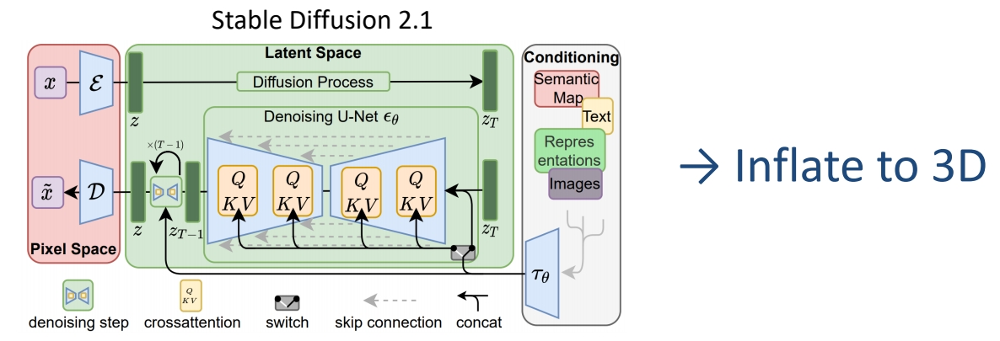
Stage II: Curating a Video Pretraining Dataset
- Systematic Data Curation
- Curate subsets filtered by various criteria (CLIP-, OCR-, optical flow-, aesthetic-scores…)
- Assess human preferences on models trained on different subsets
- Choose optimal filtering thresholds via Elo rankings for human preference votes
- Well-curated beats un-curated pretraining dataset
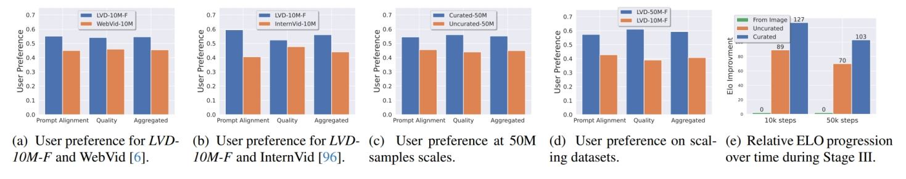
Stage III: High-Quality Finetuning
- Finetune base model (pretrained from Stages I-II) on high-quality video data
- High-Resolution Text-to-Video Generation
- ~1M samples. Finetune for 50K iterations at 576x1024 (in contrast to 320x576 base resolution)
- High Resolution Image-to-Video Generation
- Frame Interpolation
- Multi-View Generation
- High-Resolution Text-to-Video Generation
- Performance gains from curation persists after finetuning

训练
数据集
Scaling latent video diffusion models to large datasets
Data Processing and Annotation
- Cut Detection and Clipping
- Detect cuts/transitions at multiple FPS levels
- Extract clips precisely using keyframe timestamps
- Synthetic Captioning
- Use CoCa image captioner to caption the mid-frame of each clip
- Use V-BLIP to obtain video-based caption
- Use LLM to summarise the image- and video-based caption
- Compute CLIP similarities and aesthetic scores
- Filter Static Scene
- Use dense optical flow magnitudes to filter static scenes
- Text Detection
- Use OCR to detect and remove clips with excess text
Blattmann et al., “Stable Video Diffusion: Scaling Latent Video Diffusion Models to Large Datasets,” 2023.
✅ SVD：构建数据集
✅ (1) 把视频切成小段，描述会更准确
✅ (2) 用现有模型生成视频描述
loss
训练策略
实验与结论
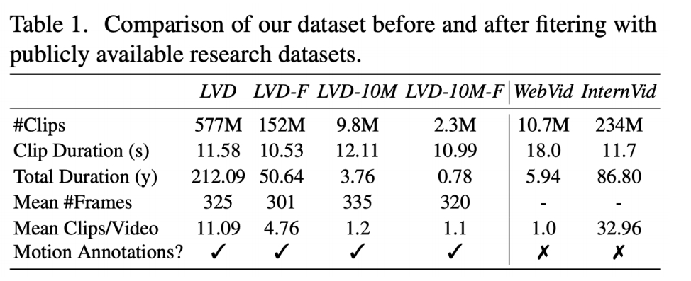
有效
局限性
启发
✅ 在少量高质量数据上 finetune，质量提升很大。
遗留问题
参考材料
UniAnimate: Taming Unified Video Diffusion Models for Consistent Human Image Animation
Ali,开源
核心问题是什么?
输入reference ID和driving pose，生成视频
目的
UniAnimate框架，以实现高效和长期的人类视频生成。
现有方法
当前的Diffusion Model存在两个问题：
i）需要额外的参考模型来将ID图像与主视频分支对齐，这大大增加了优化负担和模型参数；
ii）生成的视频通常时间较短（例如，24帧），阻碍了实际应用。
本文方法
首先，为了降低优化难度并确保时间一致性，我们通过结合统一的视频扩散模型将参考图像与姿态引导和噪声视频映射到一个共同的特征空间中。
其次，我们提出了一种统一的噪声输入，支持随机噪声输入和第一帧条件输入，从而增强了生成长期视频的能力。
最后，为了进一步有效地处理长序列，我们探索了一种基于状态空间模型的替代时态建模架构，以取代原始的计算消耗较大的Temporal Transformer。
效果
UniAnimate在定量和定性评估方面都取得了优于现有最先进同行的合成结果。
UniAnimate可以通过迭代地采用第一帧调节策略来生成高度一致的一分钟视频。
核心贡献是什么？
- 提出了具有一致性的人体图像动画的UniAnimate框架。具体来说，我们利用统一的视频扩散模型来同时处理参考图像和噪声视频，促进特征对齐并确保时间相干的视频生成。
- 为了生成平滑连续的视频序列，我们设计了一个统一的噪声输入，允许随机噪声视频或第一帧条件视频作为视频合成的输入。第一帧调节策略可以基于先前生成的视频的最后一帧生成后续帧，确保平滑过渡。
- 为了减轻一次生成长视频的限制，我们利用时态Mamba[15,30,93]来替换原始的时态Transformer，显著提高了效率。
- 我们进行全面的定量分析和定性评估，以验证我们的UniAnimate的有效性，突出其与现有最先进方法相比的卓越性能。
大致方法是什么？
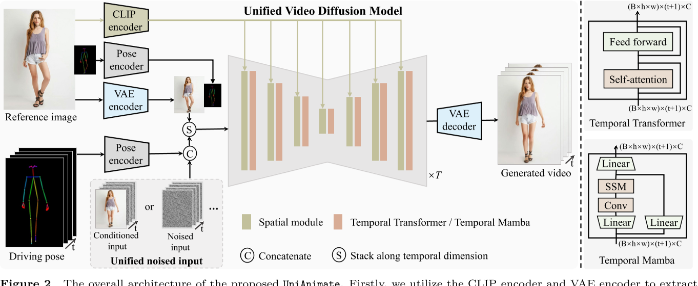
首先，我们利用CLIP编码器和VAE编码器来提取给定参考图像的潜在特征(左上)。为了便于学习参考图像中的人体结构，我们还将参考姿势的表示纳入最终的reference guidance中（左上）。随后，我们使用姿势编码器对目标驱动的姿势序列进行编码，并将其与噪声输入在channel维度上连接起来（左下）。噪声输入是从第一帧条件视频或噪声视频导出的(?)。然后，将级联的噪声输入与reference guidance沿着时间维度进行叠加，并将其馈送到统一的视频扩散模型中以去除噪声(左中)。统一视频扩散模型中的时间模块可以是temporal transformer或temporal Mamba。最后，采用VAE解码器将生成的latent video映射到像素空间。
训练与验证
数据集
loss
训练策略
有效
局限性
启发
遗留问题
参考材料
- 项目页面：https://unianimate.github.io/
Align your Latents: High-Resolution Video Synthesis with Latent Diffusion Models
INVIDIA，不开源，精读
核心问题是什么?
目的
将 LDM 范式应用于高分辨率视频生成
现有方法
本文方法
- 在图像上预训练 LDM
- 通过向LDM（UNet部分和Decoder部分）引入时间维度，并用编码图像序列（即视频）进行微调，将图像生成器变成视频生成器。
- 在扩散模型upsamplers上引入时间层，将它们转变为时间一致的视频超分辨率模型。
效果
野外驾驶数据的生成
在分辨率为 512 × 1024 的真实驾驶视频上验证了我们的视频 LDM，实现了最先进的性能。
文生成视频的创意内容创建
可以轻松利用现成的预训练图像 LDM，因为在这种情况下我们只需要训练时间对齐模型。
好处：可以将公开可用的、最先进的文本到图像 LDM 稳定扩散转换为高效且富有表现力的文本到视频模型，分辨率高达 1280 × 2048。且这种训练时间层的方式可以推广到不同的微调文本到图像 LDM。
核心贡献是什么？
-
高分辨率长视频合成：LDMs扩展了传统的图像合成模型，使其能够生成高分辨率的长视频，是首个高分辨率长视频生成模型。
-
潜在空间中的扩散模型：与传统在像素空间中训练的模型不同，LDMs在潜在空间（latent space）中训练扩散模型，这可以减少计算和内存的需求。
-
时间维度的引入：作者通过在潜在空间中引入时间维度，将图像生成器转换为视频生成器，并通过在编码的图像序列（即视频）上进行微调来实现这一点。
-
时间对齐的扩散模型上采样器：通过引入时间层，可以将用于图像超分辨率的扩散模型上采样器转换为视频超分辨率模型，从而保持时间上的连贯性。
-
实际应用：论文中提到了两个实际应用案例：野外驾驶数据的合成和文本到视频的创意内容创建。
-
预训练和微调：LDMs可以利用现成的预训练图像LDMs，通过仅训练时间对齐模型来实现视频生成，这大大减少了训练成本。
-
个性化视频生成：通过将训练好的时间层与不同微调的文本到图像LDMs结合，论文展示了个性化文本到视频生成的可能性。
-
计算效率：通过在潜在空间中进行操作，LDMs能够在保持高分辨率输出的同时，降低训练和推理时的计算需求。
-
模型架构：论文详细介绍了LDMs的架构，包括如何通过插入时间层来扩展现有的图像生成模型。
大致方法是什么？
✅ 所有工作的基本思路：(1) 先从小的生成开始 (2) 充分利用 T2I．

图像生成模型 -> 视频生成模型
引入 Temporal Layers
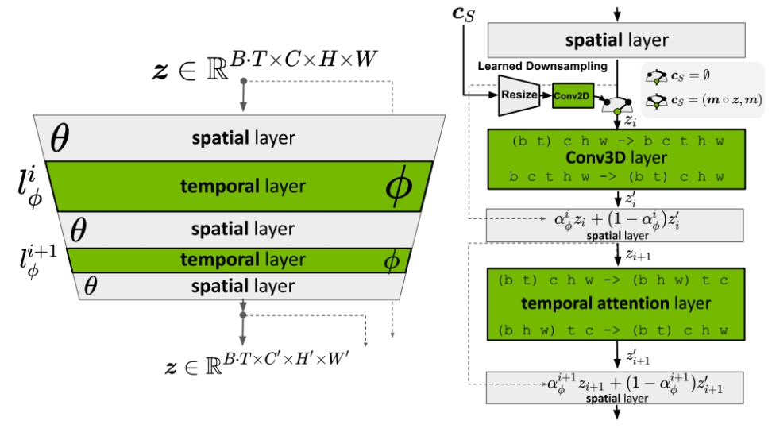
Interleave spatial layers and temporal layers.
The spatial layers are frozen, whereas temporal layers are trained. Temporal 层与原始的Spatial 层是以residual的形式结合，省略掉维度变换的过程，
$$ z1 = Spatial Attention(z) \\ z2 = Temporal Attention(z1)\\ z3 = \alpha z1 + (1-\alpha) z2 $$
定义时间层
Temporal layers can be Conv3D or Temporal attentions.
- For Conv3D, shape is [batch, channel, time, height, width]
- For Temporal attention, shape is [batch \(^\ast \)height\(^\ast \) width, time, channel]
✅ 时序层除了时序 attention，还有 3D conv，是真正的 3D，但是更复杂，且计算、内存等消耗更大。
✅ 时序attention只是时间维度的融合，而3D conv是在f, w, h三个维度同时融合。
引入time PE
相对 sinusoidal embeddings [28, 89]
训练方法
先移除Temporal Layer(令alpha=1)，只训练Spatial Layer。然后Fix Spatial Layer，只训练Temporal Layer。
训练image model和video model使用相同的noise schedule。
Temporal Autoencoder Finetuning
原始的LDM是在图像上训练的，因此其Encoder&Decoder重建出的视频会闪烁。
解决方法：在Decoder中引入temporal layer，并用视频重训。
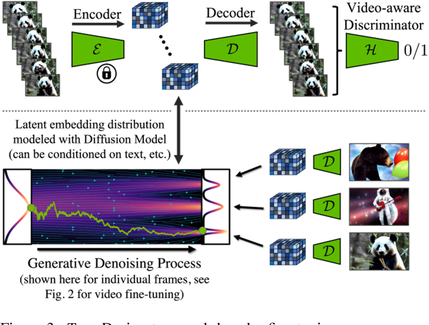
上图：微调解码器中的时间层时，会fix编码器，因此编码器是独立处理帧。解码时强制跨帧进行时间相干重建。使用Video-aware Discrimator。下图：在 LDM 中，解码是逐帧进行的。
长视频生成
模型一次生成的帧数有限，通过两种方式生成长视频：
- 上一次生成的尾帧作为context注入到下一次生成的首帧信息中，以自回归方式生成长视频。
- 生成低帧率视频，再插帧，同样帧数，低帧率视频时间更长。
本节（论文3.2）解决context注入的问题。
下节（论文3.3）解决低帧率视频插帧的问题。
Context 的构建 \(\mathbf{c} _S = (\mathbf{m} _S \circ \mathbf{z} ,\mathbf{m} _S)\)
- 构建 mask，长度为 T，需要参考预置内容的帧置为1，需要生成的帧置为0。
- 构建Z。训练时取GT对应帧，调整到对应(w,h), 经过SD Encoder,即为Z。推断时，取上一批生成过程的中间结果Z的对应帧。
- 构建\(\mathbf{c} _S\). Z 与 mosk 逐元素乘，其结果在channel维度上与 mask concat. 最终shape为 (B,T,c+1,w,h)
模型结构
[❓] 3D Conv 是怎样使用 \(\mathbf{c} _S\) 的？
答：文章没有说明，推没为 channel 维度的 concat.后面文章都没有使用这种方法注入 reference Image，可能是效果不好，或者使用时有其它局限性。
训练策略
CFG
Upsampler diffusion model
插帧模型的训练方法与自回归模型的训练相似,即 context 注入和 CFG 训练,区别在于 mask 的构造不同。
超分
引入现有的 diffusion based 图像超分方法，提升生成视频的分辨率。在现有方法的模型中引入时间层，保证了超分视频内容的时间一致性。
“驾驶视频生成”应用在像素空间做超分。“T2V” 应用在 latent 空间做超分。
为什么选择在像素空间做超分？作者没有解释，可能是因为这样效果更好。
为什么可以在像素空间做超分？因为超分不需要关注较长的时序连续性（生成模型已经处理好这个问题）。所以训练时一个数据只包含较少的patch，在像素空间上也能训得起来。
训练
数据集
RDS Videos
WebVid-10M
loss
训练策略
- 先训练图像生成的 LDM 或使用预训练的，再训练时序层。
- CFG 方式引入 context 条件。
实验与结论
实验一：
- Origin SD Decoder
- SD Decoder + 时序层 + 视频数据 finerune
效果： 2的 FVD 明显优于1
结论： Decoder 中引入时序信息，对视频生成质量非常重要。时序层会轻微牺牲单帧图像的质量，换来时序上的合理性。
实验二：
- 不使用 AutoEncoder，直接在像素上训练 DM。
- 不使用预训练的 Spatial Layer，使用训练数据同时训Spatial Layer 和 Temporal Layer.
- Temporal Layer 不使用 Conv 3D 而是使用 Temporal Attention.
- 全量模型。
效果：
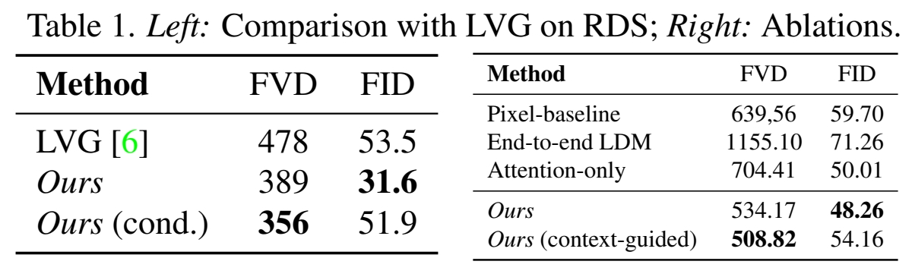
结论： Latent Embedding 图像上的预训练模型，Conv3D对视频生成质量都有时显提升。
实验三：
1.Image LDM 替换成 Dream Booth 版本
效果： 可以生成 Dream Booth 训练数据中的特定角色的视频，且角色有较好的一致性。
结论： 通过替换 Spatial 层，可以实现定制化的 T2V 生成。
实验四：
在低分辨率视频上训练的模型直接用于生成高分辨率视频。
效果： 可通过调声初始噪声的维度直接生成高分辨率视频，在生成质量有所下降。
结论： 在高分辨率视频生成上具有泛化性，这是图像 LDM 的固有属性，是通过 UNet 主干的卷积性质实现的。可以通过控制初始噪声的维度生成指定维度的视频。
实验五：
在短视频上训练的模型直接用于生成长视频。
效果： 可生成，质量下降。
结论： 原理与分辨率的泛化性类似通过对模型结构做特定的调整，可支持视频帧数的泛化性。为了适配帧数泛化性，所做的设计为：
- temporal attention 层的 time 使用相对正弦编码。
- temporal attention 层的 mask 设置为前后可见8帧。
- spatial 和 temporal 的混合系数 2 为 scaler.
实验六：
- 直接在预训练的 SD（较高分辨率）用视频数据（较低分辨率）训练新加入的时序层。
- 先用视频数据 feature SD，然后再训练时序层。
效果： 1的视频生成质量严重下降，2会导致 SD 的图像生成质量下降，但最终的视频生成质量优于1。
结论：
- 2先对 SD finetune 是必要的，以防止对视频建模时出现失分布的情况。
- 使用预训练模型时，如果推断数据与预训练数据有较大的偏差，考虑对预训练参数做微调，否则，可以 fix.
- 微调预训练模型的方式可以是先微调再 fix，也可以是联合优化，二者有什么区别？
有效
-
实验结果： 论文提供了在真实驾驶视频数据集上的实验结果，展示了LDMs在生成高分辨率、长时间视频方面的性能。
-
模型泛化能力： 通过在不同的微调设置下测试时间层，论文展示了这些层在不同模型检查点之间的泛化能力。
-
文本到视频的生成： 论文展示了如何将文本到图像的LDM扩展为文本到视频的生成模型，并通过实验验证了其有效性。
局限性
启发
每一帧独立上采样（或Decoder）会严重破坏视频的帧间连续性。
遗留问题
- 为什么应用1在像素空间做超分，而应用2在 latent 空间做超分？是因为数据集不同？应用场景不同？还是任务不同？
- 超分是彼么做的？
参考材料
Puppet-Master: Scaling Interactive Video Generation as a Motion Prior for Part-Level Dynamics
数据集，不开源
核心问题是什么?
零件级运动的视频生成
目的
Puppet-Master 是一种交互式视频生成模型，可以作为零件级动态的运动先验。
在测试时，给定单个图像和一组稀疏的运动轨迹（即拖动），Puppet-Master 可以合成一个视频，描绘忠实于给定拖动交互的真实零件级运动。
现有方法
这是一个新问题，无现有方法
本文方法
- 微调大规模预训练视频扩散模型SVD
- 提出了一种新的调节架构来有效地注入拖动控制
- 引入了all-to-first注意力机制，替换原始模型中空间注意力模块。它通过解决现有模型中的外观和背景问题来显着提高生成质量。
- 使用 Objaverse-Animation-HQ 数据，这是一个精心策划的部件级运动剪辑的新数据集。
- 提出了一种策略来自动过滤掉次优动画并通过有意义的运动轨迹增强合成渲染。
效果
PuppetMaster 可以很好地推广到各种类别的真实图像，并在现实世界基准上以零样本的方式优于现有方法。
核心贡献是什么？
-
交互式视频生成：Puppet-Master能够在测试时，根据单个图像和稀疏的运动轨迹合成视频，这些视频展示了与给定拖动交互一致的真实部分级别运动。
-
运动先验：与传统的运动模型不同，Puppet-Master学习了一种更通用的运动表示，能够捕捉到对象内部动态，如抽屉滑出柜子或鱼摆动尾巴等。
-
数据集创建：论文提出了Objaverse-Animation-HQ，这是一个新的数据集，包含经过筛选的部分级别运动剪辑，用于训练Puppet-Master。
-
新的条件架构：为了有效地将拖动控制注入视频生成流程，论文提出了一种新的条件架构，包括自适应层归一化和带有拖动标记的交叉注意力模块。
-
all-to-first 注意力机制：为了解决现有模型中的外貌和背景问题，论文引入了all-to-first 注意力机制，这是一种替代传统空间注意力模块的方法，通过直接从条件帧传播信息来显著提高生成质量。
-
新的评价指：根据局部零件运动轨迹的相似度，制定了 flow-error 评价指标，可以更好地评价零件级运动视频的生成质量。
大致方法是什么？
 在原始的SVD架构的基础上做以下修改；基模型为link
在原始的SVD架构的基础上做以下修改；基模型为link
- 添加自适应层归一化模块来调节内部扩散特征(上图A模块)
- 添加带有拖动标记的交叉注意(上图B模块)
- 引入了 all-to-first 空间注意力，代替原有空间自注意力模块。它使用第一帧来关注每个带噪声的视频帧。(上图C模块)
要解决的问题：
-
将拖动条件 D 注入视频生成管道中，以促进高效学习和准确且时间一致的运动控制，同时避免过多修改预训练视频生成器的内部表示。论文3.2节解决拖动条件注入的问题，论文3.3节解决伪影问题。 本文以两种方式注入拖动条件
-
使用拖动编码调制 UNet feature 这种方式要求二者之间有相同的结构，常用于图像的不同图层之间。
-
以 embedding 的形式与 UNet feature 进行 cross attention 这种方式不要求有相同的结构，常用于两个embedding 之间。类似于 SD 中和 CLip Embedding.
-
仅仅微调预先训练的SVD可能会导致杂乱背景等伪影[39]。
向SVD模型添加拖动控制
- 引入拖动 D 的编码函数
- 扩展 SVD 架构以将生成的代码注入网络
- 使用视频与训练三元组 (X , y, D) 形式来微调模型。
拖动编码
这是一个hand-crafted的编码方式，编码结果为：K * N * s * s * C
K：控制点的个数
N：视频帧数
s：分辨率
c：6，分别是start location, current localtion, end_location
格子没有控制点经过填-1
[❓] 直接记录位置，为什么还要SXS？
答：以 s * s 结构记录特征，是为了与 UNet feature 保持同样的信息结构，具有相同结构的特征才能以调制的方式融合。
拖动调制
调制：调整特征的均值和方差，使其与其它特征区别开来。但又不影响特征的原始结构。
$$ f_s \leftarrow f_s \bigotimes （1 + \gamma_s） + \beta_s $$
fs为UNET在s分辨率下的特征。gamma和beta通过对拖动编码做卷积操作得到。
以调制的方式让拖动编码影响原始特征
Drag Token（拖动标记）
原始的SVD中的cross attention是clip embedding与z之间的。
此处把拖动编码进行MLP之后拼接到clip embedding上，成为新的clip embedding，即Drag Token。
Attention with the Reference Image
实验观察结论：
- 生成的视频具有杂乱的或者灰色的背景，这是由于SVD 是在 576 × 320 视频上进行训练，无法泛化到非常不同的分辨率。强行在其它分辨上finetune，容易出现局部最优。
- 当模型学习到复制参考图像作为第一帧，第一帧的appearance不会出现退化。
✅ 我认为外观效果降级不是因为分辨率的改变，而是 reference Image 的注入方式。
本文把 reference Image 以 CLIP Embedding 进行注入，但 CLIP Embedding 只是对图像的 high level 的理解，但对外观细节的约束比较弱，因此导致外观效果的降级。原始的 SVD 中的照片续写应用，会把首帧的信息以 Context 的形式注入，这是一种对 reference Image 的更强力的约束，这里没有了这一部分设计。
因此：
创建一条从每个噪声帧到第一帧的“shortcut”，并具有all-to-first的空间注意力，这即使不能完全解决问题，也可以显着缓解问题。
本文设计：
原始的cross attention机制的Q, K, V都是B * N * s * s * C的维度。spatial cross attention是在空间维度上做的，因此第i帧中参与计算的内容是Q[:,i], K[:,i], V[:,i]。但在此处分别将它们修改为Q[:,i], K[:,0], V[:,0]。
✅ 增加 UNet feature 与 reference Image 的 cross attention 也是同样的效果。
好处：
- 第一帧的这种“short cut”允许每个非第一帧直接访问参考图像的未降级外观细节，从而有效地减轻优化过程中的局部最小值。
- 与所提出的drag encoding相结合，该编码为每一帧指定第一帧的原点 uk ，all-to-one注意力使包含拖动终止（即 vn k ）的latent像素更轻松关注第一帧上包含拖动原点的潜在像素，可能有助于学习。
训练
数据集
- Objaverse：原始数据集由 3D 艺术家创建的 800k 模型的大型 3D 数据集，其中约 40k 是可动画的。
- 从中挑出可被驱动的3D模型，设置规则 + 分类器的方法，生成数据集 Objaverse-animation.
- 从可驱动模型中挑出合理的驱动，生成数据集 Objaverse-Animation-HQ.
- 设计动作从中提取出稀疏的drag motion
loss
训练策略
实验与结论
实验一：
使用包含不同信息的拖拽编码调制 UNet 特征。
效果：

结论： 拖拽编码调制 UNet 特征进行调制，对闪果有很大提升。
实验二：
使用不同数据进行训练。
- Objaverse-Animation
- Objaverse-Animation-HQ
效果： 2优于1。
结论： Less is more.
有效
-
零样本泛化**：尽管Puppet-Master仅使用合成数据进行**微调，但它能够在真实世界数据上实现良好的零样本泛化，超越了之前在真实视频上微调的方法。
-
数据筛选策略：论文提出了一种系统方法来大规模筛选动画，以创建数据集Objaverse-Animation和Objaverse-Animation-HQ，这些数据集包含更高质量和更逼真的动画。
-
实验验证：通过广泛的实验，论文展示了Puppet-Master在合成连贯性、保真度和可控性方面的优势，并证明了其在不同任务和数据集上的有效性。
局限性
启发
- 一种拖动交互的编码方式。
- 真实视频数据有限时的一种数据构造方式。
遗留问题
参考材料
- 项目页面：vgg-puppetmaster.github.io。
A Recipe for Scaling up Text-to-Video Generation
Ali,开源，VGen
核心问题是什么?
目的
基于diffusion model的文生视频
现有方法
文本视频的pair data规模有限。但是无标注的视频剪辑有很多。
本文方法
TF-T2V：一种新颖的文本到视频生成框架。它可以直接使用无文本视频进行学习。其背后的基本原理是将文本解码过程与时间建模过程分开。 为此，我们采用内容分支和运动分支，它们通过共享权重进行联合优化。
效果
通过实验，论文展示了TF-T2V在不同规模的数据集上的性能提升，证明了其扩展性。此外，TF-T2V还能够生成高分辨率的视频，并且可以轻松地应用于不同的视频生成任务。
核心贡献是什么？
-
文本到视频的生成框架（TF-T2V）：提出了一个新的框架，它利用无文本的视频（text-free videos）来学习生成视频，从而克服了视频字幕的高成本和公开可用数据集规模有限的问题。
-
双分支结构：TF-T2V包含两个分支：内容分支（content branch）和运动分支（motion branch）。内容分支利用图像-文本数据集学习空间外观生成，而运动分支则使用无文本视频数据学习时间动态合成。
-
时间一致性损失（Temporal Coherence Loss）：为了增强生成视频的时间连贯性，提出了一个新的损失函数，它通过比较预测帧与真实帧之间的差异来显式地约束学习相邻帧之间的相关性。
-
半监督学习：TF-T2V支持半监督学习设置，即结合有标签的视频-文本数据和无标签的视频数据进行训练，这有助于提高模型的性能。
大致方法是什么？
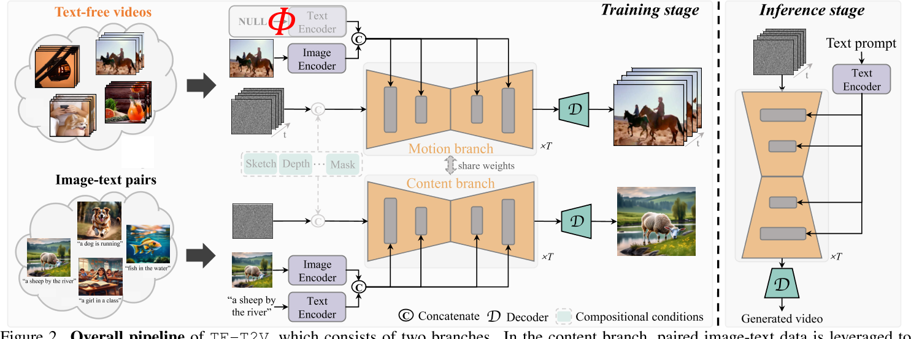
—— 在内容分支中，利用成对的图像文本数据来学习文本条件和图像条件的空间外观生成。
—— 运动分支通过提供无文本视频（或部分配对的视频文本数据，如果可用）来支持运动动态合成的训练。
—— 在训练阶段，两个分支联合优化。值得注意的是，TF-T2V 可以通过合并可组合条件无缝集成到组合视频合成框架中。
—— 在推理中，TF-T2V 通过将文本提示和随机噪声序列作为输入来实现文本引导视频生成。
运动分支
数据集： 纯视频、视频 - 文本 Pair data
输入： 视频的中间帧并使用 CLIP 编码。与生成视频同维度的噪声。
✅ 3个数据集，2个分支，组全出4种训练策略。
—— 输入文本，生成图像。
—— 输入图像，生成图像。
—— 输入图像（视频中间帧），生成视频。
—— 输入图像（视频中间帧）+ 文本，生成视频。
❓ 如何平衡这4种训练策略的训练顺序、训练次数、数据量？
❓ 不同训练数据及预训练数据的图像分辨都不相同，如何处理这其中的 GAP？
训练参数： 同时训练 Spatial Layer 和 Temporal Layer.
训练方式： CFG
空间外观分支
数据集： 图 - 文 Pair data
训练参数： 仅 Spatial 模块，且不引入 Temporal 模块
输入： 随机使用文或图作为控制条件，目的是任意一种条件都能引导生成。噪声与生成图像同维度。文本和图像都使用 CLIP 编码。
✅ 这里的 reference Image 是以CLIP Embedding 的形式送进去的,是一种比较弱的约束关系。但这里 reference Image 的作用只是提供一种外观先验，并不是照片续写，所以这样也够用了。
训练模块： 只训 Spatial 部分，不引入 temporal 部分。
[❓] 文本和图像是 Concat 的关系，但一次只提供一个，没有提供的部分填什么？
训练与验证
数据集
LAION-400M, LAION：大规模、高质量的图文数据集
WebVid10M：小规模、低分辨率的文本-视频数据集
YouTube, TikTok：大量无标注视频
loss
新增coherence loss用于计算帧间的连续性。

根据公式3可知 V 是 noise GT,因此 coherence loss 监督 noise 的时序特征。
训练策略
Base Mode:
Model Scipe T2V[54]
VideoComposer[58]
训练所有的视频片断为：4FPS，16 frames
❓ 这里提到 WebVid10M 是作为 text-free 数据集业用的，那么视频一文本 pair ddfa 的训练，用的是什么数据集？
实验与结论
实验一： 同期效果横向对比
效果：
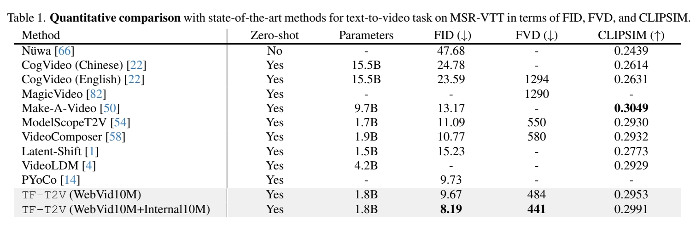
结论： 本文方法生成视频在单帧质和时序连续性上均优于同期模型。
实验二：
- 不使用 coherence loss
- 使用 coherence loss
效果： 生成视频的帧间 CLIP 相似度，2优于1。
给论: coherence loss 有时序一致性有效。
实验三：
- depth/sketch/motion-Image Pair data + 纯视频数，联合训练。
效果： 可以在没有“条件 - 视频” pair data 的情况下，训练出条件视频生成模型。
给论: 内容 / 运动 = 分支训练框加可以有效解决缺少条件 - 视频数据对的问题。
实验四：
- 不使用 coherence loss
- 使用 coherence loss
效果： 比较生成视频连续两帧的 CLIP 相似度，2优于1
结论： temporal coherence loss 可以缓解时序不连续问题（例如 color shift）
实验五：
- 不使用“文本-视频”数据训练
- 使用“文本-视频”数据训练
效果： 2优于1
有效
-
扩展性和多样性：通过实验，论文展示了TF-T2V在不同规模的数据集上的性能提升，证明了其扩展性。此外，TF-T2V还能够生成高分辨率的视频，并且可以轻松地应用于不同的视频生成任务。
-
无需复杂的级联步骤：与以往需要复杂级联步骤的方法不同，TF-T2V通过统一的模型组装内容和运动，简化了文本到视频的生成过程。
❓ 复杂级联步骤是指什么方法？
-
插拔式框架：TF-T2V是一个即插即用（plug-and-play）的框架，可以集成到现有的文本到视频生成和组合视频合成框架中。
-
实验结果：论文通过广泛的定量和定性实验，展示了TF-T2V在合成连贯性、保真度和可控性方面的优势。
局限性
启发
遗留问题
参考材料
- 项目地址：https://github.com/ali-vilab/VGen
High-Resolution Image Synthesis with Latent Diffusion Models
开源，精读
核心问题是什么?
目的
在有限的计算资源上进行 DM 训练，同时保持其质量和灵活性
现有方法
现有模型通常直接在像素空间中运行，且顺序评估，因此训练和推理成本很高。
本文方法
将DM应用在强大的预训练自动编码器的潜在空间中。
- 在这种表示上训练扩散模型首次允许在复杂性降低和细节保留之间达到接近最佳的点，从而极大地提高了视觉保真度。
- 通过将交叉注意力层引入模型架构中，我们将扩散模型转变为强大而灵活的生成器，用于一般条件输入（例如文本或边界框），并且以卷积方式使高分辨率合成成为可能。
效果
LDM 在图像修复和类条件图像合成方面取得了新的最先进分数，并在各种任务上实现了极具竞争力的性能，包括文本到图像合成、无条件图像生成和超分辨率，与基于像素的 DM 相比，同时显着降低了计算要求。
核心贡献是什么？
-
潜在扩散模型（LDMs）：这是一种新型的生成模型，它通过在潜在空间中应用去噪自编码器序列来实现图像合成，能够在保持图像质量的同时，显著减少计算资源的需求。
-
高分辨率图像合成：LDMs能够在高分辨率下生成复杂的自然场景图像，这在以往的技术中往往需要大量的计算资源。
-
计算效率：与基于像素的扩散模型相比，LDMs在训练和推理时更加高效，因为它们在低维的潜在空间中进行操作，而不是在高维的像素空间中。
-
条件生成：LDMs支持多种类型的条件输入，如文本或边界框，使得生成过程更加灵活和可控。
-
跨注意力层（Cross-Attention Layers）：通过引入跨注意力层，LDMs能够将扩散模型转变为强大的生成器，用于处理一般的条件输入。
-
两阶段图像合成方法：LDMs采用两阶段方法，首先通过感知压缩模型（如自编码器）降低数据的维度，然后在潜在空间中训练扩散模型，以学习数据的语义和概念组成。
-
感知压缩：论文提出了一种基于感知损失和对抗性目标的图像压缩方法，以确保重建图像在视觉上与原始图像保持一致。
大致方法是什么？
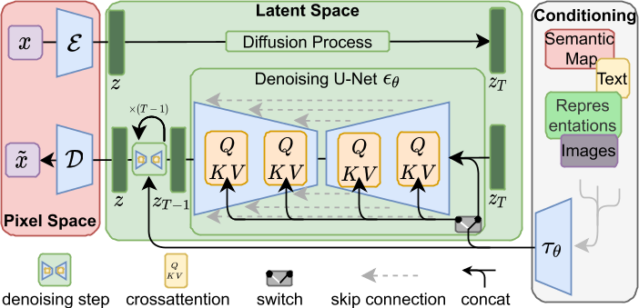
这种方法有几个优点：
- 计算效率更高，因为采样是在低维空间上执行的。
- 利用从 UNet 架构继承的 DM 的归纳偏差 [71]，这使得它们对于具有空间结构的数据特别有效，因此减轻了先前方法所需的激进的、降低质量的压缩级别的需求 [23， 66]。
- 通用压缩模型，其潜在空间可用于训练多个生成模型，也可用于其他下游应用，例如单图像 CLIP 引导合成 [25]。
感知图像压缩
| 输入 | 输出 | 方法 |
|---|---|---|
| image, W * H * 3 | z，h * w * c | Encoder |
| z | image | Decoder |
f = W/w = H/h = 2 ** m
正则化：
- 对学习到的latent潜伏施加与标准正态的 KL 惩罚，类似VAE
- 在解码器中使用矢量量化层，类似VQGAN
高分辨率情况下，VQ中的 Cross-attention 比较消耗 GPU.
与之前工作不同的是z是二维的，以保留其固有结构
class AutoencoderKL(pl.LightningModule):
def encode(self, x):
h = self.encoder(x)
moments = self.quant_conv(h)
posterior = DiagonalGaussianDistribution(moments)
return posterior
def decode(self, z):
z = self.post_quant_conv(z) #矢量量化层
dec = self.decoder(z)
return dec
def forward(self, input, sample_posterior=True):
posterior = self.encode(input)
if sample_posterior:
z = posterior.sample()
else:
z = posterior.mode()
dec = self.decode(z)
return dec, posterior
[❓] Decoder 中的 VQ 是怎么做的？
DDPM
代码中提供了多个DDPM版本，主要差别在input的构造上：
- DDPM --- classic DDPM with Gaussian diffusion, in image space
- LatentDiffusion
- LatentUpscaleDiffusion
- LatentFinetuneDiffusion --- Basis for different finetunas, such as inpainting or depth2image
To disable finetuning mode, set finetune_keys to None
- LatentInpaintDiffusion --- can either run as pure inpainting model (only concat mode) or with mixed conditionings, e.g. mask as concat and text via cross-attn. To disable finetuning mode, set finetune_keys to None
- LatentDepth2ImageDiffusion --- condition on monocular depth estimation
- LatentUpscaleFinetuneDiffusion --- condition on low-res image (and optionally on some spatial noise augmentation)
- ImageEmbeddingConditionedLatentDiffusion
- LatentDiffusion
| ImageEmbeddingConditionedLatentDiffusion |
条件机制
通过交叉注意力机制增强其底层 UNet 主干网，将 DM 转变为更灵活的条件图像生成器 [97]，这对于学习各种输入模态的基于注意力的模型非常有效 [35,36]。
- 领域的编码器 τθ，把条件y 投影到中间表示
- 使用cross attention把z和1混合起来，其中K和V来自1，Q来自z
class DiffusionWrapper(pl.LightningModule):
def __init__(self, diff_model_config, conditioning_key):
super().__init__()
self.sequential_cross_attn = diff_model_config.pop("sequential_crossattn", False)
self.diffusion_model = instantiate_from_config(diff_model_config)
self.conditioning_key = conditioning_key
assert self.conditioning_key in [None, 'concat', 'crossattn', 'hybrid', 'adm', 'hybrid-adm', 'crossattn-adm']
# noise与condition的不同的结合方式
def forward(self, x, t, c_concat: list = None, c_crossattn: list = None, c_adm=None):
# 无条件信息
if self.conditioning_key is None:
out = self.diffusion_model(x, t)
# condition与noise做concat，都作为要生成的内容传进去。没有独立的condition。
elif self.conditioning_key == 'concat':
xc = torch.cat([x] + c_concat, dim=1)
out = self.diffusion_model(xc, t)
# condition与noise做cross attention，论文中所提到的方法
elif self.conditioning_key == 'crossattn':
if not self.sequential_cross_attn:
cc = torch.cat(c_crossattn, 1)
else:
cc = c_crossattn
if hasattr(self, "scripted_diffusion_model"):
# TorchScript changes names of the arguments
# with argument cc defined as context=cc scripted model will produce
# an error: RuntimeError: forward() is missing value for argument 'argument_3'.
out = self.scripted_diffusion_model(x, t, cc)
else:
out = self.diffusion_model(x, t, context=cc)
# concat方式与cross attention方式的混合
elif self.conditioning_key == 'hybrid':
xc = torch.cat([x] + c_concat, dim=1)
cc = torch.cat(c_crossattn, 1)
out = self.diffusion_model(xc, t, context=cc)
# adm似乎是论文参考文献[15]中的方法
elif self.conditioning_key == 'hybrid-adm':
assert c_adm is not None
xc = torch.cat([x] + c_concat, dim=1)
cc = torch.cat(c_crossattn, 1)
out = self.diffusion_model(xc, t, context=cc, y=c_adm)
elif self.conditioning_key == 'crossattn-adm':
assert c_adm is not None
cc = torch.cat(c_crossattn, 1)
out = self.diffusion_model(x, t, context=cc, y=c_adm)
elif self.conditioning_key == 'adm':
cc = c_crossattn[0]
out = self.diffusion_model(x, t, y=cc)
else:
raise NotImplementedError()
return out
- 文本注入，BERT tokenizer + transformer → latert code 与 UNet feature 做 cross attention
效果： 可实现跨模态条件生成，生成质量指标接近 SOTA，但所需的参数量更少。
- 图像注入，在空间维度对齐后 concat.
效果： 这种注入方式用于 image-to-image transtation 任条，例如 Semanic 生成、超分，inpainting.
结论： 信噪比对生成质量有较大的影响。
训练
- Two-stage Training:
- CEG 训练方式极大地提升了 Sample 的质量。
LDM的训练
class LatentDiffusion(DDPM):
def p_losses(self, x_start, cond, t, noise=None):
noise = default(noise, lambda: torch.randn_like(x_start))
x_noisy = self.q_sample(x_start=x_start, t=t, noise=noise)
model_output = self.apply_model(x_noisy, t, cond)
loss_dict = {}
prefix = 'train' if self.training else 'val'
if self.parameterization == "x0":
target = x_start
elif self.parameterization == "eps":
target = noise
elif self.parameterization == "v":
target = self.get_v(x_start, noise, t)
else:
raise NotImplementedError()
loss_simple = self.get_loss(model_output, target, mean=False).mean([1, 2, 3])
loss_dict.update({f'{prefix}/loss_simple': loss_simple.mean()})
logvar_t = self.logvar[t].to(self.device)
loss = loss_simple / torch.exp(logvar_t) + logvar_t
# loss = loss_simple / torch.exp(self.logvar) + self.logvar
if self.learn_logvar:
loss_dict.update({f'{prefix}/loss_gamma': loss.mean()})
loss_dict.update({'logvar': self.logvar.data.mean()})
loss = self.l_simple_weight * loss.mean()
loss_vlb = self.get_loss(model_output, target, mean=False).mean(dim=(1, 2, 3))
loss_vlb = (self.lvlb_weights[t] * loss_vlb).mean()
loss_dict.update({f'{prefix}/loss_vlb': loss_vlb})
loss += (self.original_elbo_weight * loss_vlb)
loss_dict.update({f'{prefix}/loss': loss})
return loss, loss_dict
数据集
loss
训练策略
- train autoencoder first, then train the diffusion prior
✅ VAE 和 diffusion 分开训练。每次需要训练的网络都不大。 - Focus on compression without of any loss in reconstruction quality
✅ 使用Advanced Auto Encoders。由于使用的latent space比较小，diffusion model的大小也可以减小。 - Demonstrated the expressivity of latent diffusion models on many conditional problems
实验与结论
实验1:
- 在 VQ 正则化隐空间训 DM
- 在 pixel 空间训 DM
效果: VQ 重建出的结果相对原视频有轻微下降，但整体生成质量1优于2。
实验2:
Encoder & Decoder 使用不同的压缩率 \(f \in\) {\(1,2,4,8,16,32\)},\(f=1\)代表在像素空间。
效果： \(f=1\)或2时，训练的收敛速度较慢，\(f\) 较大时，训练较少的次数后生成质量不再提升。
结论： 信息压缩有利于模型的训练，但过多的压缩会导致信息丢失和降低上限。
\(f=\){4-16}是模型训练与生成质量之间的好的平衡点。
实验3：
在不同的数据上测试\(f\)的影响。
效果：

结论： ImageNet 的数据相对复杂，对应合适的\(f\)道相对较小，例如4、8
实验4： 横向对比较
- GAN-based Model
- LSGM，一种在 lantert space 的生成模型，但训练策略是 Auto Encoder 和 DM 同时训练。
- 本文方法。
效果： 3优于1和2
结论： AutoEncoder 与 Diffusion Mode 同时训练。latent Space 的分布一直在调整，DM 不得不一直跟随调整来适应 AE 的变化，增大了学习的难度，不利于 DM 的学习。
实验5： 超分模型横向对比。用不同方法对图像降级后做超分。
- LDM-SR
- 本文方法
效果： 客观指标1和2各有优劣。主观评测2优于1。
结论： 客观指标不能很好地匹配人的主观感受。
实验6： inpainting，评价指标 Lama[88]
有效
- 灵活性和通用性：LDMs的潜在空间可以被多次用于不同的生成任务，例如图像修复、超分辨率和文本到图像的合成。
局限性
- 对于高精度的场景，即使显 \(f=4\) 的 AE，也存可能成为生成质量的瓶颈。
- Sample process 速度慢
启发
生成模型的生成图像的好坏，在于它生成的质量，对于图像而言，可以是像素之间的联系性、边界的清晰度、整体画面的结构性等。但不在于它的合理性，因为
- 合理性无法衡量。因为生成一个没有见过的图像，不代表不合理。而能够生成没有见过的图像，正是它的创造性所在。
- 合理性也可以理解为生成的结果符合人类常识。但实际上生成模型并不真正理解人类常识。会生成符合人类常识的结果，只是因为对数据的偏见。
因此，对于生成模型而言，要通过各种方法、策略来提升其生成质量。通过强化数据偏见来提升其合理性。
遗留问题
LDM 的生成速度较慢
参考材料
- paper: https://arxiv.org/abs/2112.10752
- github: https://github.com/Stability-AI/stablediffusion
Motion-I2V: Consistent and Controllable Image-to-Video Generation with Explicit Motion Modeling
核心问题是什么?
INVIDIA，开源
目的
图像到视频合成 (I2V)
输入：参考图像 I 和控制条件
输出：生成一系列后续视频帧，且确保生成的视频剪辑不仅表现出合理的运动，而且忠实地保留了参考图像的视觉外观。
✅ 区别于类似link 这种的“图像生成 → 视频生成”的任务。
现有方法及存在的问题
通过利用扩散模型强大的生成先验，最近的方法显示出有前途的开放域 I2V 泛化能力。
- 现有方法很难维持时间一致性。
- 现有方法对生成结果提供有限的控制。
本文方法
Motion-I2V 通过显式运动建模将 I2V 分解为两个阶段。
对于第一阶段，我们提出了一种基于扩散的运动场预测器，其重点是推导参考图像像素的轨迹。
对于第二阶段，我们提出运动增强时间注意力来增强 VDM 中有限的一维时间注意力。该模块可以在第一阶段预测轨迹的指导下有效地将参考图像的特征传播到合成帧。
效果
[❓] 光流擅长描述视角不变的物体平移，本文以光流为条件为什么能支持较大运动和视点变化，稀疏轨迹和区域注释零镜头视频到视频的转换？
与现有方法相比，即使存在较大运动和视点变化，Motion-I2V 也可以生成更一致的视频。
通过第一阶段训练稀疏轨迹ControlNet，Motion-I2V可以支持用户通过稀疏轨迹和区域注释精确控制运动轨迹和运动区域。与仅依赖文本指令相比，这为 I2V 过程提供了更多的可控性。
此外，Motion-I2V 的第二阶段自然支持零镜头视频到视频的转换。
✅ 优点是精确控制。
缺点是，当用户控制与图像内容存在矛盾时该如何调和？
核心贡献是什么？
-
双阶段图像到视频生成：Motion-I2V将图像到视频的生成分解为两个阶段。第一阶段专注于预测像素级的运动轨迹，第二阶段则利用这些预测轨迹来指导视频帧的生成。
-
显式运动建模：与以往直接学习复杂图像到视频映射的方法不同，Motion-I2V通过显式建模运动来增强生成视频的一致性和可控性。
-
基于扩散的运动场预测：在第一阶段，提出了一种基于扩散模型的运动场预测器，该预测器接收参考图像和文本指令作为条件，并预测参考图像中所有像素的轨迹。
-
运动增强的时间注意力：在第二阶段，提出了一种新颖的运动增强时间注意力模块，用于增强视频潜在扩散模型中有限的一维时间注意力。
-
稀疏轨迹控制：Motion-I2V支持使用稀疏轨迹ControlNet进行训练，允许用户通过稀疏的轨迹和区域注释精确控制运动轨迹和运动区域。
-
区域特定动画（Motion Brush）：框架还支持区域特定的I2V生成，用户可以通过自定义的运动遮罩来指定要动画化的图像区域。
-
零样本视频到视频翻译：Motion-I2V的第二阶段自然支持零样本视频到视频翻译，可以使用源视频的运动信息来指导转换后的第一帧。
大致方法是什么？
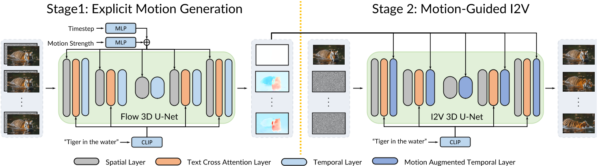
Motion-I2V 概述。 Motion-I2V 的第一阶段的目标是推导能够合理地为参考图像设置动画的运动。它以参考图像和文本提示为条件，预测参考帧和所有未来帧之间的运动场图。第二阶段传播参考图像的内容以合成帧。一种新颖的运动增强时间层通过扭曲特征增强一维时间注意力。该操作扩大了时间感受野并减轻了直接学习复杂时空模式的复杂性。
使用VDM进行运动预测
我们选择采用预先训练的稳定扩散模型进行视频运动场预测，以利用强大的生成先验。
运动场建模
将第一阶段的预测目标（使参考图像动画化的运动场）表示为一系列 2D 位移图{\(f_{0→i}|i = 1,..., N \)}，其中每个 f0→i 是参考帧与时间步 i 处未来帧之间的光流。通过这样的运动场表示，对于参考图像 I0 的每个源像素 p ∈ I2，我们可以轻松地确定其在时间步 i 处目标图像 Ii 上对应的坐标 p′i = p + f0→i(p)。
✅ 根据视频数据生成运动场。
训练运动场预测器
| 模型结构 | 预训练参数 | 训练模块 | 学习目标 |
| 同LDM | LDM | Spatial 层 | 条件下未来第i帧的光流 |
| VLDM（LDM1） | 上一步 | vanilla 时间模块 | 运动场 |
| VLDM | 上一步 | 全部 | 运动场 |
- 调整预训练的 LDM 来预测以参考图像和文本提示为条件的单个位移场。
- 冻结调整后的 LDM 参数，并集成vanilla 时间模块以创建用于训练的 VLDM。
- 继续微调整个 VLDM 模型以获得最终的运动场预测器。
[❓] 任务的输入是稀疏轨迹和区域注释，为什么训练输入是文本注释？
编码运动场和条件图像
考虑到扩散模型的计算效率时，我们使用optical flow encoder 把 motion field map 编码为 latent representation。optical flow encoder 的结构与 LDM 的图像自动编码器相同，不同之处在于它接收和输出2通道光流图而不是3通道RGB图像。
[❓] 光流 encoder 是预训练的吗？
为了引入reference image condition，我们沿着通道维度把reference image latent representation 与 noise concat到一起。
✅ 有三种注入 reference Image 的方法
- 使用 SD encoder 编码后，以 conctext 的形式注入到 conv 3D 中
- 使用 CLIP encoder 编码后，与 UNet feature 做 cross attention
- 使用 SD encoder 编码后，与noise 在 channel 维度 concat.
使用 SD 1.5 预训练模型初始化的 LDM 权重，并将新添加的 4 个输入通道的权重设置为零。
帧步长 i 使用两层 M LP 进行嵌入，并添加到时间嵌入中，作为运动强度条件。
帧步长 i 的作用:表明要生成的是未来第几帧的光流
[❓] 帧步长 i 的注入方式: time embdding + 2MLP?
运动预测和视频渲染
运动增强的时间注意力
通过motion-augmented temporal attention，增强了 vanilla VLDM 的1-D temporal attention的同时，保持其他模块不变。
定义z为第 l 个时间层的 latent feature。简化batch size的情况下，z的维度为 (1+N )×Cl ×hl ×wl，其中 cl、hl、wl 分别表示特征的通道维度、高度和宽度。其中 z[0] 为参考帧对应的特征图，用 z[1 : N ]为后续帧。
[❓] reference 和 noise 是在时间维度还是 channel 维度 concat?
根据第一阶段预测的运动场 {f0→i|i = 1, ..., N } （假设调整大小以对齐空间形状）对z[0]作warp，得到z[i]'
$$ z[i]' = \mathcal W(z[0], f_{i\rightarrow 0}) $$
z[i]'与z[i]在时间维度上交错(intealeaved)，得到
$$ z_{aug} = [[z[0], z[1]', z[1], ..., z[N]', z[N]] $$
调整z和\(z_{aug}\)的维度顺序，使得在后面做时间维度上的attention。
时间维度上的attention为cross attention，其中K和V来自\(z_{aug}\),Q来自z。
✅ 该操作通过引入第一阶段的预测运动场引导，扩大了的时间模块的感受野。
因为 motion field 描述的是当前帧与 reference 帧之间的光流,相当于额外获得了这一段时间的运动信息,所以说有更大的感受野。
选择性噪声
在去噪过程的每个时间步 t，总是将reference image latent code与noise latent code在时间维度上concat，以保证reference image的内容在生成过程中被忠实地保留。
✅ reference image 与 noise concat 的作用。
Motion-I2V生成的细粒度控制
稀疏轨迹控制
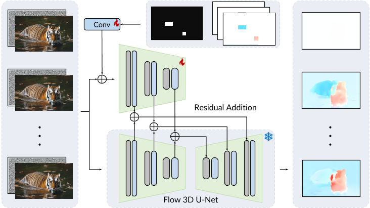
第一阶段中，通过ControlNet把人工绘制的轨迹图作为控制信号进行motion field map的生成。
第二阶段不变。
区域控制
第一阶段中，通过ControlNet把人工绘制的区域图作为控制信号进行motion field map的生成。
第二阶段不变。
视频风格转换
- 使用 image-to-image 第一帧进行图像风格转换
- 使用dense point tracker 计算dispacement space。
- 使用2和1计算motion field
- 使用motion field驱动1
训练
预训练模型
第一阶段：Stable Diffusion v1.5
第二阶段：AnimateDiff v2
数据集
WebVid-10M [1], a large scale text-video dataset
[❓] 3个细粒度控制的应用场中的 ControlNet，如何构造数据
loss
训练策略
实验与结论
实验1： 横向对比

效果： Dynami Crafter 运动幅度较小。Pika 1.0生成的动作类型较少，但质量较高，Gen2的运动幅度大，但有变形。
实验2： Ablation
- 不使用 Stage 1
- 使用 Stage 1 但用普通 attention 进行信息注入。
- 使用 Stage 1 和 motion-augmented temporal attention.
效果：

有效
-
一致性和可控性的比较优势：通过定量和定性比较，Motion-I2V在一致性和可控性方面优于现有方法，尤其是在存在大运动和视角变化的情况下。
-
实验和评估：论文中详细描述了实验设置、评估方法以及与现有方法的比较，证明了Motion-I2V在多个指标上的优势。
局限性
- 生成视频的亮度倾向于中等水平。
这可能是因为noise scedule不强制最后一个时间步具有零信噪比（SNR），这会导致训练测试差异并限制模型的泛化性。使用最新的Zero-SNR noise schedulers可以缓解这个问题。
启发
motion field 的注入方式
遗留问题
参考材料
- 项目页面：https://xiaoyushi97.github.io/Motion-I2V/
数据集：HumanVid
HumanVid是第一个针对人体图像量身定制的大规模高质量数据集动画，结合了精心制作的现实世界和合成数据。
原始数据
- 现实世界的数据：从互联网上收集了大量无版权的现实世界视频。通过精心设计的基于规则的过滤策略，我们确保包含高质量视频，从而收集了 20K 个 1080P 分辨率的以人为中心的视频。
- 收集了 2,300 个无版权的 3D 头像资产，以扩充现有的可用 3D 资产。
合成数据
对原始数据2，使用一种基于规则的相机轨迹生成方法，使合成管道能够包含多样化且精确的相机运动注释，这在现实世界的数据中很少见。
人工标注
生成标注
- 人体和相机运动注释：使用 2D 位姿估计器和基于 SLAM 的方法完成的。
HumanVid: Demystifying Training Data for Camera-controllable Human Image Animation
核心问题是什么?
目的
从角色照片生成视频
现有方法及问题
- 数据集的不可访问性阻碍了公平和透明的基准测试。
- 当前方法优先考虑 2D 人体运动，而忽视了视频中相机运动的重要性，导致控制有限和视频生成不稳定。
本文方法
- 推出了 HumanVid，第一个针对人体图像量身定制的大规模高质量数据集动画，结合了精心制作的现实世界和合成数据。
- 为了验证 HumanVid 的有效性，我们建立了一个名为 CamAnimate 的基线模型，CamAnimate 是相机可控人体动画的缩写，它将人类和相机运动都视为条件。
效果
通过广泛的实验，我们证明了在 HumanVid 上进行的这种简单的基线训练在控制人体姿势和相机运动方面实现了最先进的性能，树立了新的基准。
核心贡献是什么？
-
高质量数据集的创建：HumanVid是首个为人类图像动画量身定制的大规模高质量数据集，它结合了精心挑选的真实世界视频和合成数据。这个数据集的创建强调了高质量、公开可用的数据集在公平和透明基准测试中的重要性。
-
真实与合成数据的结合：为了提高数据的多样性和质量，作者不仅从互联网上收集了大量版权免费的真人视频，还结合了2300多个版权免费的3D头像资产来丰富数据集。
-
相机运动的重要性：与以往主要关注2D人体运动的方法不同，HumanVid和CamAnimate同时考虑了人体和相机运动，这对于生成逼真的人类视频至关重要。
-
精确的相机轨迹注释：通过使用基于SLAM（Simultaneous Localization and Mapping）的方法，作者能够为真实世界视频提供准确的相机轨迹注释，这在以往的数据集中很难找到。
-
规则化的相机轨迹生成方法：为了增强合成数据中相机运动的多样性和精确性，作者引入了一种基于规则的相机轨迹生成方法，这有助于模拟真实视频中常见的相机运动。
大致方法是什么？
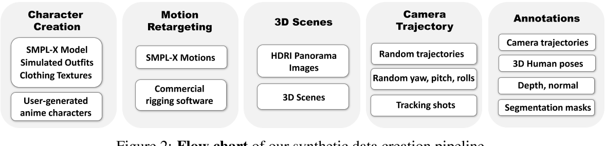
3D建模 + 3D重定向 + 渲染
训练与验证
数据集
loss
训练策略
有效
-
CamAnimate基线模型：这个模型考虑了人体和相机运动作为条件，通过广泛的实验验证了在HumanVid数据集上训练的简单基线模型能够实现对人类姿势和相机运动的控制，达到了最先进的性能。
-
公平和透明的评估基准：通过提供统一的测试协议和数据集，作者为人类视频生成领域建立了一个新的评估基准，这有助于促进该领域的进一步发展和创新。
局限性
启发
遗留问题
参考材料
- 代码和数据：https://github.com/zhenzhiwang/HumanVid/
STORYDIFFUSION: CONSISTENT SELF-ATTENTION FOR LONG-RANGE IMAGE AND VIDEO GENERATION
核心问题是什么?
对于最近基于扩散的生成模型，在一系列生成的图像中保持一致的内容，特别是那些包含主题和复杂细节的图像，提出了重大挑战。
本文方法
- 一致性自注意力：一种新的自注意力计算方法，它显着提高了生成图像之间的一致性，并以零样本方式增强了流行的基于预训练扩散的文本到图像模型。
- 语义运动预测器：一种新颖的语义空间时间运动预测模块。它被训练来估计语义空间中两个提供的图像之间的运动条件。该模块将生成的图像序列转换为具有平滑过渡和一致主题的视频，比仅基于潜在空间的模块更加稳定，特别是在长视频生成的情况下。
效果
通过合并这两个新颖的组件，我们的框架（称为 StoryDiffusion）可以描述基于文本的故事，其中包含包含丰富内容的一致图像或视频。
核心贡献是什么？
-
一致性自注意力（Consistent Self-Attention）：提出了一种新的自注意力计算方法，能够在生成图像的过程中显著提高内容的一致性，例如保持角色身份和服饰的一致性。这种方法不需要额外的训练，可以以零样本（zero-shot）的方式插入到现有的扩散模型中。
-
语义运动预测器（Semantic Motion Predictor）：为了将一系列图像转换为具有平滑过渡的视频，提出了一种新的模块，它在语义空间中估计两张图像之间的运动条件。这种方法在长视频生成中特别有效，能够生成比仅基于潜在空间的方法更稳定的视频。
-
StoryDiffusion框架：结合了上述两个新组件，能够根据文本描述生成一致性的图像或视频，涵盖了丰富多样的内容。这种方法在视觉故事生成方面进行了开创性的探索。
-
无需训练的一致性图像生成：StoryDiffusion能够在不需要训练的情况下，通过分割文本故事并使用提示生成一系列高度一致的图像，这些图像能够有效地叙述一个故事。
-
滑动窗口技术：为了支持长故事的生成，StoryDiffusion实现了与滑动窗口相结合的一致性自注意力，这消除了峰值内存消耗对输入文本长度的依赖，使得长故事的生成成为可能。
-
预训练的运动模块：结合预训练的运动模块，Semantic Motion Predictor能够生成比现有条件视频生成方法（如SEINE和SparseCtrl）更平滑、更稳定的视频帧。
大致方法是什么？
第一步：根据描述生成一系列一致的图像，作为关键帧
第二步：在关键帧之间生成中间动作，补全成视频
免训练一致图像生成
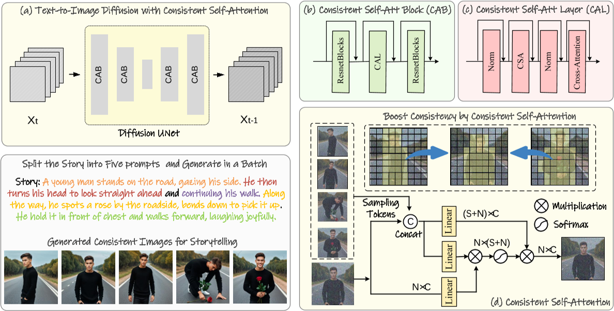
StoryDiffusion 生成主题一致图像的流程。为了创建主题一致的图像来描述故事，我们将一致的自我注意力融入到预先训练的文本到图像的扩散模型中。我们将故事文本拆分为多个提示，并使用这些提示批量生成图像。一致的自注意力在批量的多个图像之间建立连接，以实现主题一致性。
[?] 这个图画得不对？代码上还有
input_id_images作为输入
pipeline
# 简化代码，保留关键过程，源码请查看github
class PhotoMakerStableDiffusionXLPipeline(StableDiffusionXLPipeline):
@torch.no_grad()
def __call__(...):
# 0. Default height and width to unet
...
# 1. Check inputs. Raise error if not correct
...
# 2. Define call parameters
...
# 3. Encode input prompt，同时将reference image注入到embedding中
for prompt in prompt_arr:
# 3.1 Encode input prompt with trigger world
...
# 3.2 Encode input prompt without the trigger word for delayed conditioning
# 分别生成带trigger world的embedding和不带trigger world的embedding是训练策略。先保证无trigger world的普通生成质量，再加入trigger world。
...
# 5. Prepare the input ID images
...
# 7. Prepare timesteps
...
# 8. Prepare latent variables，latents的状态会累积
latents = self.prepare_latents(
...
latents, # init latents可以为None
)
# 9. Prepare extra step kwargs. TODO: Logic should ideally just be moved out of the pipeline
...
# 10. Prepare added time ids & embeddings
...
# 11. Denoising loop
...
# 12. decoder and get image
...
return image
使用Textual Inversion把Reference Image注入到文本中
# 简化代码，保留关键过程，源码请查看github
# 3. Encode input prompt
for prompt in prompt_arr:
# 3.1 Encode input prompt with trigger world
(
prompt_embeds, # 记录所有prompt的embeds
pooled_prompt_embeds, # 记录当前prompt的embeds
class_tokens_mask,
) = self.encode_prompt_with_trigger_word(
prompt=prompt,
prompt_2=prompt_2,
nc_flag = nc_flag,
...
)
# 3.2 Encode input prompt without the trigger word for delayed conditioning
# 先生成不带trigger world的prompt
# encode, 此处的encode是prompt转为token的意思，与上下文中的Encode不同
tokens_text_only = self.tokenizer.encode(prompt, add_special_tokens=False)
# remove trigger word token
trigger_word_token = self.tokenizer.convert_tokens_to_ids(self.trigger_word)
if not nc_flag:
tokens_text_only.remove(trigger_word_token)
# then decode, token -> prompt
prompt_text_only = self.tokenizer.decode(tokens_text_only, add_special_tokens=False)
# 再Encode
...
# 5. Prepare the input ID images
...
if not nc_flag:
# 6. Get the update text embedding with the stacked ID embedding
prompt_embeds = self.id_encoder(id_pixel_values, prompt_embeds, class_tokens_mask)
bs_embed, seq_len, _ = prompt_embeds.shape
# [B, S, D] -> [B, S*N, D]
prompt_embeds = prompt_embeds.repeat(1, num_images_per_prompt, 1)
# [B, S*N, D] -> [B*N, S, D] --- 这个直接repeat(N,1,1)有什么区别？
prompt_embeds = prompt_embeds.view(bs_embed * num_images_per_prompt, seq_len, -1)
pooled_prompt_embeds = pooled_prompt_embeds.repeat(1, num_images_per_prompt).view(
bs_embed * num_images_per_prompt, -1
)
pooled_prompt_embeds_arr.append(pooled_prompt_embeds)
pooled_prompt_embeds = None
第一步：对input prompt进行Encode
对input prompt进行Encode。其中prompt中是否包含trigger world token没有本质区别，只是一种训练策略。Encode的过程包括tokenize和text encode。
prompt --(tokenize)--> token --(text encode)--> embedding。
其中tokenize的过程有一些特殊处理，过程如下：
| 输入 | 输出 | 操作 |
|---|---|---|
| world list | token list | tokenizer.encode |
| token list | class_token_index, clean_input_ids list | token list中与trigger world token不同的token被放入clean input ids中，与trigger world token相同的token则被丢弃。 作者认为trigger world代表reference image，是一个名词，那么它前面的词就是形容reference image的特征的关键词，代码里称其为class。这个关键词在clean input ids中的index被记录到class_token_index list中。 实际上，只允许trigger world token在prmopt token中出现一次，因此也只有关键词及其在clean input ids中的index。 |
| class_token_index, clean input ids = [token, token, class, token, ...], reference image的数量 | clean input ids = [token, token, class,class, class, token, ...] | 根据reference image的数量重复class token |
| clean input ids | clean input ids | 把clean input ids补充或截断到固定长度 |
| clean input ids | class_tokens_mask | 标记clean input ids中哪些是class |
| clean input ids | prompt_embeds | 对每一个token逐个进行embedding并concat |
具体代码如下：
def encode_prompt_with_trigger_word(
self,
prompt: str,
prompt_2: Optional[str] = None,
num_id_images: int = 1,
device: Optional[torch.device] = None,
prompt_embeds: Optional[torch.FloatTensor] = None,
pooled_prompt_embeds: Optional[torch.FloatTensor] = None,
class_tokens_mask: Optional[torch.LongTensor] = None,
nc_flag: bool = False,
):
...
# Find the token id of the trigger word
image_token_id = self.tokenizer_2.convert_tokens_to_ids(self.trigger_word)
# Define tokenizers and text encoders
...
if prompt_embeds is None:
...
for prompt, tokenizer, text_encoder in zip(prompts, tokenizers, text_encoders):
input_ids = tokenizer.encode(prompt)
# Find out the corresponding class word token based on the newly added trigger word token
for i, token_id in enumerate(input_ids):
if token_id == image_token_id:
class_token_index.append(clean_index - 1)
else:
clean_input_ids.append(token_id)
clean_index += 1
# 异常处理
...
class_token_index = class_token_index[0]
# Expand the class word token and corresponding mask
class_token = clean_input_ids[class_token_index]
clean_input_ids = clean_input_ids[:class_token_index] + [class_token] * num_id_images + \
clean_input_ids[class_token_index+1:]
# Truncation or padding
max_len = tokenizer.model_max_length
if len(clean_input_ids) > max_len:
clean_input_ids = clean_input_ids[:max_len]
else:
clean_input_ids = clean_input_ids + [tokenizer.pad_token_id] * (
max_len - len(clean_input_ids)
)
class_tokens_mask = [True if class_token_index <= i < class_token_index+num_id_images else False \
for i in range(len(clean_input_ids))]
# 维度统一
...
prompt_embeds = text_encoder(
clean_input_ids.to(device),
output_hidden_states=True,
)
# We are only ALWAYS interested in the pooled output of the final text encoder
pooled_prompt_embeds = prompt_embeds[0]
prompt_embeds = prompt_embeds.hidden_states[-2]
prompt_embeds_list.append(prompt_embeds)
prompt_embeds = torch.concat(prompt_embeds_list, dim=-1)
prompt_embeds = prompt_embeds.to(dtype=self.text_encoder_2.dtype, device=device)
class_tokens_mask = class_tokens_mask.to(device=device) # TODO: ignoring two-prompt case
return prompt_embeds, pooled_prompt_embeds, class_tokens_mask
第二步：把reference image与prompt融合
先对每个reference image依次编码，然后让reference image embedding与prompt embedding中标记为class的embedding做融合。融合过程为MLP。
具体代码如下：
class FuseModule(nn.Module):
def __init__(self, embed_dim):
...
def fuse_fn(self, prompt_embeds, id_embeds):
stacked_id_embeds = torch.cat([prompt_embeds, id_embeds], dim=-1)
stacked_id_embeds = self.mlp1(stacked_id_embeds) + prompt_embeds
stacked_id_embeds = self.mlp2(stacked_id_embeds)
stacked_id_embeds = self.layer_norm(stacked_id_embeds)
return stacked_id_embeds
def forward(self, prompt_embeds, id_embeds, class_tokens_mask, ) -> torch.Tensor:
# id_embeds shape: [b, max_num_inputs, 1, 2048]
id_embeds = id_embeds.to(prompt_embeds.dtype)
# 维度匹配
...
valid_id_embeds = ...
# slice out the image token embeddings
image_token_embeds = prompt_embeds[class_tokens_mask]
stacked_id_embeds = self.fuse_fn(image_token_embeds, valid_id_embeds)
...
return updated_prompt_embeds
denoise step
denoise step 使用 UNet-based diffusion network + CFG训练策略，输入由以下方式构成：
- latent_model_input
- latents
- latents
- current_prompt_embeds
- negative_prompt_embeds
- prompt_embeds(text only)
- id pixel values
- prompt embeddings
- class token mask
- added_cond_kwargs
- add text embeddings
- negative_pooled_prompt_embeds
- pooled_prompt_embeds(text_only)
- add time embeddings
- add text embeddings
# 11. Denoising loop
for i, t in enumerate(timesteps):
latent_model_input = (
torch.cat([latents] * 2) if do_classifier_free_guidance else latents
)
latent_model_input = self.scheduler.scale_model_input(latent_model_input, t)
if i <= start_merge_step or nc_flag:
current_prompt_embeds = torch.cat(
[negative_prompt_embeds, prompt_embeds_text_only], dim=0
)
add_text_embeds = torch.cat([negative_pooled_prompt_embeds, pooled_prompt_embeds_text_only], dim=0)
else:
current_prompt_embeds = torch.cat(
[negative_prompt_embeds, prompt_embeds], dim=0
)
add_text_embeds = torch.cat([negative_pooled_prompt_embeds, pooled_prompt_embeds], dim=0)
# predict the noise residual
added_cond_kwargs = {"text_embeds": add_text_embeds, "time_ids": add_time_ids}
noise_pred = self.unet(
latent_model_input,
t,
encoder_hidden_states=current_prompt_embeds,
cross_attention_kwargs=cross_attention_kwargs,
added_cond_kwargs=added_cond_kwargs,
return_dict=False,
)[0]
# perform guidance
if do_classifier_free_guidance:
noise_pred_uncond, noise_pred_text = noise_pred.chunk(2)
noise_pred = noise_pred_uncond + guidance_scale * (noise_pred_text - noise_pred_uncond)
if do_classifier_free_guidance and guidance_rescale > 0.0:
# Based on 3.4. in https://arxiv.org/pdf/2305.08891.pdf
noise_pred = rescale_noise_cfg(noise_pred, noise_pred_text, guidance_rescale=guidance_rescale)
# compute the previous noisy sample x_t -> x_t-1
latents = self.scheduler.step(noise_pred, t, latents, **extra_step_kwargs, return_dict=False)[0]
...
image = self.vae.decode(latents / self.vae.config.scaling_factor, return_dict=False)[0]
image = self.image_processor.postprocess(image, output_type=output_type)
return image
图像一致性问题
在生成过程中在batch内的图像之间建立连接。保持一批图像中角色的一致性。
方法：将一致性自注意力插入到图像生成模型现有 U-Net 架构中原始自注意力的位置，并重用原始自注意力权重以保持免训练和可插拔。
定义一批图像特征为： \(\mathcal{I} ∈ R^{B×N×C}\) ，其中 B、N 和 C 分别是batch size、每个图像中的token数量和channel数。
通常情况下，第i张图像的Attention函数的输入xQ、xK、xV由第i图像的特征（1×N×C）通过映射得到。
本文为了在batch中的图像之间建立交互以保持一致性，修改为从batch中的其他图像特征中采样一些token加入第i个图像的特征中，第i张图像的特征变为1×(W * N * sampling_rate + N)×C，其中第一部分为从其它图像采样来的token，第二部分为自己原有的token。
def ConsistentSelfAttention(images_features, sampling_rate, tile_size):
"""
images_tokens: [B, C, N] # 论文上是这么写的，但我认为是[B, N, C]
sampling_rate: Float (0-1)
tile_size: Int
"""
output = zeros(B, N, C), count = zeros(B, N, C), W = tile_size
for t in range(0, N - tile_size + 1):
# Use tile to override out of GPU memory
tile_features = images_tokens[t:t + W, :, :]
reshape_featrue = tile_feature.reshape(1, W*N, C).repeat(W, 1, 1)
sampled_tokens = RandSample(reshape_featrue, rate=sampling_rate, dim=1)
# Concat the tokens from other images with the original tokens
token_KV = concat([sampled_tokens, tile_features], dim=1)
token_Q = tile_features
# perform attention calculation:
X_q, X_k, X_v = Linear_q(token_Q), Linear_k(token_KV), Linear_v(token_KV)
output[t:t+w, :, :] += Attention(X_q, X_k, X_v)
count[t:t+w, :, :] += 1
output = output/count
return output
用于视频生成的语义运动预测器
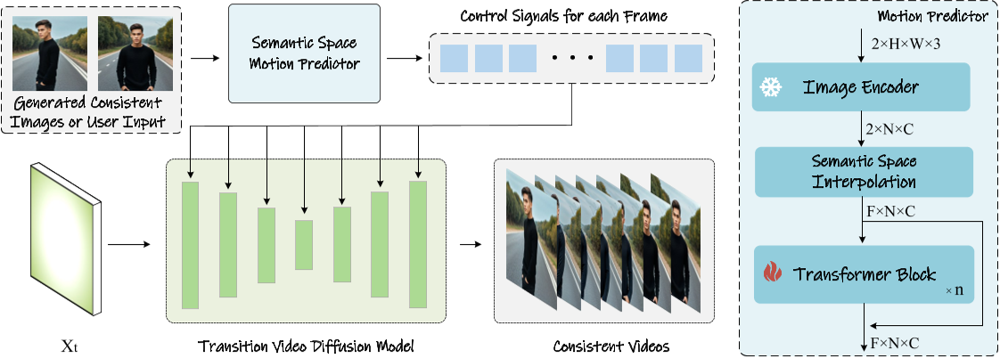
生成过渡视频的方法的流程。为了有效地建模角色的大动作，我们将条件图像编码到图像语义空间中，以编码空间信息并预测过渡嵌入。然后使用视频生成模型对这些预测的嵌入进行解码，嵌入作为交叉注意力中的控制信号来指导每帧的生成。
任务描述：通过在每对相邻图像之间插入帧，可以将生成的字符一致图像的序列进一步细化为视频。这可以看作是一个以已知开始帧和结束帧为条件的视频生成任务。
主要挑战：当两幅图像之间的差异较大时，SparseCtrl (Guo et al., 2023) 和 SEINE (Chen et al., 2023) 等最新方法无法稳定地连接两个条件图像。
当前解决方法的问题：这种限制源于它们仅依赖时间模块来预测中间帧，这可能不足以处理图像对之间的大状态间隙。时间模块在每个空间位置上的像素内独立操作，因此，在推断中间帧时可能没有充分考虑空间信息。这使得对长距离且具有物理意义的运动进行建模变得困难。
本文解决方法：语义运动预测器它将图像编码到图像语义空间中以捕获空间信息，从给定的起始帧和结束帧实现更准确的运动预测。
- 引入CLIP作为图像编码器，利用其零样本的能力，建立从 RGB 图像到图像语义空间中的向量的映射，对空间信息进行编码。
- 使用CLIP 图像编码器，将给定的起始帧Fs和结束帧Fe压缩为图像语义空间向量Ks、Ke。
- 线性插值，将 Ks 和 Ke 扩展为序列 K1, K2, ..., KL，其中 L 是所需的视频长度。
- 在图像语义空间中，训练transformer-based structure predictor来预测每个中间帧。predictor的输入是序列 K1, K2, ..., KL。输出是过渡帧。
- 将这些图像语义嵌入 P1、P2、...、PL 定位为控制信号，将视频扩散模型定位为解码器，将图像语义空间中的这些预测帧解码为最终的过渡视频。
训练与验证
数据集
loss
训练策略
有效
- 实验结果：论文通过实验验证了StoryDiffusion在生成一致性图像和过渡视频方面的性能，与最新的技术进行了比较，并展示了其优越性。
局限性
启发
- 应用潜力：StoryDiffusion的提出为可控图像和视频生成领域带来了新的启示，尤其是在需要讲述故事的应用场景中，如动画制作、游戏开发或虚拟现实体验。
遗留问题
参考材料
- 项目主页：https://StoryDiffusion.github.io
数据集：Zoo-300K
该数据集包含约 300,000 对文本描述和跨越 65 个不同动物类别的相应动物运动。
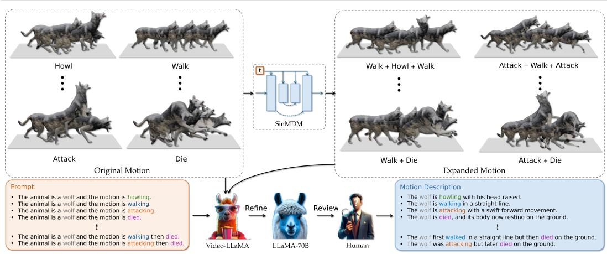
原始数据
Truebones Zoo [2] 数据集
合成数据
对原始数据的动作进行增强
人工标注
用表示动物和运动类别的文本标签进行注释
生成标注
reference
- 论文：link
Motion Avatar: Generate Human and Animal Avatars with Arbitrary Motion
核心问题是什么?
- 当前的工作主要集中在单独生成 3D 头像网格或生成运动序列，事实证明，集成这两个方面是一个持续的挑战。
- 虽然化身和动作生成主要针对人类，但由于训练数据和方法不足，将这些技术扩展到动物仍然是一个重大挑战。
本文方法
- 提出了一种名为“Motion Avatar”的新颖的基于代理的方法，它允许通过文本查询自动生成带有动作的高质量可定制人类和动物头像。该方法显着推进了动态 3D 角色生成的进展。
- 引入了一个协调运动和头像生成的 LLM 规划器，它将区分性规划转变为可定制的问答方式。
- 提出了一个名为 Zoo-300K 的动物运动数据集，其中包含 65 个动物类别的约 300,000 个文本运动对及其构建管道 ZooGen，它是社区的宝贵资源。
核心贡献是什么？
-
文本驱动的动态3D角色生成：Motion Avatar技术允许用户通过文本描述来生成具有特定动作的3D角色，这在动态3D角色生成领域是一个重要的进步。
-
基于代理的方法：该方法利用大型语言模型（LLM）代理来管理和响应用户查询，生成定制的动作提示和网格提示，这些提示用于后续的动作序列生成和3D网格创建。
-
LLM规划器：引入了一个LLM规划器，它将动作和头像生成的判别性规划转变为更灵活的问答（Q&A）模式，提高了对动态头像生成任务的适应性。
-
动物动作数据集Zoo-300K：论文提出了一个包含约300,000个文本-动作对的动物动作数据集，涵盖了65种不同的动物类别，以及构建该数据集的ZooGen管道，为社区提供了宝贵的资源。
-
动作和网格生成的自动重定向：生成的3D网格会经过自动绑定过程，使得动作可以重新定向到绑定的网格上，这为动态头像的动画制作提供了便利。
-
多模态大型语言模型的应用：使用专门为视频理解设计的多模态大型语言模型Video-LLaMA来描述经过ZooGen处理的动作数据，提高了描述的准确性和质量。
-
用户研究：通过用户研究，论文评估了Motion Avatar生成的动画在真实世界应用中的有效性，包括动作的准确性、网格的视觉质量、动作和网格的整合度以及用户的整体参与度和吸引力。
-
技术细节和方法论：论文详细介绍了Motion Avatar生成过程中使用的各种技术，包括文本到动作的转换、3D网格生成、自动绑定和动作重定向等。
-
实验和评估：论文通过实验评估了LLM规划器的性能，以及Motion Avatar在生成人类和动物动作方面的有效性。
-
应用前景：这项技术在电影制作、视频游戏、增强现实/虚拟现实、人机交互等领域具有广泛的应用潜力。
大致方法是什么？
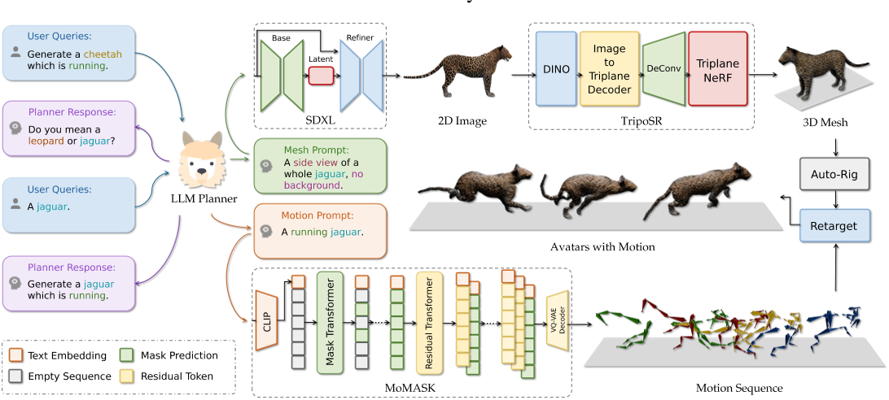
- Motion Avatar 利用基于 LLM 代理的方法来管理用户查询并生成定制的提示。
- 这些生成运动序列和 3D 网格。运动生成遵循自回归过程，而网格生成在 imageto-3D 框架内运行。
- 3D网格会经历自动绑定过程，从而允许将运动重新定位到已装配的网格。
- 用生成的运动序列经过3D重定向驱动绑定好的3DMesh。
训练与验证
数据集
loss
训练策略
有效
局限性
无法生成背景。
启发
遗留问题
参考材料
- 数据集：link
LORA: LOW-RANK ADAPTATION OF LARGE LAN-GUAGE MODEL
核心问题是什么?
基于预训练的大模型进行finetune时，重新训练所有模型参数变得不太可行。
现有方法及存在的问题
适配器层引入推理延迟
Parameter-Efficient Transfer Learning for NLP （two adapter layers per Transformer block）
Exploring Versatile Generative Language Model Via Parameter-Efficient Transfer Learning（only one per block but with an additional LayerNorm）
虽然可以通过修剪层或利用多任务设置来减少总体延迟，但没有直接的方法可以绕过适配器层中的额外计算。
这似乎不是问题，因为适配器层被设计为具有很少的参数（有时<原始模型的 1%），并且具有小的瓶颈尺寸，这限制了它们可以添加的 FLOP。
然而，大型神经网络依赖硬件并行性来保持低延迟，并且适配器层必须按顺序处理。这对在线推理设置产生了影响，其中批量大小通常小至 1。在没有模型并行性的一般场景中，例如在单个 GPU 上的 GPT-2推理，我们发现使用适配器时延迟会显着增加，即使瓶颈维度非常小s.
直接优化提示很难
[?]这一段没看懂
本文方法
我们提出了Low Rank Adapter（LoRA），它冻结了预训练的模型权重，并将可训练的rank分解矩阵注入到 Transformer 架构的每一层中，大大减少了下游任务的可训练参数的数量。与使用 Adam 微调的 GPT-3 175B 相比，LoRA 可以将可训练参数数量减少 10,000 倍，GPU 内存需求减少 3 倍。
效果
LoRA 在 RoBERTa、DeBERTa、GPT-2 和 GPT-3 上的模型质量上表现与微调相当或更好，尽管可训练参数较少、训练吞吐量较高，并且与适配器不同，没有额外的推理延迟。
核心贡献是什么？
-
Low Rank Adapter（LoRA）：这是一种新技术，通过在Transformer架构的每一层中注入可训练的低秩分解矩阵来调整预训练模型的权重，而不是重新训练所有模型参数。
-
易于实现和集成：论文提供了一个便于与PyTorch模型集成的LoRA包，以及RoBERTa、DeBERTa和GPT-2的实现和模型检查点。
-
经验性研究：论文还提供了对语言模型适应中的秩不足进行实证研究，这有助于理解LoRA的有效性。
-
模型共享与任务切换：LoRA允许共享预训练模型，并根据不同任务通过更换低秩矩阵来高效切换。
-
训练和推理的一致性：LoRA在训练和推理过程中保持了一致性，这有助于简化模型部署和应用。
大致方法是什么？
LoRA
神经网络包含许多执行矩阵乘法的密集层。这些层中的权重矩阵通常具有满秩。
我们假设在adaption过程中权重的更新具有较低的“内在维度”。
定义预训练的权重矩阵为 \(W0 ∈ R^{d×k}\)，其更新过程为：W0 + ΔW
我们通过用低秩分解，将权重更新过程描述为： W0 + ΔW = W0 + BA，其中 \(B ∈ R^{d×r} , A ∈ R^{r×k}\) ，并且秩 \(r \ll min(d, k)\)。

请注意，W0 和 ΔW = BA 都与相同的输入相乘，并且它们各自的输出向量按坐标求和。
LoRA应用到Transformer
理论上，LoRA可以应用于网络中的任意密集矩阵上，但本文仅将LoRA应用于attention层。
对于特定adaption，使用特定的BA。换一种adaption则换一组BA。不需要adaption则将BA去掉。
训练与验证
训练策略
参数冻结
训练期间，W0 被冻结，不接收梯度更新，而 A 和 B 包含可训练参数。
参数初始化
对 A 使用随机高斯初始化，对 B 使用零，因此 ΔW = BA 在训练开始时为零。
[?] scale ∆Wx by α/r 这一部分没看懂
数据集
loss
训练策略
有效
-
参数效率：LoRA大幅减少了可训练参数的数量，例如，与使用Adam对GPT-3 175B进行全参数微调相比，LoRA可以将可训练参数数量减少10,000倍。
-
内存和计算效率：LoRA减少了GPU内存需求，并且由于只需要优化注入的较小的低秩矩阵，它在训练时更加高效。
-
无损推理延迟：与其他方法（如适配器层）不同，LoRA在部署时不会引入额外的推理延迟，因为它在推理时可以合并训练的矩阵与冻结的权重。
-
模型质量：尽管可训练参数数量减少，LoRA在多个模型（如RoBERTa、DeBERTa、GPT-2和GPT-3）上的表现与全参数微调相当或更好。
-
参数效率：LoRA通过在Transformer架构的每一层中引入低秩矩阵来调整预训练模型，大幅减少了可训练参数的数量，从而降低了模型对计算资源的需求。
-
内存和存储效率：由于减少了可训练参数，LoRA在训练和部署时需要的内存和存储空间显著减少，使得在资源受限的环境中部署大型模型成为可能。
-
无损推理速度：LoRA在推理时不会引入额外的延迟，因为它允许在部署时合并训练的低秩矩阵与冻结的权重，保持了与原始模型相同的推理速度。
-
模型共享与快速任务切换：LoRA允许共享一个预训练模型，并根据不同任务快速切换低秩矩阵，这减少了存储和部署多个独立模型实例的需要。
-
保持模型质量：尽管参数数量大幅减少，LoRA在多个任务上的表现与全参数微调相当或更好，保持了模型的高性能。
-
易于实现和集成：论文提供了LoRA的实现和模型检查点，便于研究者和开发者将其集成到现有的PyTorch模型中。
-
泛化能力：LoRA显示出良好的泛化能力，即使是在低数据环境下也能保持较好的性能。
局限性
-
特定权重的选择：LoRA需要选择哪些权重矩阵应用低秩适应，这可能需要基于经验或额外的启发式方法来决定。
-
对低秩结构的依赖：LoRA假设模型权重的更新具有低秩结构，这可能不适用于所有类型的任务或模型架构。
-
可能的性能瓶颈：尽管LoRA在多个任务上表现良好，但对于某些特定任务，可能需要更多的参数来捕捉任务的复杂性，这可能限制了LoRA的性能提升空间。
-
适配器层的局限性：LoRA在某些情况下可能无法完全替代传统的适配器层，特别是在需要模型并行处理或处理不同任务输入的场景中。
-
对预训练模型的依赖：LoRA依赖于高质量的预训练模型，如果预训练模型在某些领域或任务上的表现不佳，LoRA的适应效果也可能受限。
-
超参数调整：LoRA的性能可能受到超参数（如低秩矩阵的秩）的影响，需要仔细调整这些参数以获得最佳性能。
-
特定任务的适用性：LoRA可能在某些任务上特别有效，而在其他任务上则可能需要更多的定制化或不同的适应策略。
启发
遗留问题
参考材料
- 代码仓库： https://github.com/microsoft/LoRA
TCAN: Animating Human Images with Temporally Consistent Pose Guidance using Diffusion Models
| 缩写 | 英文 | 中文 |
|---|---|---|
| APPA | APpearance-Pose Adaptation layer |
核心问题是什么?
基于diffusion model的pose驱动人体图像的视频生成，能够生成逼真的人体视频，但在时间一致性和对pose控制信号的鲁棒性方面仍然存在挑战。
本文方法
我们提出了 TCAN，一种姿势驱动的人体图像动画合成方法，它对错误姿势具有鲁棒性，并且随着时间的推移保持一致。
- 利用预先训练的 ControlNet，但不进行微调，利用其“文本+动作 -> 图像”的能力。
- 保持 ControlNet 冻结，将 LoRA 适配到 UNet 层中，使网络能够在姿势空间和外观空间之间的对齐。
- 通过向 ControlNet 引入额外的时间层，增强了针对异常姿态的鲁棒性。
- 通过分析时间轴上的注意力图，设计了一种利用姿势信息的新型温度图，从而实现更静态的背景。
效果
大量实验表明，所提出的方法可以在包含各种姿势（例如《赤壁》）的视频合成任务中取得有希望的结果。
核心贡献是什么？
-
时间一致性：TCAN专注于生成在时间上连贯的动画，即使输入的姿势检测有误差，也能保持动画的稳定性。
-
使用预训练的ControlNet：与以往方法不同，TCAN使用预训练的ControlNet而不进行微调，利用其从大量姿势-图像-标题对中获得的知识。
-
LoRA适应：为了在保持ControlNet冻结的同时对齐姿势和外观特征，TCAN采用了LoRA（Low-Rank Adaptation）适应UNet层。
-
时间层的引入：通过在ControlNet中引入额外的时间层，增强了对姿势检测器异常值的鲁棒性。
-
注意力图分析：通过分析时间轴上的注意力图，设计了一种利用姿势信息的新颖温度图，允许更静态的背景。
-
扩展到不同领域：TCAN不仅在TikTok数据集上训练，还能够泛化到未见过的领域，如动画角色。
-
姿势重定向方法：提出了一种姿势重定向方法，以适应源图像中的对象与实际人体不同的身体比例。
大致方法是什么？

方法涉及两阶段训练策略。我们从训练视频中随机选择两个图像，分别用作source图像和driving图像。
第一阶段是以多张image为条件的图像生成任务，appreance UNet 和 APPA 层在source图像上进行condition训练，同时 ControlNet 被freeze。
在第二阶段，训练 UNet 和 ControlNet 中的时间层。
| 输入 | 输出 | 方法 |
|---|---|---|
| driving frame | pose information | OpenPose |
| pose information | pose information | ControlNet(fix) 为什么要强调fix？ |
| pose information, noise | encoder feature z | UNet Encoder |
| reference image | appearance information za | UNet |
| encoder feature z appearance information za | denoised image | UNet Decoder |
| intermediate feature maps of the appearance | attention mechanism |
reference图像注入
z（encoder feature）与za（appearance information）结合
以attention的方式结合z和za，仅应用于UNet Decoder部分

APPA层
在UNet的所有attention层中引入APPA layer（类似LoRA）
没有APPA的UNet能生成与driving pose相似的动作，但不是保持reference image中的外观。引入APPA层有以下三个作用：
- 解决frozen ControlNet引入的artifacts
- 防止对training domain过拟合
- appearance与pose解耦
对错误动作的鲁棒性
在UNet的所有层后面加入时序层，仅在第二阶段的训练启用时序层。
Temporal层用于解决pose不正确引入的artifacts。pose层的实现类似AnimateDiff。
背影闪烁问题
引入Pose-driven Temperature Map。
把image resize到和attention map相同的大小，发现前景像素对应的attention的对角值更高。
 与前景相比，背景在时间轴上的焦点往往不太具体，因此可以通过attention map，仅对背景部分进行平滑。
与前景相比，背景在时间轴上的焦点往往不太具体，因此可以通过attention map，仅对背景部分进行平滑。
| 输入 | 输出 | 方法 |
|---|---|---|
| pose image | binary mask B | 画了骨架的地方标记为1，否则为0 |
| binary mask B | distance map D | 计算每个像素到离它最近的骨骼的距离 |
| distance map D | PTM \(\Tau\) | \(\Tau = \tau * D + 1\) PTM代表attention的temperature |
| PTM \(\Tau\) | resized PTM \(\Tau\) | 把PTM \(\Tau\) resize到与attention map相同的大小 |
以以下方式把PTM \(\Tau\)引入到UNet attention layer中：

长视频推断策略
MultiDiffusion [2] along the temporal axis
训练与验证
训练策略
| 阶段 | freeze | trainable | 特有模块 |
|---|---|---|---|
| 第一阶段 | denoising UNet with SD1.5 OpenPose ControlNet | appreance UNet with Realistic Vision LoRA layer in APPA | 无 |
| 第二阶段 | denoising UNet with SD1.5 OpenPose ControlNet | temporal layer in denoising UNet temporal layer in ControlNet | temporal layer in denoising UNet temporal layer in ControlNet |
数据集
loss
同Stable Diffusion Model
训练策略
有效
-
用户研究：进行了用户研究来评估TCAN在不同数据集上的表现，包括动画角色，结果显示TCAN在保持运动和身份、背景、闪烁和整体偏好方面均优于现有技术。
-
实验结果：TCAN在多个指标上展示了优越的性能，包括L1损失、结构相似性（SSIM）、感知损失（LPIPS）、Fréchet距离（FID）和视频质量指标（FID-VID和FVD）。
局限性
启发
遗留问题
TCAN（Temporally Consistent Human Image Animation）技术在实际应用中可能面临以下挑战和限制：
-
姿势检测器的准确性：TCAN依赖于姿势检测器来提供输入姿势序列。如果姿势检测器出现误差，可能会影响生成动画的质量和时间一致性。
-
数据集的多样性：TCAN在特定数据集（如TikTok数据集）上训练时表现良好，但在处理与训练数据分布显著不同的数据时，可能需要额外的调整或训练。
-
计算资源：高质量的图像和视频生成通常需要大量的计算资源。TCAN作为一种基于扩散模型的技术，可能在实际部署时面临计算能力和效率的挑战。
-
泛化能力：尽管TCAN旨在提高对未知领域的泛化能力，但在面对与训练数据差异较大的新领域时，其性能可能会下降。
-
模型的复杂性：TCAN结合了多种技术，如ControlNet、LoRA和时间层，这增加了模型的复杂性，可能需要专业知识来维护和更新。
-
过拟合风险：在特定领域内训练时，模型可能会过拟合到该领域的特定特征，从而降低其在其他领域的适用性。
-
伦理和隐私问题：生成逼真的人类动画可能引发伦理和隐私问题，尤其是在创建deepfakes或未经授权使用个人图像时。
-
内容的可控性：虽然TCAN提供了一定程度的控制能力，但在生成特定风格或满足特定条件的内容方面可能仍有限制。
-
实时性能：在需要实时生成动画的应用场景中，TCAN的处理速度和响应时间可能是一个考虑因素。
-
模型的可解释性：深度学习模型通常被认为是“黑箱”，TCAN模型的决策过程可能不够透明，这可能限制了其在需要高度可解释性的应用中的使用。
-
对抗性攻击的脆弱性：像其他基于深度学习的模型一样，TCAN可能对精心设计的对抗性攻击敏感，这可能需要额外的防御措施。
-
长期视频生成的挑战：由于内存限制，TCAN可能难以一次性生成长期视频。虽然可以通过多扩散方法来解决这个问题，但这可能会影响视频的整体一致性。
-
潜在的滥用问题：论文最后指出，尽管TCAN在动画生成方面取得了进展，但这种技术可能被滥用于生成伪造视频（deepfakes），因此需要进一步研究验证模型以检测生成模型的痕迹。
这些挑战和限制表明，尽管TCAN在技术上具有创新性，但在将其应用于实际问题之前，需要仔细考虑和解决这些潜在的问题。
参考材料
- 项目页面：https://eccv2024tcan.github.io/
GaussianAvatar: Towards Realistic Human Avatar Modeling from a Single Video via Animatable 3D Gaussians
核心问题是什么?
目的
输入：单个视频 输出：具有动态 3D 外观的逼真人类头像 目的：实现自由视角渲染，生成逼真人类头像动画
本文方法
- 引入可动画化的 3D 高斯函数来明确代表各种姿势和服装风格的人类。这种明确且可动画化的表示可以更有效、更一致地融合 2D 观察中的 3D 外观。
- 进一步增强了表示的动态属性，以支持依赖姿势的外观建模，其中动态外观网络和可优化的特征张量被设计为学习运动到外观的映射。
- 通过利用可微运动条件，在头像建模过程中对运动和外观进行联合优化，这有助于解决单目设置中运动估计不准确的长期存在的问题。
效果
GaussianAvatar的功效在公共数据集和我们收集的数据集上都得到了验证，证明了其在外观质量和渲染效率方面的优越性能。
核心贡献是什么？
-
3D高斯表示法（3D Gaussians）：论文提出了使用3D高斯来显式表示不同姿势和服装样式下的人体。这种方法可以有效地从2D观察中融合3D外观。
-
动态属性建模：为了支持不同姿势下的动态外观建模，论文设计了一个动态外观网络和可优化的特征张量，以学习运动到外观的映射。
-
运动和外观的联合优化：利用可微分的运动条件，论文的方法可以在化身建模过程中同时优化运动和外观，有助于解决单目设置中不准确运动估计的长期问题。
-
实现细节：论文详细介绍了如何通过3D高斯表示法来重建具有动态外观的人体化身，包括如何将3D高斯与SMPL或SMPL-X模型集成，以及如何通过动态外观网络预测3D高斯的动态属性。
-
训练策略：论文提出了一个两阶段的训练策略，首先在不包含姿势依赖信息的情况下训练网络，然后在第二阶段整合姿势特征编码。
大致方法是什么？
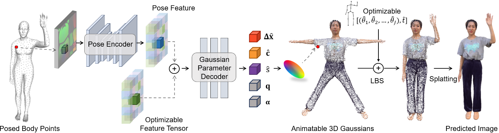
给定当前帧上拟合的 SMPL 模型，我们对其表面上的点进行采样，并将它们的位置记录在 UV 位置图 I 上，然后将其传递给姿势编码器以获得姿势特征。可优化的特征张量与姿势特征进行像素对齐，并学会捕捉人类的粗糙外观。然后将两个对齐的特征张量输入到高斯参数解码器中，该解码器预测每个点的偏移量 Δˆx、颜色 ˆc 和尺度 ˆs。这些预测与固定旋转 q 和不透明度 α 一起构成了规范空间中的可动画化 3D 高斯。
Animatable 3D Gaussians 可驱动的3D高斯
先预测高斯属性，然后用LBS驱动这个高斯球，渲染驱动后的高斯球。
Mesh以SMPL为template，且Mesh上的每个顶点对应一个高斯球，因此LBS的蒙皮绑定直接复用SMPL的。
动态 3D 高斯属性估计
- 根据pose预测高斯属性，可得到与pose相关的动态高斯属性。
- 属性pose feature，还有feature tensor，用于描述global appreance，防止对动作过拟合。
- pose feature通过UV map（H×W×3，其中每个有效像素存储姿势身体表面上一个点的位置（x，y，z）），描述2D人体。
- 用各向同性（旋转和缩放均为单位值）的高斯球代替各向异性的高斯球，防止陷入特定视角的local optima(训练数据的视角数据不均等)。
- 固定alpha=1，以获得更准确的高高斯球位置。
class ShapeDecoder(nn.Module):
'''
The "Shape Decoder" in the POP paper Fig. 2. The same as the "shared MLP" in the SCALE paper.
- with skip connection from the input features to the 4th layer's output features (like DeepSDF)
- branches out at the second-to-last layer, one branch for position pred, one for normal pred
'''
def __init__(self, in_size, hsize = 256, actv_fn='softplus'):
self.hsize = hsize
super(ShapeDecoder, self).__init__()
self.conv1 = torch.nn.Conv1d(in_size, self.hsize, 1)
self.conv2 = torch.nn.Conv1d(self.hsize, self.hsize, 1)
self.conv3 = torch.nn.Conv1d(self.hsize, self.hsize, 1)
self.conv4 = torch.nn.Conv1d(self.hsize, self.hsize, 1)
self.conv5 = torch.nn.Conv1d(self.hsize+in_size, self.hsize, 1)
self.conv6 = torch.nn.Conv1d(self.hsize, self.hsize, 1)
self.conv7 = torch.nn.Conv1d(self.hsize, self.hsize, 1)
self.conv8 = torch.nn.Conv1d(self.hsize, 3, 1)
self.conv6SH = torch.nn.Conv1d(self.hsize, self.hsize, 1)
self.conv7SH = torch.nn.Conv1d(self.hsize, self.hsize, 1)
self.conv8SH = torch.nn.Conv1d(self.hsize, 3, 1)
self.conv6N = torch.nn.Conv1d(self.hsize, self.hsize, 1)
self.conv7N = torch.nn.Conv1d(self.hsize, self.hsize, 1)
self.conv8N = torch.nn.Conv1d(self.hsize, 1, 1)
self.bn1 = torch.nn.BatchNorm1d(self.hsize)
self.bn2 = torch.nn.BatchNorm1d(self.hsize)
self.bn3 = torch.nn.BatchNorm1d(self.hsize)
self.bn4 = torch.nn.BatchNorm1d(self.hsize)
self.bn5 = torch.nn.BatchNorm1d(self.hsize)
self.bn6 = torch.nn.BatchNorm1d(self.hsize)
self.bn7 = torch.nn.BatchNorm1d(self.hsize)
self.bn6N = torch.nn.BatchNorm1d(self.hsize)
self.bn7N = torch.nn.BatchNorm1d(self.hsize)
self.bn6SH = torch.nn.BatchNorm1d(self.hsize)
self.bn7SH = torch.nn.BatchNorm1d(self.hsize)
self.actv_fn = nn.ReLU() if actv_fn=='relu' else nn.Softplus()
self.sigmoid = nn.Sigmoid()
self.tan = nn.Tanh()
def forward(self, x):
x1 = self.actv_fn(self.bn1(self.conv1(x)))
x2 = self.actv_fn(self.bn2(self.conv2(x1)))
x3 = self.actv_fn(self.bn3(self.conv3(x2)))
x4 = self.actv_fn(self.bn4(self.conv4(x3)))
x5 = self.actv_fn(self.bn5(self.conv5(torch.cat([x,x4],dim=1))))
# position pred
x6 = self.actv_fn(self.bn6(self.conv6(x5)))
x7 = self.actv_fn(self.bn7(self.conv7(x6)))
x8 = self.conv8(x7)
# scales pred
xN6 = self.actv_fn(self.bn6N(self.conv6N(x5)))
xN7 = self.actv_fn(self.bn7N(self.conv7N(xN6)))
xN8 = self.conv8N(xN7)
# shs pred
xSH6 = self.actv_fn(self.bn6SH(self.conv6SH(x5)))
xSH7 = self.actv_fn(self.bn7SH(self.conv7SH(xSH6)))
xSH8 = self.conv8SH(xSH7)
# rotations = xN8[:,:4,:]
scales = self.sigmoid(xN8)
# scales = -1 * self.actv_fn(xN8[:,4:7,:])
# opacitys = self.sigmoid(xN8[:,7:8,:])
shs = self.sigmoid(xSH8)
return x8, scales, shs
动作与外观联合优化
由于对人体姿势的不精确估计，运动空间中的 3D 高斯分布不准确，可能导致渲染结果不令人满意。
因此同时优化动作和高斯属性。
训练与验证
第一阶段：仅输入feature tensor F，使用Encoder & Decoder解出高斯属性，用SMPL拟合所得到的动作驱动高斯，重建图像
def train_stage1(self, batch_data, iteration):
# 从batch中提取角色当前帧的rotation和translation
pose_batch, transl_batch = ..., ...
# 用LBS驱动角色，得到驱动后的mesh
live_smpl = self.smpl_model.forward(betas=self.betas,
global_orient=pose_batch[:, :3],
transl = transl_batch,
body_pose=pose_batch[:, 3:])
# 提前算好LBS矩阵
cano2live_jnt_mats = torch.matmul(live_smpl.A, self.inv_mats)
# geo_feature是要被优化的变量，代表了这个对象的统一的特征
geom_featmap = self.geo_feature.expand(self.batch_size, -1, -1, -1).contiguous()
# 对template mesh进行采样并在 UV 位置图 I 上记录它们的位置，用于建立像素到3D空间的映射。
uv_coord_map = self.uv_coord_map.expand(self.batch_size, -1, -1).contiguous()
# 根据uv coord map和feature tensor预测高斯属性
# pred_res: 3d position offset
# pred_shs：球协系数
pred_res,pred_scales, pred_shs, = self.net.forward(pose_featmap=None,
geom_featmap=geom_featmap,
uv_loc=uv_coord_map)
pred_res = pred_res.permute([0,2,1]) * 0.02 #(B, H, W ,3)
pred_point_res = pred_res[:, self.valid_idx, ...].contiguous()
# query_points：canomical mesh表面的采样点的位置
# pred_point_res：canomical mesh表面采样点的offset
cano_deform_point = pred_point_res + self.query_points
# offset是加在template上的，然后再lbs，得到deformed mesh
pt_mats = torch.einsum('bnj,bjxy->bnxy', self.query_lbs, cano2live_jnt_mats)
full_pred = torch.einsum('bnxy,bny->bnx', pt_mats[..., :3, :3], cano_deform_point) + pt_mats[..., :3, 3]
if iteration < 1000:
# 一开始预测出的scale偏大，所以这样限制一下
pred_scales = pred_scales.permute([0,2,1]) * 1e-3 * iteration
else:
pred_scales = pred_scales.permute([0,2,1])
# 维度对齐相关代码省略
...
# 正则化loss
offset_loss = torch.mean(pred_res ** 2)
geo_loss = torch.mean(self.geo_feature**2)
scale_loss = torch.mean(pred_scales)
# 渲染需要逐张进行
for batch_index in range(self.batch_size):
# 取出每一张图像的渲染参数
FovX = batch_data['FovX'][batch_index]
FovY = batch_data['FovY'][batch_index]
height = batch_data['height'][batch_index]
width = batch_data['width'][batch_index]
world_view_transform = batch_data['world_view_transform'][batch_index]
full_proj_transform = batch_data['full_proj_transform'][batch_index]
camera_center = batch_data['camera_center'][batch_index]
points = full_pred[batch_index]
colors = pred_shs[batch_index]
scales = pred_scales[batch_index]
# 进行渲染
rendered_images.append(
render_batch(
points=points,
shs=None,
colors_precomp=colors,
rotations=self.fix_rotation,
scales=scales,
opacity=self.fix_opacity,
FovX=FovX,
FovY=FovY,
height=height,
width=width,
bg_color=self.background,
world_view_transform=world_view_transform,
full_proj_transform=full_proj_transform,
active_sh_degree=0,
camera_center=camera_center
)
)
return torch.stack(rendered_images, dim=0), full_pred, offset_loss, geo_loss, scale_loss
第二阶段：使用pose encoder和同时作为输入，decoder出高斯属性，用SMPL拟合所得到的动作驱动高斯，重建图像
def train_stage2(self, batch_data, iteration):
# 与train_stage1相同
...
# 与train_stage1的区别在于推断时引入pose feature map
# 这里跟论文不一致，论文是根据uv_coord_map计算pose feature map
# inp_pos_map是提前算预计算好的，代表什么含义？
inp_posmap = batch_data['inp_pos_map']
pose_featmap = self.pose_encoder(inp_posmap)
pred_res,pred_scales, pred_shs, = self.net.forward(pose_featmap=pose_featmap,
geom_featmap=geom_featmap,
uv_loc=uv_coord_map)
# 与train_stage1相同
...
goem feature与pose feature是相加的关系
if pose_featmap is None:
# pose and geom features are concatenated to form the feature for each point
pix_feature = geom_featmap
else:
pix_feature = pose_featmap + geom_featmap
| Loss | 优化目的 | 方法 | 阶段 |
|---|---|---|---|
| rgb | 图像重建 | L1 Loss | 1,2 |
| ssim | SSIM Loss | 1,2 | |
| lpips | LPIPS Loss | 1,2 | |
| f | feature map | L2 Loss | 1 |
| offset | L2 | 1,2 | |
| scale | L2 | 1,2 | |
| p | limit the pose space | L2 | 2 |
数据集
People-Snapshot Dataset
NeuMan Dataset.
DynVideo Dataset
Evaluation Metrics.
loss
训练策略
有效
-
实验验证：通过在公共数据集和收集的数据集上的实验，论文验证了GaussianAvatar在外观质量和渲染效率方面的优越性能。
-
代码和数据集的可用性：论文提供了代码和数据集的链接，这有助于其他研究人员复现结果并在此基础上进行进一步的研究。
-
潜在的社会效益和限制：论文讨论了该技术可能的社会效益，例如在虚拟现实、增强现实、游戏和电影行业中的应用，同时也指出了其局限性，如在处理不准确前景分割和松散服装（如连衣裙）时可能遇到的挑战。
-
相关工作：论文还回顾了利用神经渲染技术进行人体重建的相关研究，以及从单目视频中重建人体的现有方法。
局限性
启发
遗留问题
参考材料
- 代码和数据集：https://huliangxiao.github.io/GaussianAvatar
MagicPony: Learning Articulated 3D Animals in the Wild
核心问题是什么?
在给定单个测试图像作为输入的情况下，预测马等有关节动物的 3D 形状、关节、视点、纹理和光照。
本文方法
我们提出了一种名为 MagicPony 的新方法，该方法仅从特定类别对象的野外单视图图像中学习，并且对变形拓扑的假设最少。
其核心是铰接形状和外观的隐式-显式表示，结合了神经场和网格的优点。
为了帮助模型理解物体的形状和姿势，我们提炼了已有的自监督ViT，并将其融合到 3D 模型中。
为了克服视点估计中的局部最优，我们进一步引入了一种新的视点采样方案，无需额外的训练成本。
效果
MagicPony 在这项具有挑战性的任务上表现优于之前的工作。尽管它仅在真实图像上进行训练，但在重建艺术方面表现出出色的泛化能力。
核心贡献是什么？
-
隐式-显式表示（Implicit-Explicit Representation）：MagicPony结合了神经场和网格的优势，使用隐式表示来定义形状和外观，并通过Differentiable Marching Tetrahedra（DMTet）方法即时转换为显式网格，以便进行姿态调整和渲染。
-
自监督知识蒸馏：为了帮助模型理解对象的形状和姿态，论文提出了一种机制，将现成的自监督视觉变换器（如DINO-ViT）捕获的知识融合到3D模型中。
-
多假设视角预测方案：为了避免在视角估计中陷入局部最优，论文引入了一种新的视角采样方案，该方案在每次迭代中只采样单一假设，且几乎不需要额外的训练成本。
-
层次化形状表示：从通用模板到具体实例的层次化形状表示方法，允许模型学习类别特定的模板形状，并预测实例特定的变形。
-
外观和着色分解：将对象的外观分解为反照率和漫反射着色，假设了一种兰伯特照明模型，并使用可微分的延迟网格渲染技术。
-
训练目标和损失函数：论文详细描述了训练过程中使用的损失函数，包括重建损失、特征损失、掩码损失、正则化项和视角假设损失。
大致方法是什么？
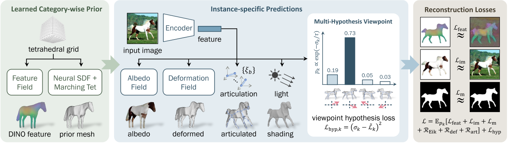
左：给定特定类别动物的单视图图像集合，我们的模型使用“隐式-显式”表示来学习特定于类别的先验形状，以及可以用于自监督特征渲染损失的特征字段。
中：根据从训练图像中提取的特征，对先前的形状进行变形、铰接和着色。
中右：为了克服视点预测中的局部最小值，我们引入了一种有效的方案，该方案可以探索多种假设，而基本上不需要额外的成本。
右：除了fix Image Encoder之外，整个管道都经过端到端的重建损失训练。
Implicit-Explicit 3D Shape Representation
隐式
目的：用于优化出一个通用的Mesh。 方法：SDF。定义隐式Mesh函数为
S = {x ∈ R3|s(x) = 0}
显式
目的：方便后面的deformation
方法：DMTet
优化过程
- 初始时，用SDF描述一个椭圆作为prior shape。
- 空间采样，使用DMTet生成prior Mesh的shape。
- 用下文的方法驱动调整和驱动prior mesh，得到deformed mesh。
- 通过deformed mesh与GT的重建Loss，优化SDF。
得到此类别所有对象共用的template。
# 代码有删减
class PriorPredictor(nn.Module):
def __init__(self, cfgs):
super().__init__()
self.netShape = DMTetGeometry(。。。)
def forward(self, total_iter=None, is_training=True):
# 得到prior template mesh
prior_shape = self.netShape.getMesh(total_iter=total_iter, jitter_grid=is_training)
return prior_shape, self.netDINO
class DMTetGeometry(torch.nn.Module):
def get_sdf(self, pts=None, total_iter=0):
if pts is None:
pts = self.verts
if self.symmetrize:
xs, ys, zs = pts.unbind(-1)
pts = torch.stack([xs.abs(), ys, zs], -1) # mirror -x to +x
sdf = self.mlp(pts)
if self.init_sdf is None:
pass
elif type(self.init_sdf) in [float, int]:
sdf = sdf + self.init_sdf
elif self.init_sdf == 'sphere':
init_radius = self.grid_scale * 0.25
init_sdf = init_radius - pts.norm(dim=-1, keepdim=True) # init sdf is a sphere centered at origin
sdf = sdf + init_sdf
elif self.init_sdf == 'ellipsoid':
rxy = self.grid_scale * 0.15
xs, ys, zs = pts.unbind(-1)
init_sdf = rxy - torch.stack([xs, ys, zs/2], -1).norm(dim=-1, keepdim=True) # init sdf is approximately an ellipsoid centered at origin
sdf = sdf + init_sdf
else:
raise NotImplementedError
return sdf
def getMesh(self, material=None, total_iter=0, jitter_grid=True):
# Run DM tet to get a base mesh，预置的一些空间中的点
v_deformed = self.verts
if jitter_grid and self.jitter_grid > 0:
jitter = (torch.rand(1, device=v_deformed.device)*2-1) * self.jitter_grid * self.grid_scale
v_deformed = v_deformed + jitter
# 计算这些点的sdf
self.current_sdf = self.get_sdf(v_deformed, total_iter=total_iter)
# 根据预置点的sdf找出0表面，并生成Mesh
verts, faces, uvs, uv_idx = self.marching_tets(v_deformed, self.current_sdf, self.indices)
self.mesh_verts = verts
return mesh.make_mesh(verts[None], faces[None], uvs[None], uv_idx[None], material)
Articulated Shape Modelling and Prediction
| 输入 | 输出 | 方法 |
|---|---|---|
| image | Image Mask | PointRend |
| image, mask | a set of key and output tokens | |
| local keys token \(\Phi_k \in R^{D\times H_p \times W_p}\)代表 deformation local outputs token \(\Phi_o \in R^{D\times H_p \times W_p}\)代表appreance | DINO-ViT，包含prepare层，ViT blocks层，final层 | |
| local keys token Φk | global keys token φk | small convolutional network |
| local output token Φo | global output token φo | small convolutional network |
| template shape \(V_{pr,i}\) global keys token φk | mesh displacement ∆Vi | CoordMLP，因为每一sdf生成的Mesh的顶点数和顶点顺序都是不确定的，因此不能使用普通的MLP 许多对象是双边对称的，因此通过镜像来强制先前的 Vpr 和 ∆V 对称 |
| \(V_{pr,i}\) ∆Vi | Vins | |
| ξ1，Vpr | bone在图像上的像素 ub | 根据ξ1把每个rest状态下的bone投影到图像上 |
| patch key feature map Φk(ub) ub | local feature | 从投影像素位置 ub 处的 Φk(ub) 中采样局部特征。 |
| image features Φk and φk bone position 3D bone position 2D | local rotation ξ2:B | The viewpoint ξ1 ∈ SE(3) is predicted separately |
| Vins 动作参数ξ a set of rest-pose joint locations Jb（启发式方法） skinning weights（relative proximity to each bone） | Vi | LBS |
def forward(self, images=None, prior_shape=None, epoch=None, total_iter=None, is_training=True):
batch_size, num_frames = images.shape[:2]
# 从图像生成a set of key and output tokens，使用一个ViTEncoder
# patch_out：local outputs token
# patch_key：local key token
# feat_out：global outputs token
# feat_key：global key token
feat_out, feat_key, patch_out, patch_key = self.forward_encoder(images) # first two dimensions are collapsed N=(B*F)
shape = prior_shape
texture = self.netTexture
# 预测root rotation，这一部分会在下文中展开
poses_raw = self.forward_pose(patch_out, patch_key)
pose_raw, pose, multi_hypothesis_aux = sample_pose_hypothesis_from_quad_predictions(poses_raw, total_iter, rot_temp_scalar=self.rot_temp_scalar, num_hypos=self.num_pose_hypos, naive_probs_iter=self.naive_probs_iter, best_pose_start_iter=self.best_pose_start_iter, random_sample=is_training)
# root rotation不体现在bone 0的rotation上，而是体现在相机的位姿上
mvp, w2c, campos = self.get_camera_extrinsics_from_pose(pose)
deformation = None
if self.enable_deform and epoch in self.deform_epochs:
# 根据feature key计算这个图像上的shape offset
# deformation：shape offset
# shape: prior shape + shape offset
shape, deformation = self.forward_deformation(shape, feat_key)
arti_params, articulation_aux = None, {}
if self.enable_articulation and epoch in self.articulation_epochs:
# 根据feature key计算关节旋转，并使用LBS得到驱动后的mesh
# 每次都会根据mesh重新计算bone position，使用启发式方法
# shape：驱动后的mesh
# arti_params：bone rotation，轴角形式
shape, arti_params, articulation_aux = self.forward_articulation(shape, feat_key, patch_key, mvp, w2c, batch_size, num_frames, epoch)
light = self.netLight if self.enable_lighting else None
aux = multi_hypothesis_aux
aux.update(articulation_aux)
# shape：根据图像生成的特定体型特定动作下的mesh
# pose_raw：root rotation
# pose：root rotation in mat
# mvp：3D->2D投影变换矩阵
# w2c：world->camera变换矩阵
# campos：camera position
# feat_out：global outputs feature，用于记录目标的外观
# deformation：shape offset
# arti_params：bone rotation in angle-axis
# aux：root rotation sample机制
return shape, pose_raw, pose, mvp, w2c, campos, texture, feat_out, deformation, arti_params, light, aux
Appearance and Shading
| 输入 | 输出 | 方法 |
|---|---|---|
| x, global output token φo | albedo | MLP |
| global output token φo | 主光源方向l 环境和漫射强度ks, kd | MLP |
| 3D coordinates Mesh V all pixels u | V中投影到u上的顶点x(u) | |
| x(u)，fa | 像素u对应的颜色 a | |
| ks, kd, l, n, 像素u对应的颜色 a | 像素u最终的颜色 | |
| ks, kd, l, n, 像素u对应的颜色 a | 像素u的MASK |
这一段代码没有看懂
Viewpoint Prediction
我们提供了一种稳健且高效的方法，该方法利用多假设预测管道中的自监督对应关系。
这一段没看懂，参考Neural Feature Fusion Fields: 3D Distillation of Self-Supervised 2D Image Representations
难点：学习对象视点的一个主要挑战是重建目标中存在多个局部最优。
解决方法：我们提出了一种统计探索多个观点的方案，但在每次迭代时仅采样一个观点，因此没有额外成本。
| 输入 | 输出 | 方法 |
|---|---|---|
| global keys token φk | 4个假设的viewpoint rotation score σk，第k个假设的可能性 | Encoder32 |
学习 σk 的简单方法是对多个假设进行采样并比较它们的重建损失以确定哪一个更好。然而，这很昂贵，因为它需要使用所有假设来渲染模型。相反，我们建议为每次训练迭代采样一个假设，并通过最小化目标来简单地训练 σk 来预测预期重建损失 Lk
# poses_raw[:,:-3]：通过self.netPose预测出的num_hypos个假设的参数
# 每个假设的参数包含4维：概率*1、角度*3
# poses_raw[:,-3:]：预测出的translation
# 根据每个假设的概率进行一些计算，得出这个迭代的rot
def sample_pose_hypothesis_from_quad_predictions(poses_raw, total_iter, rot_temp_scalar=1., num_hypos=4, naive_probs_iter=2000, best_pose_start_iter=6000, random_sample=True):
rots_pred = poses_raw[..., :num_hypos*4].view(-1, num_hypos, 4) # NxKx4
N = len(rots_pred)
rots_logits = rots_pred[..., 0] # Nx4
rots_pred = rots_pred[..., 1:4]
trans_pred = poses_raw[..., -3:]
temp = 1 / np.clip(total_iter / 1000 / rot_temp_scalar, 1., 100.)
rots_probs = torch.nn.functional.softmax(-rots_logits / temp, dim=1) # NxK
naive_probs = torch.ones(num_hypos).to(rots_logits.device)
naive_probs = naive_probs / naive_probs.sum()
naive_probs_weight = np.clip(1 - (total_iter - naive_probs_iter) / 2000, 0, 1)
rots_probs = naive_probs.view(1, num_hypos) * naive_probs_weight + rots_probs * (1 - naive_probs_weight)
best_rot_idx = torch.argmax(rots_probs, dim=1) # N
if random_sample:
rand_rot_idx = torch.randperm(N, device=poses_raw.device) % num_hypos # N
best_flag = (torch.randperm(N, device=poses_raw.device) / N < np.clip((total_iter - best_pose_start_iter)/2000, 0, 0.8)).long()
rand_flag = 1 - best_flag
rot_idx = best_rot_idx * best_flag + rand_rot_idx * (1 - best_flag)
else:
rand_flag = torch.zeros_like(best_rot_idx)
rot_idx = best_rot_idx
rot_pred = torch.gather(rots_pred, 1, rot_idx[:, None, None].expand(-1, 1, 3))[:, 0] # Nx3
pose_raw = torch.cat([rot_pred, trans_pred], -1)
rot_prob = torch.gather(rots_probs, 1, rot_idx[:, None].expand(-1, 1))[:, 0] # N
rot_logit = torch.gather(rots_logits, 1, rot_idx[:, None].expand(-1, 1))[:, 0] # N
rot_mat = lookat_forward_to_rot_matrix(rot_pred, up=[0, 1, 0])
pose = torch.cat([rot_mat.view(N, -1), pose_raw[:, 3:]], -1) # flattened to Nx12
pose_aux = {
'rot_idx': rot_idx,
'rot_prob': rot_prob,
'rot_logit': rot_logit,
'rots_probs': rots_probs,
'rand_pose_flag': rand_flag
}
return pose_raw, pose, pose_aux
训练与验证
数据集
DOVE
Weizmann Horse Database [4], PASCAL [10] and Horse-10 Dataset
Microsoft COCO Dataset
CUB
loss
| loss name | 优化目的 | 计算方法 |
|---|---|---|
| im | 图像重建 | 仅计算前景区域，L1 Loss |
| m | mask重建 | L2 Loss |
| feat | dino feature重建，dino是绑在每个mesh顶点的的属性，且dino属性只于species type有关，与特定图像无关 | 仅计算前景区域，L2 loss |
| Eik | 正则化项，约束s被学习成一个SDF函数 | Eikonal regulariser |
| def | 正则化项，约束shape offset不要太大 | L2 Loss |
| art | 正则化项，约束旋转量不要太大 | |
| hpy | 正则化项，预测每个视角的置信度 | 置信度与这个角度得到的重建loss负相关 |
# 重建loss
losses = self.compute_reconstruction_losses(image_pred, image_gt, mask_pred, mask_gt, mask_dt, mask_valid, flow_pred, flow_gt, dino_feat_im_gt, dino_feat_im_pred, background_mode=self.background_mode, reduce=False)
for name, loss in losses.items():
logit_loss_target += loss * loss_weight
# hpy正则化项
final_losses['logit_loss'] = ((rot_logit - logit_loss_target)**2.).mean()
训练策略
- 首先对视角假设进行k个采样，计算每个采样的重建损失
- 然后，将正则化项和视点假设损失相加，得到最终loss.
每次梯度评估仅采用一个视点样本 k。为了进一步提高采样效率，我们根据学习到的概率分布pk4对视点进行采样：为了提高训练效率，我们在 80% 的时间对视点 k* = argmaxk pk 进行采样，并在 20% 的时间均匀随机采样。
有效
-
广泛的实验验证：在动物类别上进行了广泛的实验，包括马、长颈鹿、斑马、奶牛和鸟类，并与先前的工作进行了定性和定量比较。
-
少监督学习：MagicPony在几乎没有关于变形拓扑的假设下，仅使用对象的2D分割掩码和3D骨架拓扑的描述进行训练，展示了在少监督情况下学习3D模型的能力。
-
泛化能力：尽管MagicPony仅在真实图像上训练，但它展示了对绘画和抽象绘画的出色泛化能力。
局限性
如果以单张照片作为输出，虽然会对目标角色先生成可驱动的3D模型，可以通过驱动3D模型再渲染得到新动作的生成图像，但是缺少3D模型的驱动数据，还需要一种方法生成适配角色的动作。
启发
先通过大量数据得到目标角色所属种类的3D范式。有了这个3D范式作为先验，就可以根据单张图像生成这个种类的3D模型。
遗留问题
参考材料
- 项目页面: https://3dmagicpony.github.io/
Splatter a Video: Video Gaussian Representation for Versatile Processing
核心问题是什么?
视频表示是一个长期存在的问题，对于跟踪、深度预测、分割、视图合成和编辑等各种下游任务至关重要。
现有方法
当前的方法要么由于缺乏 3D 结构而难以对复杂运动进行建模，要么依赖于隐式 3D 表示而难以控制。
本文方法
引入了一种新颖的显式 3D 表示——视频高斯表示 —— 它将视频嵌入到 3D 高斯中。即：使用显式高斯作为代理，对 3D 规范空间中的视频外观进行建模，并将每个高斯与视频运动的 3D 运动相关联。
这种方法提供了比分层图集或体积像素矩阵更内在和更明确的表示。
为了获得这样的表示，我们从基础模型中提取了 2D 先验，例如光流和深度，以规范这种不适定环境中的学习。
效果
在许多视频处理任务中有效，包括跟踪、一致的视频深度和特征细化、运动和外观编辑以及立体视频生成。
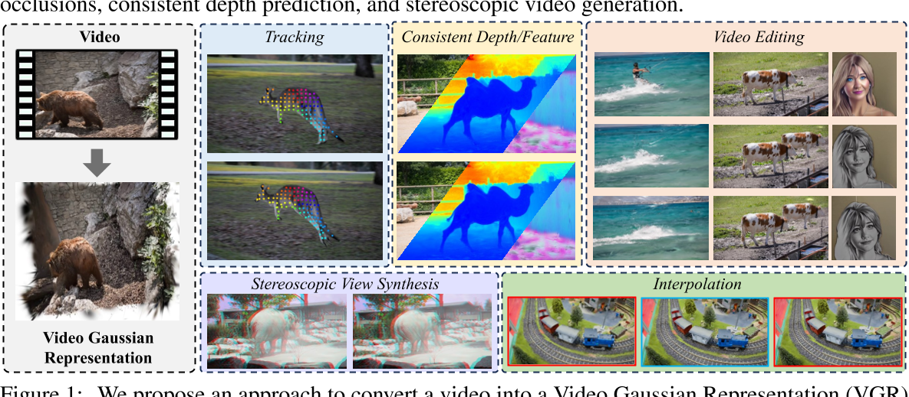
核心贡献是什么？
-
视频高斯表示（VGR）：这是一种新的显式3D表示方法，它将视频嵌入到3D高斯空间中。与传统的2D或2.5D技术相比，VGR提供了一种更为内在和显式的表示形式。
-
3D规范化空间：VGR在相机坐标空间中对视频进行建模，这避免了从3D到2D投影时丢失的3D信息，并且简化了动态建模的复杂性。
-
动态3D高斯：每个高斯由中心位置、旋转四元数、比例、不透明度、球谐系数等属性定义，并且与时间依赖的3D运动属性相关联，以控制视频运动。
-
2D先验知识的应用：为了解决从2D到3D映射的不适定问题，论文提出了利用从基础模型中提取的2D先验知识（如光流和深度估计）来规范学习过程。
-
多用途视频处理：VGR证明了其在多个视频处理任务中的有效性，包括跟踪、一致性视频深度和特征细化、运动和外观编辑、立体视频生成等。
-
光流和深度的蒸馏：通过将估计的光流和深度作为先验知识，论文提出了一种方法来规范学习过程，确保3D高斯的运动与实际观测到的2D运动一致。
-
3D运动的规范：除了深度和光流的蒸馏，还采用了局部刚性规范来防止高斯通过非刚性运动过度拟合渲染目标。
-
优化方法：论文详细介绍了如何通过结合颜色渲染损失、掩码损失以及可选的掩码损失来进行优化，以及如何通过自适应密度控制来初始化和调整高斯的密度。
大致方法是什么？
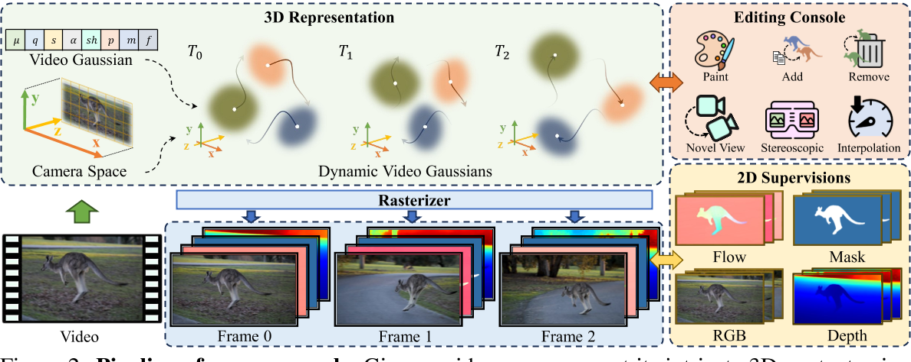
给定一个视频，在相机坐标空间中使用视频高斯表示其复杂的 3D 内容。并通过将它们与运动参数相关联，使视频高斯能够捕获视频动态。这些视频高斯由 RGB 图像帧和 2D 先验（例如光流、深度和标签掩模）进行监督。这种表示方式可以方便用户对视频执行各种编辑任务。
Video Gaussian Representation
相机坐标空间
使用相机坐标系（而不是世界坐标系）来建模视频的 3D 结构。因为使用相机坐标系可以避免估计相机姿态和相机运动，而是让相机运动与物体运动耦合。
相机坐标系下，视频的宽度、高度和深度分别对应于 X、Y 和 Zax。
视频高斯函数
视频序列为 V = {I1, I2, ..., In}
对应的高斯表示为 G ={G1, G2, ..., Gm}，同时表示视频的外观和运动动态。
每个高斯 G 表示包含：
- 基本外观属性： 位置 μ、旋转四元数 q、尺度 s、外观球谐 (SH) 系数 sh 和不透明度 α 。
- 来自 2D 基础模型的：动态属性 p、分割标签 m 和图像特征 f
渲染：将其表示为 R(μ, q, s, α, x)，其中 x 表示要渲染的特定属性。渲染函数 R 遵循与原始高斯 Splatting 方法 [16] 中的颜色渲染相同的过程。
高斯动力学
当对运动进行参数化时，需要在“结合符合运动先验”和“更准确实拟合”之间进行权衡[43]。
本文使用一组灵活的混合基，包括多项式 [22] 和傅立叶级数 [1] 来建模平滑的 3D 轨迹。具体来说，我们为每个高斯分配可学习的多项式\(p_p^n\)和傅里叶系数\(p^l_\sin, p^l_cos\)，这里，n和l表示系数的阶数。那么分别使用多项式基和傅里叶基以各自的系数线性组合，就可以得到高斯球在时间 t 的位置。
多项式基在对运动轨迹的整体趋势和局部非周期性变化进行建模方面非常有效，并且广泛用于曲线表示。
傅立叶基 {cos(lt), sin(lt)} 提供曲线的频域参数化，使其适合拟合平滑运动 [1]，并且擅长捕获周期性运动分量。
这两个基的结合利用了两者的优势，提供全面的建模、增强的灵活性和准确性、减少过度拟合以及对噪声的鲁棒性。这使高斯具有通过调整相应的可学习系数来适应各种类型轨迹的适应性。
视频处理应用
-
Dense Tracking：监督高斯球在2D投影上的运动
-
一致的深度/特征预测：
-
几何编辑
-
Appearance Editing
-
Frame Interpolation
-
Novel View Synthesis
-
Stereoscopic Video Creation
训练与验证
实验验证：通过在DAVIS数据集以及Omnimotion和CoDeF使用的视频上进行实验，论文展示了其方法在视频重建质量和下游视频处理任务方面的性能。
loss
| loss name | 优化目的 | 方法 |
|---|---|---|
| flow | 正则化项，约束个体高斯的运动 | 从 RAFT [42] 获得的光流估计，将帧 t1 和 t2 之间的高斯运动 (μ(t2) −μ(t1)) 投影到 2D 图像平面上，并使用估计的光流对其进行正则化 |
| depth | 正则化项，约束个体高斯的z方向运动 | 从 Marigold [15] 获得的估计深度来监督视频高斯 |
| arap | 正则化项，鼓励个体高斯的 3D 运动尽可能局部刚性 [40]。 | |
| render | 图像重建 | L1 Loss |
| label | Mask重建 | L2 Loss |
数据集
loss
训练策略
有效
局限性
局限性和未来工作：尽管取得了令人满意的性能，但论文也指出了方法的一些局限性，例如对场景变化的敏感性以及对现有对应估计方法的依赖性，并提出了可能的改进方向。
启发
遗留问题
参考材料
- 项目页面：https://sunyangtian.github.io/spatter_a_video_web/
- code（没有开开源）：https://github.com/SunYangtian/Splatter_A_Video
数据集：Dynamic Furry Animal Dataset
cat
├── img
│ └── run - Motion name.
│ └── %d - The frame number, start from 0.
│ └──img_%04d.jpg - RGB images for each view. view number start from 0.
│ └──img_%04d_alpha.png - Alpha mattes for corresponding RGB image.
│ └── ...
│
├── volumes
│ └── coords_init.pth - voxel coordinates represent an animal in rest pose.
│ └── volume_indices.pth - The indices of bones to which the voxels are bound.
| └── volume_weights.pth - The skinning weights of the voxels.
| └── radius.txt - The radius of the volume.
|
├── bones
│ └── run - Motion name.
│ └── Bones_%04d.inf - The skeletal pose for each frame, start from 0. In each row, the 3x4 [R T] matrix is displayed in columns, with the third column followed by columns 1, 2, and 4.
│ └── ...
| └── bones_parents.npy - The parent bone index of each bone.
| └── Bones_0000.inf - The rest pose.
|
├── CamPose.inf - Camera extrinsics. In each row, the 3x4 [R T] matrix is displayed in columns, with the third column followed by columns 1, 2, and 4, where R*X^{camera}+T=X^{world}.
│
└── Intrinsic.inf - Camera intrinsics. The format of each intrinsics is: "idx \n fx 0 cx \n 0 fy cy \n 0 0 1 \n \n" (idx starts from 0)
│
└── sequences - Motion sequences. The format of each motion is: "motion_name frames\n"
原始数据
艺术家建模了九种高质量的 CGI 动物，包括熊猫、狮子、猫等。
它们具有基于纤维/线的毛皮和骨骼。
数据集没有找到原始的CGI mesh和skinning
合成数据
使用商业渲染引擎（例如 MAYA）将所有这些 CGI 动物角色渲染成各种代表性骨骼运动下的高质量多视图 1080 × 1080 RGBA 视频。具体来说，我们采用了 36 个摄像机视图，这些摄像机视图均匀地围绕捕获的动物排列成一个圆圈，每个动物的代表性姿势数量从 700 到 1000 个不等。
人工标注
生成标注
- 基于Artemis论文方法生成体素以及体素的skinning weight
- 动作数据
Reference
- 论文：https://caterpillarstudygroup.github.io/ReadPapers/32.html
- 数据集下载地址：https://shanghaitecheducn-my.sharepoint.com/:f:/g/personal/luohm_shanghaitech_edu_cn/Et60lJpJdp5DoyQF7uzP6jgB_JEW4LIHixAyXEiVhHT3Vw?e=d09jtz
- github：https://github.com/HaiminLuo/Artemis
Artemis: Articulated Neural Pets with Appearance and Motion Synthesis
核心问题是什么?
要解决的问题
计算机生成 (CGI) 毛茸茸的动物受到繁琐的离线渲染的限制，更不用说交互式运动控制了。
现有方法
本文方法
我们提出了 ARTEMIS，一种新颖的神经建模和渲染管道。
ARTEMIS 通过 AppEarance 和 Motion SynthesIS 生成 ARTiculated 神经宠物，并宠物进行交互式的动作控制，实时动画和毛茸茸动物的真实感渲染。
ARTEMIS 的核心是基于神经网络的生成式（NGI）动物引擎：
- 采用基于八叉树的高效表示来进行动物动画和毛皮渲染。这样，动画就相当于基于显式骨骼扭曲的体素级变形。
- 使用快速八叉树索引和高效的体积渲染方案来生成外观和密度特征图。
- 提出了一种新颖的着色网络，可以根据外观和密度特征图生成新颖姿势下的外观和不透明度的高保真细节。
- 使用动物运动捕捉方法，来重建由多视图 RGB 和 Vicon 相机阵列捕获的真实动物的骨骼运动。
- 将所有捕获的运动输入神经角色控制方案中，以生成具有运动风格的抽象控制信号。
- 将ARTEMIS集成到支持VR耳机的现有引擎中，提供前所未有的沉浸式体验，用户可以通过生动的动作和逼真的外观与各种虚拟动物亲密互动。
效果
- 实时
- NGI 动物的高度逼真渲染方面
- 提供了与数字动物前所未见的日常沉浸式互动体验。
核心贡献是什么？
-
神经体积表示法（Neural Volume Representation）：Artemis使用神经体积来表示动物，这种方法可以实时渲染动物的外观和毛发。
-
动态场景建模（Dynamic Scene Modeling）：与传统的基于骨架和皮肤蒙皮技术不同，Artemis采用神经网络生成图像（NGI）来动态模拟动物的外观和运动。
-
运动合成（Motion Synthesis）：系统利用局部运动相位（Local Motion Phase, LMP）技术，根据用户的控制信号生成动物的骨架运动。
-
多视角动作捕捉（Multi-view Motion Capture）：论文中提出了一种结合多视角RGB摄像头和Vicon摄像头的动作捕捉方法，用于捕捉真实动物的运动。
-
优化方案（Optimization Scheme）：为了从捕捉到的动作中重建动物的骨架运动，研究者提出了有效的优化方案。
-
虚拟现实集成（VR Integration）：Artemis被集成到支持VR头显的现有引擎中，为用户提供了与虚拟动物亲密互动的沉浸式体验。
-
交互式控制（Interactive Control）：用户可以通过简单的控制信号，如指向目的地，来引导虚拟动物移动，实现自然的运动控制。
-
数据集和资源分享（Dataset and Resource Sharing）：论文中提到了动态毛发动物数据集（Dynamic Furry Animal Dataset），并承诺将这些资源分享给研究社区，以促进未来关于逼真动物建模的研究。
大致方法是什么？

ARTEMIS 由两个核心组件组成。
在第一个模块中，给定 CGI 动物资产的骨骼和蒙皮权重以及代表性姿势中相应的多视角渲染 RGBA 图像，构建基于动态八叉树的神经表示，以实现动态动物的显式骨骼动画和实时渲染，支持实时交互应用；
在第二个模块中，我们构建了一个具有多视角 RGB 和 VICON 相机的混合动物运动捕捉系统，以重建逼真的 3D 骨骼姿势，该系统支持训练神经运动合成网络，使用户能够交互式地引导神经动物的运动。
ARTEMIS系统进一步集成到现有的消费级VR耳机平台中，为神经生成的动物提供身临其境的VR体验。
Preliminary
神经不透明辐射场
NeRF 用沿着光线的每个点的颜色和密度来表示场景，其中密度自然地反映了该点的不透明度。
优点：可真实地表现毛发渲染。
缺点：NeRF 生成的 alpha 有噪音且连续性较差。
ConvNeRF [Luo et al. 2021]
在特征空间中处理图像而不是直接在 RGB 颜色中处理图像。
优点：解决噪声和不连续性问题。
缺点：只能处理静态物体。
Animatable Neural Volumes
目的：借助PlenOctree的想法，将神经不透明辐射场扩展到动态动物，且实现实时渲染。
要解决的问题：
- 将不透明度特征存储在体积八叉树结构中，使得可以快速获取渲染特征。
- 基于骨架的体积变形（类似于原始 CGI 模型的蒙皮权重），将规范帧与动画的实时帧连接起来。
- 设计一个神经着色网络来处理动画对象建模，并采用有效的对抗训练方案来优化模型
八叉树特征索引
由于是针对特定的CGI动物模型，其Mesh是已知的。
- 我们首先将 CGI 动物角色（例如老虎或狮子）转换为基于八叉树的表示。
遇到的问题：原始 CGI 模型包含非常详细的毛发，
- 如果直接转换为离散体素，可能会导致后续神经建模中出现强烈的混叠和严重错误。
- 如果去除毛皮并仅使用裸模型，则体素表示将与实际的显着偏差。
解决方法：用“dilated”体素表示。
- 初始化一个统一的体积
- 以一组密集视角的渲染的 alpha matte 作为输入，利用dilated mask构造八叉树。
生成的八叉树包含体素构成的array。
- 基于这种体积表示，在每个体素处存储依赖于视图的特征𝑓。
分配一个称为特征查找表 (FLUT) 的数组 F 来存储特征和密度值，如原始 PlenOctree 中一样。
对于体绘制过程中空间中给定的查询点，我们可以在常数时间内索引到 FLUT 中，查出该点的特征和密度。
类似于 PlenOctree，将不透明度特征𝑓建模为一组SH（球面谐波）系数。
$$ S(f,d) = \sum_{h=1}^H k_h^i Y_h(d) $$
k为SH系数，Y为SH基。f为一组SH系数，d为视角。
绑定与形变
对用八叉树描述的体素进行绑定（放置目标骨架S）和蒙皮（定义体素与骨骼的带动关系）。[Huang et al. 2020]
绑定：复用CGI的骨骼
蒙皮：使用 CGI 模型提供的蒙皮网格将蒙皮权重应用于体素。即，通过混合最接近的顶点的权重生成每体素蒙皮权重。
驱动：LBS
def generate_transformation_matrices(matrices, skinning_weights, joint_index):
return svox_t.blend_transformation_matrix(matrices, skinning_weights, joint_index)
动态体积渲染

- 使用LBS驱动Oct Tree
- 通过ray marching得到每个点的特征
- 把特征组合成Feature F
class TreeRenderer(nn.Module):
def forward(self, tree, rays, transformation_matrices=None, fast_rendering=False):
t = tree.to(rays.device)
r = svox_t.VolumeRenderer(t, background_brightness=self.background_brightness, step_size=self.step_size)
dirs = rays[..., :3].contiguous()
origins = rays[..., 3:].contiguous()
sh_rays = Sh_Rays(origins, dirs, dirs)
# 通过将方程 3.1 应用于每个像素来生成视角相关的特征图 F，并通过沿光线累积来生成粗略的不透明度图 A
res = r(self.features, sh_rays, transformation_matrices=transformation_matrices, fast=fast_rendering)
return res
Neural Shading
输入：视点处的体积光栅化为神经外观特征图 F 和不透明度 A。
输出：将光栅化体积转换为具有类似经典着色器的相应不透明度贴图的彩色图像。
- 要解决的问题：
为了保留毛发的高频细节，必须考虑最终渲染图像中的空间内容。但NeRF 和 PlenOctree 都没有考虑空间相关性，因为所有像素都是独立渲染的。 - 解决方法：
在 采用额外的 U-Net 架构进行图像渲染(借鉴ConvNeRF)。
优点：基于ray marching的采样策略可以实现全图像渲染。
class UNet(nn.Module):
def forward(self, rgb_feature, alpha_feature):
# 神经着色网络U-Net包含两个encoder-decoder分支，分别用于 RGB 和 alpha 通道。
# RGB 分支将 F 转换为具有丰富毛发细节的纹理图像 I𝑓。
x1 = self.inc(rgb_feature)
x2 = self.down1(x1)
x3 = self.down2(x2)
x4 = self.down3(x3)
x5 = self.down4(x4)
x6 = self.up1(x5, x4)
x6 = self.up2(x6, x3)
x6 = self.up3(x6, x2)
x6 = self.up4(x6, x1)
x_rgb = self.outc(x6)
# alpha 分支细化粗略不透明度图 A 和 I𝑓 以形成超分辨率不透明度图 A。该过程通过显式利用 A 中编码的隐式几何信息来强制多视角一致性。
x = torch.cat([alpha_feature, x_rgb], dim=1)
x1_2 = self.inc2(x)
x2_2 = self.down5(x1_2)
x3_2 = self.down6(x2_2)
x6 = self.up5(x3_2, torch.cat([x2, x2_2], dim=1))
x6 = self.up6(x6, torch.cat([x1, x1_2], dim=1))
x_alpha = self.outc2(x6)
x = torch.cat([x_rgb, x_alpha], dim=1)
return x
完整代码流程
"""
model：Nerf模型
K, T：相机参数
tree：Octree
matrices：动作参数
joint_features: B * T * dim，包含skeleton_init, pose_init, pose等信息
bg: backgroud
"""
def render_image(cfg, model, K, T, img_size=(450, 800), tree=None, matrices=None, joint_features=None,
bg=None, skinning_weights=None, joint_index=None):
torch.cuda.synchronize()
s = time.time()
h, w = img_size[0], img_size[1]
# Sample rays from views (and images) with/without masks
rays, _, _ = ray_sampling(K.unsqueeze(0).cuda(), T.unsqueeze(0).cuda(), img_size)
with torch.no_grad():
joint_features = None if not cfg.MODEL.USE_MOTION else joint_features
# 计算skinning matrix
matrices = generate_transformation_matrices(matrices=matrices, skinning_weights=skinning_weights,
joint_index=joint_index)
with torch.cuda.amp.autocast(enabled=False):
# 1. 使用LBS驱动Oct Tree
# 2. 通过ray marching得到每个点的特征
# 3. 把特征组合成Feature F
features = model.tree_renderer(tree, rays, matrices).reshape(1, h, w, -1).permute(0, 3, 1, 2)
# 这一步没注意到论文的相关内容
if cfg.MODEL.USE_MOTION:
motion_feature = model.tree_renderer.motion_feature_render(tree, joint_features, skinning_weights,
joint_index,
rays)
motion_feature = motion_feature.reshape(1, h, w, -1).permute(0, 3, 1, 2)
else:
motion_feature = features[:, :9, ...]
with torch.cuda.amp.autocast(enabled=True):
features_in = features[:, :-1, ...]
if cfg.MODEL.USE_MOTION:
features_in = torch.cat([features[:, :-1, ...], motion_feature], dim=1)
# 输入：视点处的体积光栅化为神经外观特征图 F 和不透明度 A。
# 输出：rgb, alpha。
rgba_out = model.render_net(features_in, features[:, -1:, ...])
rgba_volume = torch.cat([features[:, :3, ...], features[:, -1:, ...]], dim=1)
rgb = rgba_out[0, :-1, ...]
alpha = rgba_out[0, -1:, ...]
img_volume = rgba_volume[0, :3, ...].permute(1, 2, 0)
# 把预测出的rgb和alpha归一化到[0,1]区间
if model.use_render_net:
rgb = torch.nn.Hardtanh()(rgb)
rgb = (rgb + 1) / 2
alpha = torch.nn.Hardtanh()(alpha)
alpha = (alpha + 1) / 2
alpha = torch.clamp(alpha, min=0, max=1.)
# 与背影融合
if bg is not None:
if bg.max() > 1:
bg = bg / 255
comp_img = rgb * alpha + (1 - alpha) * bg
else:
comp_img = rgb * alpha + (1 - alpha)
img_unet = comp_img.permute(1, 2, 0).float().cpu().numpy()
return img_unet, alpha.squeeze().float().detach().cpu().numpy(), img_volume.float().detach().cpu().numpy()
基于神经网络的动物运动合成
动物动作捕捉
动作捕捉：尽管不同物种的四足动物具有相似的骨骼结构，但其形状和尺度却截然不同。**捕获适合所有类型四足动物的动作捕捉数据集是根本不可能的。**因此，先学习温顺的小型宠物的运动先验，并将先验转移到老虎和狼等大型动物身上。对于后者，使用多视图 RGB 球顶进一步提高了预测精度。
动物姿势估计：采用参数化 SMAL 动物姿势模型。从观察到的 2D 关节和轮廓中恢复 SMAL 参数 𝜃、𝜙、𝛾。
Motion Synthesis
训练与验证
优化对象：feature array, 参数G
优化目标：各视角下的外观
数据集
动态毛茸茸动物（DFA）数据集：
- 来自艺术家的建模。
- 含九种高质量的 CGI 动物，包括熊猫、狮子、猫等。
- 它们具有基于纤维/线的毛皮和骨骼
- 使用商业渲染引擎（例如 MAYA）将所有这些 CGI 动物角色渲染成各种代表性骨骼运动下的高质量多视图 1080 × 1080 RGBA 视频。具体来说，我们采用了 36 个摄像机视图，这些摄像机视图均匀地围绕捕获的动物排列成一个圆圈，每个动物的代表性姿势数量从 700 到 1000 个不等。
loss
| loss | content |
|---|---|
| 𝑟𝑔𝑏𝑎 在自由视角下恢复毛茸茸动物的外观和不透明度值 | 渲染图像与原始图像的L1 Loss，渲染alpha与真实alpha的L1 Loss |
| P 鼓励交叉视图一致性并保持时间一致性 | 渲染图像的VGG l层feature map与真实图像的VGG l层feature map |
| A 鼓励跨视图一致性 | 几何特征的L1 Loss |
| VRT 体素正则化项（VRT），强制deform后落在同一网格上的特征应具有相同的值，避免体素上的特征冲突 | |
| GAN 进一步提高皮毛高频外观的视觉质量 |
训练策略
有效
- 实时渲染（Real-time Rendering）：Artemis能够实现对动物模型的实时、逼真渲染，这对于虚拟现实（VR）等交互式应用至关重要。
- 系统性能和应用（System Performance and Applications）：Artemis在多视角、多环境条件下均展现出高效和实用的性能，论文还讨论了其在动物数字化和保护、VR/AR、游戏和娱乐等领域的潜在应用。
局限性
- 对预定义骨架的依赖
- 未观察到的动物身体区域的外观伪影问题
- 在新环境中对光线变化的适应性问题
启发
利用CGI渲染生成高精的GT和完美匹配的动作数据。
遗留问题
参考材料
- ARTEMIS 模型和动态毛茸茸动物数据集 https://haiminluo.github.io/publication/artemis/
SMPLer: Taming Transformers for Monocular 3D Human Shape and Pose Estimation
核心问题是什么?
目的
单目 3D 人体形状和姿势估计
现有方法及存在的问题
现有的的 Transformer 通常具有O(l^2)的计算和存储复杂度，l为特征长度。
这阻碍了对高分辨率特征中细粒度信息的利用，但高分辨率特征对于精确重建很重要。
本文方法
我们提出了一个基于 SMPL 的 Transformer 框架（SMPLer）来解决这个问题。 SMPLer 包含两个关键要素：解耦的注意力操作和基于 SMPL 的目标表示，这允许有效利用 Transformer 中的高分辨率特征。
此外，基于这两种设计，我们还引入了几个新颖的模块，包括多尺度注意力和联合感知注意力，以进一步提高重建性能。
效果
大量实验在定量和定性方面证明了 SMPLer 对现有 3D 人体形状和姿势估计方法的有效性。值得注意的是，所提出的算法在 Human3.6M 数据集上实现了 45.2 mm 的 MPJPE，比 Mesh Graphomer 提高了 10% 以上，参数减少了不到三分之一。代码和预训练模型可在 https://github.com/xuxy09/SMPLer 获取。
核心贡献是什么？
-
解耦注意力机制（Decoupled Attention）：为了解决传统Transformer在处理高分辨率特征时面临的二次计算和内存复杂度问题，论文提出了一种解耦的注意力操作，将完整的注意力操作分解为目标-特征注意力和目标-目标注意力，从而降低了计算和内存复杂度。
-
基于SMPL的目标表示（SMPL-based Target Representation）：论文引入了基于SMPL（Skinned Multi-Person Linear model）的参数化人体模型作为目标表示，这大大减少了目标嵌入的长度，降低了计算和内存成本，同时保证了生成的3D人体网格的平滑性和一致性。
-
多尺度注意力（Multi-scale Attention）：通过结合不同分辨率的特征图，并为每个尺度分配不同的投影权重，论文提出的多尺度注意力机制能够更有效地利用多尺度信息进行3D人体姿态和形状估计。
-
关节感知注意力（Joint-aware Attention）：利用基于SMPL的目标表示，论文设计了一种关节感知的注意力模块，该模块专注于人体关节周围的局部特征，以更好地推断3D人体的姿态。
-
分层架构（Hierarchical Architecture）：为了解决关节感知注意力依赖于2D关节估计的问题，论文提出了一种分层架构，通过多个Transformer块逐步细化2D关节估计和3D重建结果。
-
实验验证：论文通过大量实验验证了SMPLer相对于现有3D人体姿态和形状估计方法的有效性，特别是在Human3.6M数据集上，与Mesh Graphormer相比，参数数量减少到原来的三分之一，而MPJPE（Mean Per Joint Position Error）降低了10%以上。
-
实时推理速度：SMPLer在保持高效率的同时，能够实现实时的推理速度，这对于实际应用如虚拟现实和增强现实等场景非常重要。
-
虚拟角色控制：由于SMPLer能够直接输出3D旋转，因此它可以方便地用于控制虚拟角色，这一点在元宇宙等应用中具有潜在价值。
-
代码和预训练模型的可用性：论文提供了代码和预训练模型，这为研究人员和开发者进一步研究和应用该框架提供了便利。
大致方法是什么？
训练与验证
数据集
loss
训练策略
有效
缺陷
启发
遗留问题
参考材料
CAT3D: Create Anything in 3D with Multi-View Diffusion Models
核心问题是什么?
目的
3D 重建技术，通过图像重建3D场景。
现有方法
现有方法需要用户收集数百到数千张图像来创建 3D 场景。
本文方法
我们提出了 CAT3D，这是一种通过使用多视图扩散模型模拟现实世界捕获过程来创建 3D 任何东西的方法。给定任意数量的输入图像和一组目标新视角，我们的模型会生成高度一致的场景新视角。这些生成的视图可用作稳健 3D 重建技术的输入，以生成可从任何视点实时渲染的 3D 表示。
效果
CAT3D 可以在短短一分钟内创建整个 3D 场景，并且优于单图像和少视图 3D 场景创建的现有方法。请参阅我们的项目页面以获取结果和交互式演示：cat3d.github.io。
核心贡献是什么？
-
多视图扩散模型：CAT3D使用多视图扩散模型来生成与输入图像数量无关的一致性新视图。这种模型可以接受任意数量的输入视图，并生成一组新颖的、与目标新视点一致的3D视图。
-
3D场景创建的高效性：CAT3D能够在短短一分钟内创建完整的3D场景，并且在单图像和少视图3D场景创建方面超越了现有方法。
-
高质量的3D重建：通过将生成的视图输入到强大的3D重建技术中，CAT3D能够产生可以在任何视点实时渲染的3D表示。
-
从文本到3D的转换：CAT3D展示了如何使用预训练的文本到图像模型作为生成3D内容的强有力先验，通过文本提示生成输入图像，然后创建3D场景。
-
改进的3D重建流程：CAT3D通过修改标准的NeRF训练过程来提高对不一致输入视图的鲁棒性，包括使用感知损失（如LPIPS）来强调渲染图像和输入图像之间的高级语义相似性。
-
自适应的相机轨迹设计：为了充分捕捉3D场景，CAT3D探索了基于场景特征的四种类型的相机路径，包括不同规模和高度的轨道路径、不同规模和偏移的正面圆周路径、不同偏移的样条路径，以及沿着圆柱形路径进出场景的螺旋轨迹。
-
高效的并行采样策略：CAT3D采用了高效的并行采样策略，通过多视图扩散模型生成大量一致的新视图，这些视图随后被用于3D重建管道。
-
实验验证：CAT3D在多个数据集上进行了训练和评估，包括Objaverse、CO3D、RealEstate10k和MVImgNet，并在几个真实世界的基准数据集上进行了评估，证明了其在不同设置下的性能。
-
未来工作的方向：论文讨论了CAT3D的局限性，并提出了未来工作的方向，如使用预训练的视频扩散模型初始化多视图扩散模型，扩展模型处理的视图数量，以及自动确定不同场景所需的相机轨迹。
大致方法是什么？
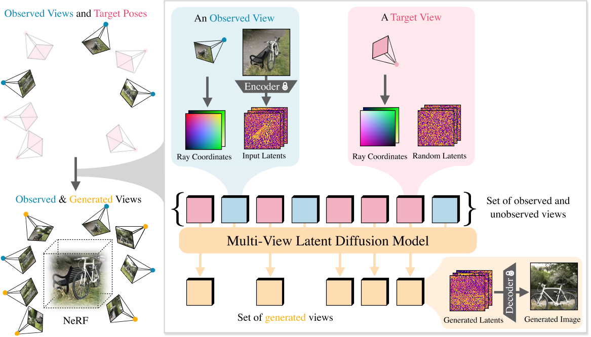
CAT3D 有两个阶段：(1) 从多视角latent diffusion model生成大量合成视图，该模型以输入视图和目标视图的相机姿态为条件； (2) 在观察到的和生成的视图上运行强大的 3D 重建管道以学习 NeRF 表示。
Multi-View Diffusion Model
输入：当前视角的图像及相机参数，目标视角的相机参数
输出：目标视角的图像
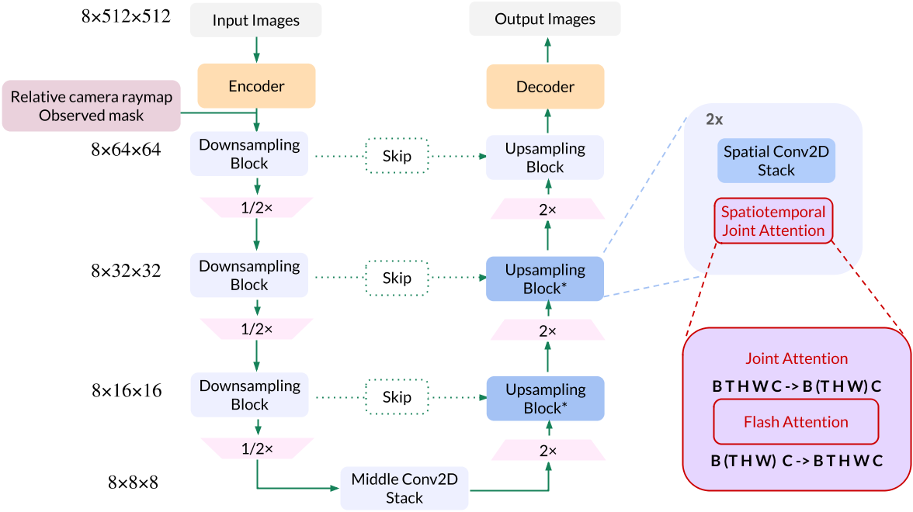
VAE
图像（512 × 512 × 3，图上应该是写错了） --E-- latent code --D-- 图像（64 × 64 × 8）
video LDM
video LDM根据给定条件估计图像的latent code的联合分布。
条件为相机的raymap。
video LDM 以LDM为2D diffusion model backbone，并在此基础上做了以下修改：
- 使用了LDM的预训练模型，并用新的数据finetune
- 去掉文本condition，并增加camera raymap及mask condition
- 在每个 2D 残差块之后将 2D 自注意力膨胀为 3D 自注意力 [43]，以支持时序特征。我们发现通过 3D 自注意力层对输入视图进行调节消除了对 PixelNeRF 的需求 [63]
- condition中包含mask信息，mask用于指示这个角度的图像是已知图像（条件图像）还是未知图像（目标图像）。在训练过程中，条件图像和目标图像会以不同的方式处理。
Generating Novel Views
输入：给定一组视图
输出：生成大量一致的视图以完全覆盖场景并实现准确的 3D 重建
要解决的问题：
- 决定要采样的相机姿势集
- 设计一种采样策略，该策略可以使用在少量视图上训练的多视图扩散模型来生成更大的一致视图集。
相机轨迹
3D 场景重建的挑战在于完全覆盖场景所需的视图可能很复杂，并且取决于场景内容。
我们根据场景的特征探索了四种类型的相机路径：
- （1）围绕中心场景的不同尺度和高度的轨道路径，
- （2）不同尺度和偏移的前向圆形路径，
- （3）样条线不同偏移的路径，
- (4) 沿着圆柱形路径的螺旋轨迹，移入和移出场景。
3D重建
多视图扩散模型生成的视图通常不完全 3D 一致。我们以 Zip-NeRF [71] 为基础，修改了标准 NeRF 训练程序，以提高其对不一致输入视图的鲁棒性。
训练与验证
Multi-View Diffusion Model
我们使用 FlashAttention [65 , 66 ] 进行快速训练和采样，并对潜在扩散模型的所有权重进行微调。
我们发现当我们从预先训练的图像扩散模型转向捕获更高维度数据的多视图扩散模型时，将noise schedule转向高噪声水平非常重要。
具体来说，我们将log信噪比移动log(N)，其中N是目标图像的数量。对于训练，目标图像的latent受到噪声扰动，而条件图像的latent不被哭声污染，并且仅在目标图像上定义扩散损失。
用mask来标示图像是目标图像还是条件图像。为了处理多个 3D 生成设置，我们训练一个通用模型，该模型可以建模总共 8 个条件视图和目标视图 (N + M = 8)，并在训练期间随机选择条件视图的数量 N 为 1 或 3，对应分别为 7 个和 5 个目标视图。
3D重建
Zip-NeRF Loss:
- 光度重建损失、
- 畸变损失、
- 层间损失
- 归一化 L2 权重正则化器
本文增加的损失：
LPIPS：渲染图像和输入图像之间的感知损失（LPIPS [72]）。
与光度重建损失相比，LPIPS 强调渲染图像和观察图像之间的高级语义相似性，而忽略低级高频细节中潜在的不一致。
由于生成的视图已经接近观察到的视图，但具有较小的语义不一致，因此使用LPIPS可以衡量这种不一致。
我们根据到最近的观察到的视图的距离对生成的视图的损失进行加权。这种权重在训练开始时是统一的，并逐渐退火为权重函数，该权重函数对更接近观察到的视图之一的视图的重建损失进行更强烈的惩罚。
有效
缺陷
启发
遗留问题
参考材料
PACER+: On-Demand Pedestrian Animation Controller in Driving Scenarios
核心问题是什么?
要解决的问题
在驾驶场景中生成多样化和自然的行人动画。
当前方法及问题
现有行人动画框架的局限性，这些框架通常只关注遵循轨迹或参考视频的内容，而忽略了人类运动的潜在多样性。
本文方法及效果
PACER+通过结合运动跟踪任务和轨迹跟踪，实现了对特定身体部位（例如上半身）的跟踪，同时通过单一策略跟随给定的轨迹。这种方法显著提高了模拟人类运动的多样性和控制内容的能力，包括基于语言的控制。
核心贡献是什么？
-
PACER+框架：一个基于物理的行人动画框架，可以控制模拟的行人同时跟随2D轨迹和特定身体部位的参考运动。
-
多样化的运动生成：PACER+支持从多种来源生成多样化的行人行为，包括生成模型、预先捕获的动作和视频。
-
零样本重建：PACER+能够零样本重现真实世界的行人动画到模拟环境中，自动填充缺失的部分。
-
运动跟踪与轨迹跟踪的协同：通过联合训练方案，PACER+建立了运动模仿和轨迹跟踪任务之间的协同关系，使用单个策略以物理合理的方式同时跟踪部分身体运动和轨迹。
-
空间-时间掩码：引入了每个关节的空间-时间掩码，指示策略需要跟踪的参考运动的存在。
大致方法是什么？
(1) 地形轨迹跟踪，决定了模拟行人在复杂环境中的所需路径；(2) 运动内容控制，指定行人所表现出的所需动作和手势（例如，打电话或挥手）手），同时遵守提供的轨迹和地形。
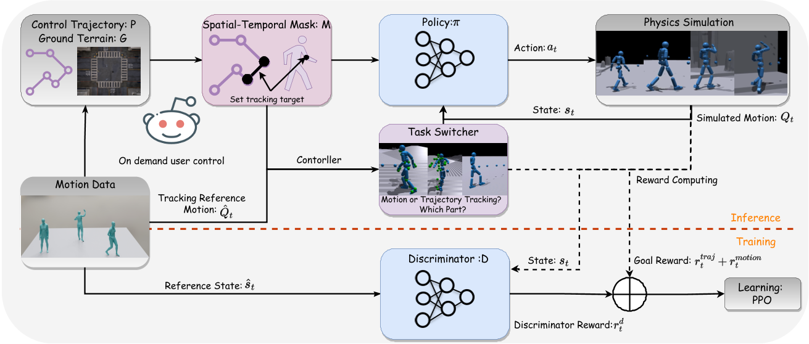
PACER+ 框架遵循具有对抗性运动先验的目标条件强化学习。为了实现对特定身体部位的细粒度控制，作者在运动跟踪任务中引入了一个额外的时空掩码。该掩码指示策略应跟踪reference motion。通过专注于此跟踪任务，PACER+框架能够以零样本的方式演示特定时间步骤和位置的不同行人行为。
RL 的关键要素
$$ M = \lbrace S, A, T, R, \gamma \rbrace $$
| 元素 | 内容 | 来源 |
|---|---|---|
| Stage S | humanoid proprioception [30] \(s^p_t\) goal state \(s^g_t\) ---- 轨迹跟踪的目标 \(s^{traj}_t\) ---- 运动跟踪的目标 \(s^{motion}_t\) | PD控制 |
| Action A | policy network | |
| 转移 T | PD控制 | |
| reward R | 与给定的轨迹和运动跟踪任务相关 | |
| discount factor \(\gamma\) |
地形上的轨迹跟踪
状态 S
在轨迹跟随任务中，人形机器人有一个局部高度图G和要跟随的轨迹P。P为接下来一段时间的轨迹采样序列。
$$ s^{traj}_t \triangleq (P_t^{traj}， G_t) $$
[?]G为什么和时间有关？地形会变吗？
Reward R
t 时序轨迹 期望轨迹 p 与模拟角色根节点位置之间的 xy 距离，公式为
$$ d = \parallel\hat p_t^{xy} - r_t^{xy}\parallel\ r^{traj}_t = e^{-2d} $$
提前终止机制
如果在时间步 t 时距离d大于阈值 τ （0.5米），将终止轨迹跟踪任务。
运动跟踪
状态 S
t+1时刻的运动跟踪目标包含：
- t+1时刻的运动状态：关节位置、关节旋转、关节速度和旋转速度。不管特定帧特定关节是否需要跟踪，都将其设置为与模拟角色状态相同的值。
- 时空掩码：希望policy netword只在给定时间范围内跟踪特定运动部分，同时遵循轨迹，引入时空掩码。定义时空掩码为 M1 = T * J，表示在时间步 t 是否需要运动跟踪关节 j。1为跟踪，0为不跟踪。
Reward R
类似于带mask的重建loss
对抗运动先验（AMP）
AMP 采用运动discriminator来鼓励策略生成与dataset中观察到的运动模式一致的运动。
- 使用大约 200 个序列的较小数据集训练 AMP。AMP 使用discriminator来计算style reward，并将其添加到task reward中。Good：确保了生成运动的自然性。Bad：但它限制了运动跟踪任务中看不见的运动的泛化。
- 为了解决工作1引入的问题，将补充运动序列作为运动跟踪中的motion reference。Good：可以引入了不同的运动内容，并且有可能增强跟踪性能。Bad：然而，使用额外的数据集训练运动跟踪任务对联合学习 AMP 和较小的数据集提出了挑战，
- 为了解决工作2引入的问题，在训练期间采用了提前终止机制。
System Overview
训练过程
policy network通过轨迹跟踪和运动跟踪任务的组合方法进行训练。
- 第一阶段，轨迹跟踪和动作跟踪两项任务联合训练。在此步骤中，在每个时间步随机生成reference motion（随机采样自AMASS）的二进制掩码，并将提前终止应用于运动跟踪任务。
- 第二阶段，使用随机生成的合成轨迹来训练轨迹跟踪任务 。在此阶段，时空掩模内的所有关节都被分配值 0。
使用场景1：
输入轨迹，输出3D motion
从其它来源中获取reference motion，将reference motion与输入的轨迹对齐，然后设置掩码生成运动。
使用场景2：真实场景
输入视频，输出3D motion。
根据2D keypoints的置信度来打mask。
有效
缺陷
验证
启发
遗留问题
参考材料
Humans in 4D: Reconstructing and Tracking Humans with Transformers
核心问题是什么?
我们提出了一种重建人类并随着时间的推移追踪他们的方法。
Human Mesh Recovery：我们提出了一个用于人类mesh reconvery的完全“transformer”的网络版本。该网络 HMR 2.0 可以从单个图像中进行人体重建。
Human Tracking：以 HMR 2.0 的 3D 重建作为以 3D 运行的跟踪系统的输入，使得我们可能在多人场景及遮挡场景中保持身份。
核心贡献是什么？
-
HMR 2.0：这是一个完全基于Transformer的架构，用于从单张图像中恢复人体网格。它不依赖于特定领域的设计，但在3D人体姿态重建方面超越了现有方法。
-
4DHumans：这是一个建立在HMR 2.0基础上的系统，可以联合重建和跟踪视频中的人体。它在PoseTrack数据集上实现了最先进的跟踪结果。
-
动作识别：通过在AVA v2.2数据集上的动作识别任务，展示了HMR 2.0在3D姿态估计方面的改进，最终为AVA基准测试贡献了最先进的结果（42.3 mAP）。
大致方法是什么？
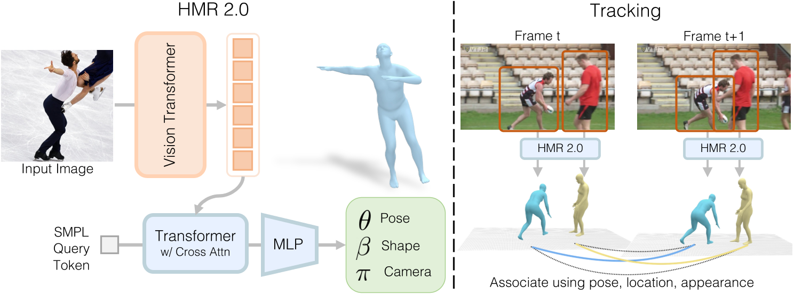
Reconstructing People
模型结构
| 输入 | 输出 | 方法 |
|---|---|---|
| 视频 | 图像 | cv2 |
| 图像 | 人物的bbox | VitDet |
| Image | image tokens | ViT-H/16 |
| a single (zero) input token, image tokens | 3D rotations | a standard transformer decoder [74] with multi-head self-attention |
class SMPLTransformerDecoderHead(nn.Module):
""" HMR2 Cross-attention based SMPL Transformer decoder
"""
def __init__(self, ):
super().__init__()
transformer_args = dict(
depth = 6, # originally 6
heads = 8,
mlp_dim = 1024,
dim_head = 64,
dropout = 0.0,
emb_dropout = 0.0,
norm = "layer",
context_dim = 1280,
num_tokens = 1,
token_dim = 1,
dim = 1024
)
# a standard transformer decoder [74] with multi-head self-attention
self.transformer = TransformerDecoder(**transformer_args)
dim = 1024
npose = 24*6
# Transformer生成的是latent code，使用MLP把latent code转为实际的信息
self.decpose = nn.Linear(dim, npose)
self.decshape = nn.Linear(dim, 10)
self.deccam = nn.Linear(dim, 3)
# MLP层的常用权重初始化方法
nn.init.xavier_uniform_(self.decpose.weight, gain=0.01)
nn.init.xavier_uniform_(self.decshape.weight, gain=0.01)
nn.init.xavier_uniform_(self.deccam.weight, gain=0.01)
mean_params = np.load('data/smpl/smpl_mean_params.npz')
init_body_pose = torch.from_numpy(mean_params['pose'].astype(np.float32)).unsqueeze(0)
init_betas = torch.from_numpy(mean_params['shape'].astype('float32')).unsqueeze(0)
init_cam = torch.from_numpy(mean_params['cam'].astype(np.float32)).unsqueeze(0)
self.register_buffer('init_body_pose', init_body_pose)
self.register_buffer('init_betas', init_betas)
self.register_buffer('init_cam', init_cam)
def forward(self, x, **kwargs):
batch_size = x.shape[0]
# vit pretrained backbone is channel-first. Change to token-first
x = einops.rearrange(x, 'b c h w -> b (h w) c')
init_body_pose = self.init_body_pose.expand(batch_size, -1)
init_betas = self.init_betas.expand(batch_size, -1)
init_cam = self.init_cam.expand(batch_size, -1)
# Pass through transformer
# 使用a single (zero) input token来解码
token = torch.zeros(batch_size, 1, 1).to(x.device)
token_out = self.transformer(token, context=x)
token_out = token_out.squeeze(1) # (B, C)
# Readout from token_out
# 不输出绝对信息，而是相对于第一帧的信息
pred_pose = self.decpose(token_out) + init_body_pose
pred_shape = self.decshape(token_out) + init_betas
pred_cam = self.deccam(token_out) + init_cam
return pred_pose, pred_shape, pred_cam
Loss
- SMPL参数Loss
- 3D keypoint重建loss
- 2D keypoint重建loss
- SMPL参数的差别器loss
Tracking People
- 逐帧检测各个帧中的人物，将它们“lifting”到 3D，提取它们的 3D 姿势、3D 空间中的位置（来自估计的相机）和 3D 外观（来自纹理贴图）。
- 随着时间的推移，构建出每个人的tracklet representation。
- 针对每个tracklet，预测下一帧中人的姿势、位置和外观（全部以 3D 形式进行）。
- 在这些自上而下的预测（来自第3步）和该帧中人的自下而上的检测（来自第1步）之间找到最佳匹配。
- 更新tracklet representation并迭代该过程。
有效
缺陷
验证
-
数据集和基线：使用标准的H3.6M、MPI-INF3DHP、COCO和MPII数据集进行训练，并使用InstaVariety、AVA和AI Challenger作为额外数据，其中生成了伪地面真实拟合。
-
实验：作者们在多个数据集上定性和定量地评估了他们的重建和跟踪系统。首先，他们展示了HMR 2.0在标准2D和3D姿态精度指标上超越了以前的方法。其次，他们展示了4DHumans是一个多才多艺的跟踪器，实现了最先进的性能。最后，他们通过在动作识别的下游应用中展示优越的性能，进一步证明了恢复姿态的鲁棒性和准确性。
-
模型设计：在开发HMR 2.0的过程中，作者们探索了一系列设计决策，包括不同的模型架构、训练数据的影响、ViT预训练的影响以及SMPL头部架构的影响。
启发
遗留问题
参考材料
- https://shubham-goel.github.io/4dHumans/.
Learning Human Motion from Monocular Videos via Cross-Modal Manifold Alignment
核心问题是什么?
从 2D 输入学习 3D 人体运动是计算机视觉和计算机图形领域的一项基本任务。
当前方法及问题
以前的许多方法通过在学习过程中引入运动先验来解决这种本质上不明确的任务。然而，这些方法在定义此类先验的完整配置或训练鲁棒模型方面面临困难。
可以找到由2D和3在这两个域的数据共享的紧凑且定义明确的latent manifold，类似于 CLIP 潜在流形。这个潜在空间应该包含足够的信息来忠实地重建人体姿势。因此，在 3D 人体姿态重建中进行跨模态对齐时存在两个技术挑战：
1）识别这样的潜在流形，它封装了 3D 人体运动中体现的运动学约束并作为我们的运动先验，
2）找到有效的方法将视频特征空间与运动先验对齐以实现高保真 3D 运动重建的方法。
本文方法
为了解决上述两个挑战，我们引入了一种称为 VTM 的新型神经网络。
- VTM 采用两部分运动自动编码器 (TPMAE)，它将运动潜在流形的学习分为上半身和下半身部分。这种划分有效地降低了整个人体姿态流形建模的复杂性。
- TPMAE在与尺度不变的虚拟骨架对齐的3D人体运动数据上进行训练，这有利于消除骨架尺度对流形的影响。
- VTM 结合了一个两部分视觉编码器 (TPVE)，将由视频帧和 2D 关键点组成的视觉特征转换为上半身和下半身的两个视觉latent manifold。
- 采用歧管对齐损失来将上半身部分和下半身部分的跨模态歧管拉得更近。
- TPVE 与预先训练的 TPMAE 联合训练，以重建具有完整表示的 3D 人体运动：所有关节的旋转、根关节的平移以及包含尺度信息的运动骨架。
这个精心设计的流程确保了 VTM 框架内运动和视觉表示之间的协调。
- 3D 人体运动和 2D 输入（即视频和 2D 关键点）之间的跨模式潜在特征空间对齐来利用运动先验。
- 为了降低运动先验建模的复杂性，我们分别对上半身和下半身部位的运动数据进行建模。
- 将运动数据与尺度不变的虚拟骨骼对齐，以减轻人体骨骼变化对运动先验的干扰。
效果
VTM 在 AIST++ 上进行评估，展示了从单眼视频重建 3D 人体运动的最先进性能。值得注意的是，我们的 VTM 展示了对未见过的视角和野外视频的泛化能力。
核心贡献是什么？
- 跨模态潜在特征空间对齐：VTM将3D人体运动和2D输入（视频和2D关键点）的潜在特征空间进行对齐，以利用运动先验信息。
- 上半身和下半身的运动数据建模：为了降低建模运动先验的复杂性，VTM将上半身和下半身的运动数据分别建模。
- 与尺度不变虚拟骨骼对齐：VTM将运动数据与尺度不变的虚拟骨骼对齐，以减少人体骨骼变化对运动先验的干扰。
- 3D运动表示：VTM能够重建包括所有关节的旋转、根关节的平移以及包含尺度信息的运动骨架在内的完整运动表示。
大致方法是什么？

Learn Motion Priors
模型
| 输入 | 输出 | 方法 |
|---|---|---|
| 3D motion序列X | 上半身序列Xu，下半身序列Xd | 分割，两者都包含root数据 |
| part动作序列 | latent code zu和zl | 3D Encoder |
| zu, zl | decoded features of body parts | 3D Decoder |
| decoded features of body parts | non-root motion | an aggregation layer A,1D 卷积层 |
| zu, zl | root motion,仅包含根旋转 rq 、Z 轴上的 3D root位置 rzp 以及相应的速度 rz | Decoder, Dr |
| 轴上的 3D root位置 rzp | root translations |
Loss
| Loss | 目的 | 方法 |
|---|---|---|
| motion重建loss | 限制latent manifold的明确定义 | 由于不同的关节在运动中的重要性不同，我们通过为根关节和其他关节赋予相对重要性 ωr 和 ωnr 来缩放重建的和真实的运动数据 |
| 平滑 | 防止重建运动沿时间轴突然变化 |
Learn Human Motion from Videos
模型
| 输入 | 输出 | 方法 |
|---|---|---|
| video | video feature | ResNet18 |
| 2D keypoints | 2D keypoints feature | 分成上、下part，分别用CNN提取feature |
| video features, keypoints features | visual features | 视觉特征融合块 |
| visual features | latent manifold | 2D Encoder，这些编码器具有与3D Encoder类似的结构，但后面有两个跨时间上下文聚合模块（CTCA）以便更好地捕捉时间相关性 |
| visual features | bone ratio | 由于人体不同身体部位的身高和比例存在很大差异，因此骨骼的尺度在 3D 人体运动中起着至关重要的作用。虽然我们故意从训练运动数据中删除尺度信息以增强运动先验的学习，但我们可以有效地从 2D 输入中提取骨骼比率 b。这些输入本质上体现了角色的比例信息。 |
Loss
| Loss | 目的 | 方法 |
|---|---|---|
| motion重建loss | 限制latent manifold的明确定义 | 由于不同的关节在运动中的重要性不同，我们通过为根关节和其他关节赋予相对重要性 ωr 和 ωnr 来缩放重建的和真实的运动数据 |
| 平滑 | 防止重建运动沿时间轴突然变化 | |
| 流形空间对齐损失 | ||
| bone ratio loss |
有效
- 实时性能：VTM能够以接近70fps的速度快速生成与视频序列同步的精确人体运动，使其成为各种实时应用的潜在候选者。
- 泛化能力：VTM在未见过的视角和野外视频上展现出了良好的泛化能力。
缺陷
验证
数据集：AIST++, Human3.6, BVHAIST++
启发
遗留问题
参考材料
- https://arxiv.org/pdf/2404.09499
PhysPT: Physics-aware Pretrained Transformer for Estimating Human Dynamics from Monocular Videos
这是一篇关于从单目视频中估计人体动态的研究论文。这篇论文由Yufei Zhang、Jeffrey O. Kephart、Zijun Cui和Qiang Ji共同撰写，他们分别来自Rensselaer Polytechnic Institute、IBM Research和University of Southern California。
在这篇论文中，作者们介绍了一种名为PhysPT（Physics-aware Pretrained Transformer）的新方法，旨在改善基于运动学的运动估计，并推断运动力。PhysPT利用Transformer编码器-解码器骨架，通过自监督的方式有效地学习人体动态，并结合了物理原理，以提高运动估计的物理真实性。具体来说，PhysPT构建了基于物理的人体表示和接触力模型，并引入了新的基于物理的训练损失（例如，力损失、接触损失和欧拉-拉格朗日损失），使模型能够捕捉人体和其所经历的力的物理属性。
核心问题是什么?
现有方法的局限性
尽管当前的深度学习方法在3D人体重建方面取得了进展，但它们往往产生不真实的估计，因为这些方法主要考虑了运动学而忽略了物理原理。
本文方法
本文提出的物理感知预训练变压器（PhysPT），它改进了基于运动学的运动估计并推断运动力。 PhysPT 利用 Transformer 编码器解码器backbone以自我监督的方式有效地学习人类动力学。
它还结合了控制人体运动的物理原理。构建了基于物理的身体表示和接触力模型。并利用它们施加新颖的物理启发训练损失（即力损失、接触损失和欧拉-拉格朗日损失），使 PhysPT 能够捕获人体的物理特性及其所经历的力。
实验结果
实验表明，经过训练后，PhysPT 可以直接应用于基于运动学的估计，以显着增强其物理合理性并产生有利的运动力。此外，我们还表明，这些具有物理意义的量可以转化为重要下游任务（人类行为识别）准确性的提高。
核心贡献是什么？
- 提出了一个Transformer编码器-解码器模型，通过自监督学习进行训练，并结合了物理原理。
- 引入了基于物理的人体表示（Phys-SMPL）和接触力模型，以及一系列新的基于物理的训练损失，用于模型训练。
- 实验表明，PhysPT可以显著提高运动估计的物理真实性，并推断出有利的运动力。
大致方法是什么？

所提出的框架由基于运动学的运动估计模型（橙色）和物理感知的预训练 Transformer（绿色）组成，用于从单目视频估计人体动力学。插图 (a) 说明了右骨盆的关节驱动和每只脚的接触力。 (b) 说明了重建的身体运动和推断的力，较浅的颜色代表更大的关节驱动幅度（例如，人物站立时的上身关节，行走时的腿部关节）。
Preliminary
Euler-Lagrange Equations.
看不懂
Kinematics-based Motion Estimation Model
- 使用任意一种Mocap算法，从视频中提取出人在相机坐标系下的shape参数和pose参数。
- 使用GLAMER把人从相机坐标系转到世界坐标系。
- 返回
- 世界坐标系下的位移、朝向和关节旋转
- 所有帧的shape参数的均值
Physics-aware Pretrained Transformer
优化Mocap结果，使其符合物理
Transformer Encoder-Decoder Backbone
| 输入 | 输出 | 方法 |
|---|---|---|
| q(T, R, theta) | input embedding | linear layer |
| input embedding, time positional embedding | latent embedding | Transformer Encoder |
| latent embedding, time positional embedding, 历史输出 | output embedding | Transformer Decoder |
loss：
- q的重建损失
- joint position的重建损失
自监督训练：PhysPT通过重建输入的人体运动来进行自监督训练，无需3D标注视频。
Physics-based Body Representation
物理原理的整合：PhysPT通过直接从广泛采用的3D人体模型（SMPL）计算身体物理属性，避免了不现实的代理身体模型的使用。
- 把人体根据关节分段
- 使分段mesh封闭
- 计算每一段mesh的体积
- 计算每一段mesh的质量和转动惯量
- 代入Euler-Lagrange公式
连续接触力模型
目标：从 3D 运动估计地面反作用力
难点：
- 接触状态通常需要事先确定——这本身就很难准确地做到
- 离散接触状态还引入了估计力的不可微过程。
本文方法：引入弹簧质量系统

$$ \lambda_{p,t} = s_{p,t}(-k_{h,t}b_{h,t}-k_{n,t}b_{n,t}-c_tV_{C,t}) $$
| 符号 | 含义 | 前置计算 |
|---|---|---|
| \(k_{h,t}\) | 弹簧系统在水平方向上的stifness | |
| \(k_{n,t}\) | 弹簧系统在竖直方向上的stifness | |
| \(c_t\) | 弹簧系统的damping系数 | |
| \(s_{p,t}\) | 力的量级大小 | \(d_t, V_{C,t}\) |
| \(d_t\) | point p到地面的距离 | |
| \(V_{C,t}\) | point p的速度 | |
| \(b_{h,t}\) | point p在水平方向上与reference point的距离 | 看样子reference point是（0.5， 0.5， 2） |
| \(b_{n,t}\) | point p在垂直方向上与reference point的距离 | |
| \(d_{t，x}\) | \(d_t\)投影到x轴的向量 | 与触地点的法向是什么关系？ |
| \(d_{t，y}\) | \(d_t\)投影到y轴的向量 |
为了计算效率，仅将接触模型应用于每个身体部位内的顶点子集。
接触模型的特点：
- 接触模型捕捉了自然接触行为的本质，即：其中最接近地面且最稳定的点会受到更大的力。
- 接触模型避免了估计离散接触状态时出现的问题。
Physics-inspired Training Losses
优化目标：让论文中的公式（2）成立。
其中公式（2）中的\(\lambda\)为接触力，根据公式（4），是一个跟点的位置p和弹簧参数（stiffness, damping）有关的值。此处把公式（4）简化为
$$
\lambda_t = A_t x_t
$$
其中，第一项为与点p相关的矩阵，前面提到给完整的mesh顶点定义了一个subset，subset中的所有点都要参与计算，因此构成了一个比较大的矩阵。第二顶就是弹簧系数。
优化对象：\(x_t, \tau_t\)
优化约束：接触力lambda应考虑到人类正常站立时可能经历的最大接触力。
优化方法：这是一个二次规划问题，用CVXOPT求解。
Force Loss
目的：利用导出的运动力来指导模型产生真实的运动力并提取有意义的潜在表示以预测物理上合理的运动。
将latent embedding和上一节中优化出的\({\lambda_t, \tau_t}\)构成pair data。并使用一个linear layer来拟合latent embedding到\({\lambda_t, \tau_t}\)的映射。
Contact Loss
目的：让经历接触力的顶点应用约束，获得真实的接触行为
Euler-Lagrange Loss
目的：优化公式（5）
完整loss
重建loss + force loss + contact loss + euler loss
有效
缺陷
验证
PhysPT在多个数据集上的表现证明了其有效性，包括在Human3.6M和3DOH数据集上的评估，以及在PennAction数据集上对人类行为识别任务的改进。
启发
应用前景：PhysPT的方法可以应用于各种基于运动学的重建模型，以生成更精确的运动和力估计，这对于虚拟现实、增强现实、人机交互和机器人等领域具有潜在的应用价值。
这篇论文为单目视频下的人体动态估计领域提供了新的视角，并展示了通过结合深度学习和物理原理来提高模型性能的可能性。
遗留问题
参考材料
- [1] https://arxiv.org/pdf/2404.04430
Imagic: Text-Based Real Image Editing with Diffusion Models

✅ 对内容进行复杂修改，但对不相关部分保留。
P25
Pipeline
输入：Origin Image和target text promt

✅ Step 1： 对 target text 作 embedding，得到init text embedding \(e_{tgt}\)。然后优化init text embedding，使得Pre-Trained Diffusion Model可以根据Optimized text embedding \(e_{opt}\) 重建出Origin Image。

✅ Step 2： 用 Optimized text embedding \(e_{opt}\) 重建 Origin Image，这一步会 finetune diffusion model。

✅ Step 3：用finetuned diffusion model生成target Image。其中condition为\(e_{tgt}\)和\(e_{opt}\)的插值。
P26
效果
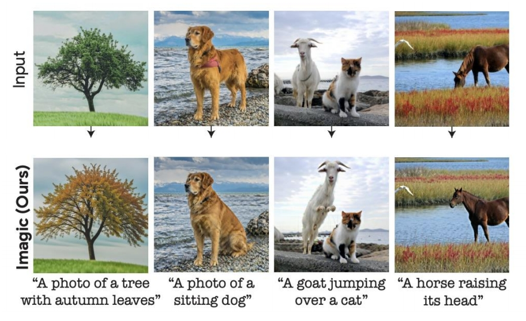
DiffEdit: Diffusion-based semantic image editing with mask guidance
任务目标
SDEdit要求用户对想更新的区域打MASK。
Instead of asking users to provide the mask, the model will generate the mask itself based on the caption and query.

✅ 作者认为让用户打 MASK 比较麻烦，因此生成 MASK
P22
Pipeline
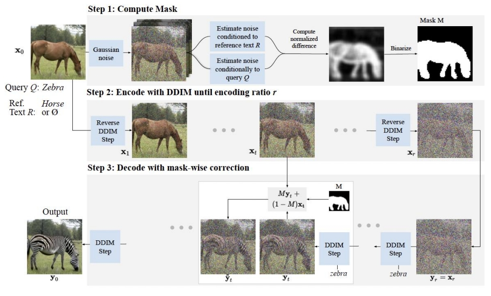
✅ Step 1：对原始图像加噪分别根据两个文本，Q 和 R 对加噪结果去噪。对两个去噪结果求差，得出哪些区域应该被重新生成。
✅ Step 2：用 DDIM 对原始图像编码，得到 noise.
✅ 注意：step 1 的加高斯噪声与 step 2 的 DDIM Encoding 不同。前者是非确定的，后者是确定的。
✅ Step 3：DDIM Decoding，但对于非 MASK 区域，用 Step 2 相同 step 的对应值覆盖。
P23
效果
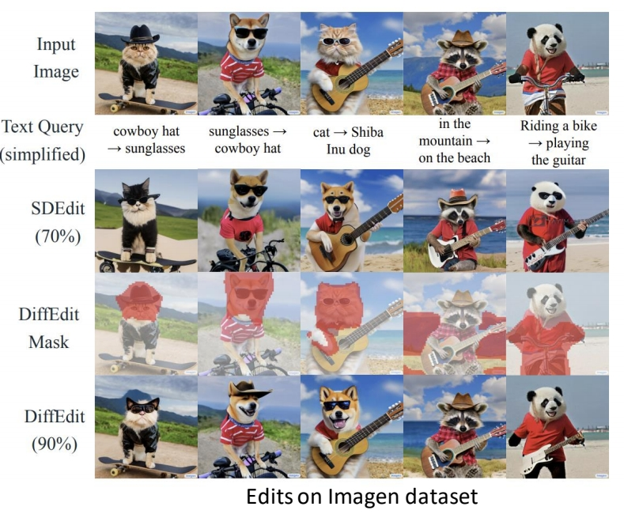
生成质量高且与原始相似度高。
Style Transfer with DDIM inversion
Recap DDIM Inversion
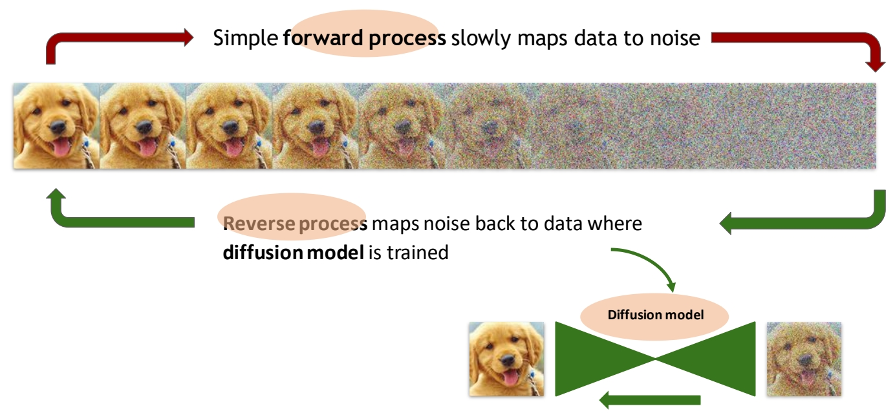
Song et al., "Denoising Diffusion Implicit Models", ICLR 2021
✅ DDIM 方法中，从 noise 到图像的映射关系是确定的。同样也可以让图像与 noise 的关系是确定的。这个过程称为 DDIM Inversion.
✅ DDIM Inversion 是图像编辑的常用方法。
P19
Pipeline
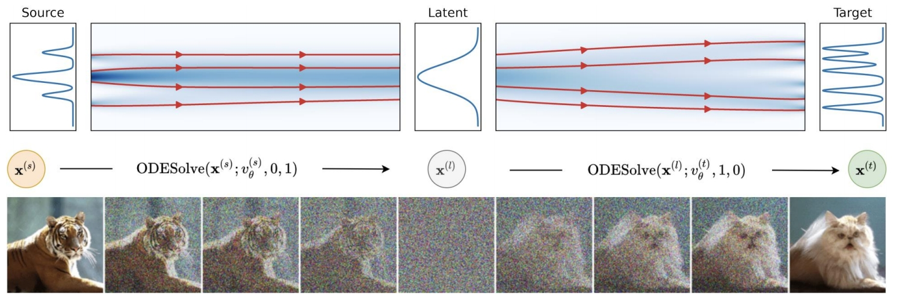
✅ 假设已有一个 文生图的pretrained DDIM model．
✅ 任务：把老虎的图像变成猫的图像，且不改变 Sryle.
✅ (1) 老虎图像 ＋ DDIM Inversion ＋ “老虎”标签 → noise
✅ (2) noise ＋ DDIM ＋ “猫”标签 → 猫图像
✅ 优点：不需要重训。
P20
效果

✅ 学习不同颜色空间的 transform
guided synthesis／editing Task

✅ 过去的 guided synthesis／editing 任务是用 GAN based 方法实现的。
P12
Pipeline

Gradually projects the input to the manifold of natural images.
准备工作：一个预训练好的Image Diffusion Model
第一步：perturb the input with Gaussian noise
第二步：progressively remove the noise using a pretrained diffusion model.
[?] 怎样保证Denoise的图像与原始图像有高度的一致性？
特点
只需要一个预训练模型，不需要额外的finetune。
P13
其它应用场景
Fine-grained control using strokes

可以在Image上加上草图，也可以直接使用草图生成图像
P16
Image compositing

把上面图的指定pixel patches应用到下面图上。
SDEdit的结果更合理且与原图更像。
P17
效率提升
Efficient Spatially Sparse Inference for Conditional GANs and Diffusion Models

原理：全图生成速度比较慢，因此针对被编辑区域进行部分生成。
Li et al., "Efficient Spatially Sparse Inference for Conditional GANs and Diffusion Models", NeurIPS 2022
Prompt-to-Prompt Image Editing with Cross-Attention Control
核心问题是什么?
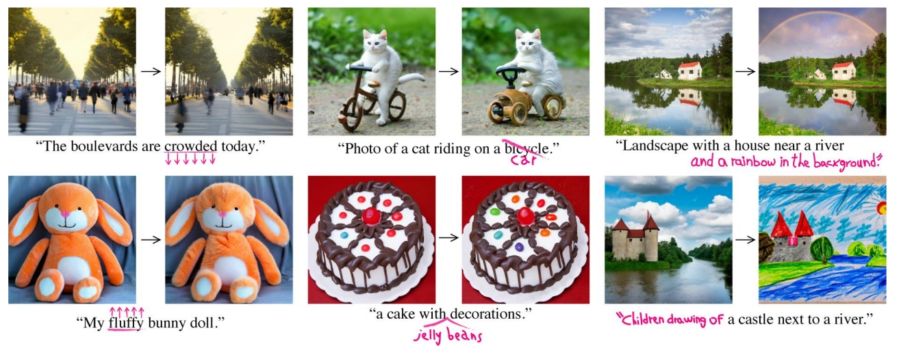
基于标题的图像编辑 (1) 修改某个单词的影响力；(2) 替换单词；(3) 添加单词；而那些不期望改变的部分能够保持不变。
核心贡献是什么？
大致方法是什么？
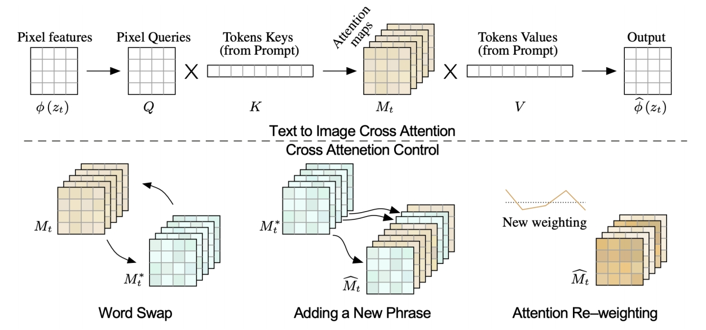
✅ 控制生成过程中的 attention maps。其具体方法为，在每个step中，把原始图像的 attention map 注入到 diffusion 过程中。
图中上面步骤描述正常的文生图的cross attention设计。
图中下面步骤描述了如何控制cross attention过程中的attention map。三种控制方式分别对应三种图像编辑方法。
P29
效果

缺陷
验证
启发
遗留问题
参考材料
WANDR: Intention-guided Human Motion Generation
核心问题是什么?
要解决的问题
输入：角色的初始姿势和目标的 3D 位置
输出：生成自然的人体运动，并将末端执行器（手腕）放置在目标位置。
现有方法
现有方法（数据驱动或使用强化学习）在泛化和运动自然性方面受到限制。主要障碍是缺乏将运动与目标达成相结合的训练数据。
本文方法
为了解决这个问题，我们引入了新颖的意图特征（intention feature）。intention引导角色达到目标位置，并交互式地使生成适应新的情况，而无需定义子目标或整个运动路径。 WANDR 是一种条件变分自动编码器 (c-VAE)，可以在具有目标导向运动的数据集（CIRCLE）进行训练，也可以是不具有目标导向运动的数据集(AMASS)进行训练。
效果
我们广泛评估我们的方法，并证明其生成自然和长期运动的能力，以达到 3D 目标并推广到看不见的目标位置。我们的模型和代码可用于研究目的，请访问 wandr.is.tue.mpg.de。
核心贡献是什么？
- 我们提出了 WANDR，一种数据驱动的方法，它将自回归运动先验与新颖的intention引导机制相结合，能够生成在空间中真实移动并达到任意目标的角色。
- 我们通过实验评估我们的方法，包括“组合多个数据集的优势”以及“我们的运动生成器的泛化能力”。我们的结果强调了“intention机制指导运动生成过程”的有效性
- 同时还能够为缺乏明确目标注释的数据集合并伪目标标签。该模型和代码可用于研究目的。
大致方法是什么？
原理：当人试图到达一个遥远的目标时，运动主要集中在腿部和引导身体接近物体，但当他接近物体时，重点将集中在移动手臂和上半身以到达目标。
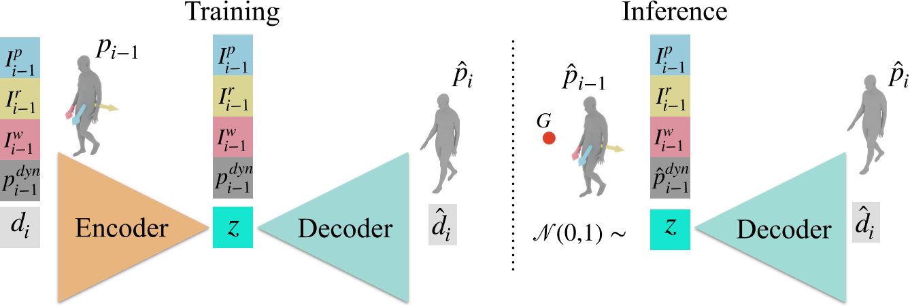
在训练过程中，模型以意图向量 Ip、Ir 和 Iw 为条件，学习将它们与实际实现目标的行动联系起来。当训练数据没有明确的目标时，根据未来帧中手腕的位置创建一个目标；角色的状态 \(p^{dyn}_ i\) 表示 SMPL-X 局部姿态参数 pi 以及帧 i − 1 中身体参数的 deltas \(d_ {i−1}\)。
在推理过程中，WANDR 获取意图特征、状态和随机噪声并返回位姿变化 \(\hat d_ i\)。下一个位姿 pi 是通过将 \(\hat d_ i\) 与前一个位姿 \(\hat p_ {i-1}\) 相结合而获得的。
数据表示
body pose：全局位移（3）+ 全局朝向（6）+ local pose (21 * 6)
角色状态\(p^{dyn}_ i\)：SMPL-X 局部姿态参数 pi + 帧 i − 1 中身体参数的 deltas \(d_ {i−1}\)
Intention Features
输入:
- 当前帧的body pose
- 期待目标帧时手的位置
- 期待手达到指定位置时的目标帧ID（有GT时用GT，没有GT时随机指定未来帧）
- 当前帧ID
输出：
- Wrist Intention：手腕及时到达目标位置所需的平均速度
- Orientation Intention：达目标位置时的身体方向。通过对此进行调节，我们确保人类模型面向目标并平稳地导航到目标，防止推理过程中出现不自然的运动，例如倒退。
- Pelvis Intention：目标相对于身体的位置的信息。它是目标和骨盆关节之间的差异，不包括 z（高度）分量。
Motion Network (WANDR)
| 输入 | 输出 | 方法 |
|---|---|---|
| 第i帧pose和第i-1帧pose | pose delta di（135维） 通过关注姿势增量而不是绝对姿势值，我们的模型受益于重要的归纳偏差，提高了其学习效率和性能.类似Motion VAE和HuMoR. | p是的旋转分量和位移分量分别计算。并去除其中全局旋转和全局位移中的z分量 |
| di | 对di进行编码 | Encoder |
| 编码z，意图参数，角色状态 | 相对于上一帧的delta pose | Decoder |
Training Loss
| loss | weight |
|---|---|
| 重建loss | 1 |
| KL divergence | 1e-2 防止 LKL 的过度支配，从而帮助解码器避免崩溃为均值预测。 |
| J 关节位置 | 1 |
有效
缺陷
验证
数据集：AMASS, CIRCLE
启发
3D-3D通常预测delta pose，来避免模型过于关注全局朝向。
2D-3D通常预测全局位置，因为不同全局朝向的3D对应的2D是不同的。
遗留问题
参考材料
TRAM: Global Trajectory and Motion of 3D Humans from in-the-wild Videos
| 缩写 | 英文 | 中文 |
|---|---|---|
| VIMO | video transformer model | |
| DBA | dense bundle adjustment layer |
核心问题是什么?
TRAM是一种从in-the-wild视频中重建人类全局轨迹和运动的两阶段方法。
提取相机轨迹
已有方法（16）是通过相机运动 + 人物运动 + 人物运动先验 联合优化出相机scale。作者认为由于人物运动先验是使用室内数据训练得到的，因此不能泛化到室外场景中。
作者认为仅通过（排除前景干扰的）背景 + 背景语义足以估计出scale。
人物轨迹恢复
已有方法中，单帧方法恢复较准确，但缺少连续性。而时序方法恢复动作不够准确。原因是基于视频的训练成本高且缺少视频数据。
作者在HMR2.0(预训练的人物模型)上拓展出VIMO模型（增加2个时序transformer），并使用视频数据finetune这个模型。在轨迹信息的相机作为尺度参考系下，回归出人体的运动学身体运动。
效果
通过组合这两个运动，我们实现了世界坐标系中 3D 人体的精确恢复，将全局运动误差比之前的工作减少了 60%。
核心贡献是什么？
- (i) 我们提出了一种通用方法 TRAM，它可以从野外视频中恢复人体轨迹和运动，比之前的工作有了很大的改进。
- (ii) 我们证明可以从 SLAM 推断出人体轨迹，并提供技术解决方案，使单目 SLAM 在动态人体存在的情况下具有鲁棒性和公制尺度。
- (iii) 我们提出了视频变换器模型 VIMO，它建立在大型预训练的基于图像的模型之上，并证明这种可扩展的设计实现了最先进的重建性能。
大致方法是什么？
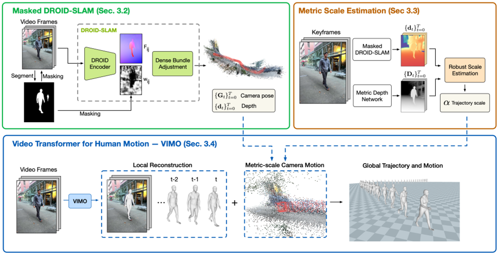
左上：给定一个视频，我们首先使用 DROID-SLAM 恢复相对相机运动和场景深度，并通过双掩蔽对其进行增强（第 3.2 节）。
右上：我们通过优化过程将恢复的深度与左上预测的深度对齐，以估计度量缩放（第 3.3 节）。
底部：我们引入 VIMO 在相机坐标下重建 3D 人体（第 3.4 节），并使用公制尺度相机将人体轨迹和身体运动转换到全局坐标。
detect track video
| 输入 | 输出 | 方法 |
|---|---|---|
| 视频 | 图像 | cv2 |
| 图像 | 人物的bbox。 一张图像上可能有多个bbox，因此每个图像得到的是以图像为单位的bbox list，按照bbox的面积由大到小排序。因为大的bbox更有可能是真实的bbox，而小的bbox更有可能是误检。 | VitDet |
| 图像，人物的bbox | mask | 来自 YOLOv7 [83] 的检测作为Segment Anything Model[32] 模型的提示 |
| bbox | tracking。 VitDet只负责检测人物的bbox，不负责让bbox与人物的ID挂钩。为了得到某个ID的连续的bbox序列，需要进行tracking。得到的是以人为单位的bbox list，以及其相应的mask list。 | DEVA-Track-Anything，跟踪策略为IOU。 |
| 图像 | 公制深度 | ZoeDepth [5] |
Masked DROID-SLAM
输入：单视角视频
输出：相机轨迹
| 输入 | 输出 | 方法 |
|---|---|---|
| 图像或用户输入 | 相机内参 | 相机内参包括focal, center。没有用户指定的情况下，默认center为图像的中心，focal为np.max([h0, w0])。 |
| 图像序列, mask | 估计更准确的的相机内参 | 利用DROID-SLAM的track功能，找到一个可以使droid reprojection error最小的focal. |
| 图像序列，mask，相机内参 | 相机轨迹， disps | Masked DROID-SLAM 在DROID-SLAM的基础上，把图像中被mask为有人的区域的置信度转为0，防止人物的移动对DROID-SLAM造成影响。 |
disps：在立体视觉中，"disparity"（视差）是指同一场景点在左右两个相机图像中的水平像素差。这个差异是由于相机从不同的位置观察同一场景造成的。通过计算视差，可以恢复出场景的深度信息，因为视差与深度是相关的（在固定的相机内参下，视差越大，深度越近；视差越小，深度越远）。
相机移动的情况下，才会有来自同一个场景在不同相机观察位置的视差。因此此算法应用于相机移动的场景。而不能使用于相机静止的场景。
Trajectory Scale Estimation
作者认为，空间scale的推理能力部分体现在深度预测网络中。
第一步的DPOID会输出深度，但深度的单位未知，且与图像保持一致。
第二步中的ZoeDepth也会输出深度，且深度是meter scale的。
| 输入 | 输出 | 方法 |
|---|---|---|
| 图像序列 | pred_depth | 预训练的ZoeDepth |
| disps 来自Masked DROID-SLAM | slam_depth | slam_depth = 1/disp |
通过两个深度的对比，可以得出图像的scale。
但ZoeDepth预测出的深度存在两个问题：
- 特定场景下预测的深度信息不准，例如“天空”
- 时间不连续，部分帧不准，存在突变
为了让这个scale更鲁棒，作者做了以下处理：
- 所有帧独立后，再对所有帧取平均值
- 去掉无处预测不准确的区域
# 通过求解α，将 α ∗ slam_depth 到 to pred_depth， 我们可以将重建场景和相机轨迹重新缩放到公制单位。
# 此函数每一帧独立调用，每次输入为某一帧的slam_depth和pred_depth
def est_scale_hybrid(slam_depth, pred_depth, sigma=0.5, msk=None, far_thresh=10):
""" Depth-align by iterative + robust least-square """
if msk is None:
msk = np.zeros_like(pred_depth)
else:
msk = cv2.resize(msk, (pred_depth.shape[1], pred_depth.shape[0]))
# Stage 1: Iterative steps
# 逐像素地求解scale
s = pred_depth / slam_depth
# 求解scale时排除以下一些像素：
# 1. 前景像素
# 2. 不合理的深度预测，即深度必须为正值
# 3. 远区域像素，因此在这些区域上深度预测不准。仅使用深度预测更可靠的中间区域来解决比例问题。
robust = (msk<0.5) * (0<pred_depth) * (pred_depth<10)
# 取所有像素的scale均值，作为迭代更新的初始值
s_est = s[robust]
scale = np.median(s_est)
# 迭代更新是为了选择更可靠的区域来计算scale。
# 这里只是通过更新区域来更新scale，没有优化的过程。
for _ in range(10):
# 计算scaled slam depth
slam_depth_0 = slam_depth * scale
# 如果scaled slam depth认为某个像素的深度不合理或者不可靠，也会把这个区域排除掉。因为pred_depth不一定可靠。
robust = (msk<0.5) * (0<slam_depth_0) * (slam_depth_0<far_thresh) * (0<pred_depth) * (pred_depth<far_thresh)
s_est = s[robust]
scale = np.median(s_est)
# Stage 2: Robust optimization
robust = (msk<0.5) * (0<slam_depth_0) * (slam_depth_0<far_thresh) * (0<pred_depth) * (pred_depth<far_thresh)
pm = torch.from_numpy(pred_depth[robust])
sm = torch.from_numpy(slam_depth[robust])
def f(x):
loss = sm * x - pm
# Geman-McClure Loss
loss = gmof(loss, sigma=sigma).mean()
return loss
# 迭代更新算出的scale作为迭代优化的初始值
x0 = torch.tensor([scale])
# torchmin.minimize
result = minimize(f, x0, method='bfgs')
scale = result.x.detach().cpu().item()
return scale
为什么在相机移动的情况下，所有帧可以共用一个scale？
答：scale与相机内参决定。相机内参不变的情况下scale不会变。
Video Transformer for Human Motion
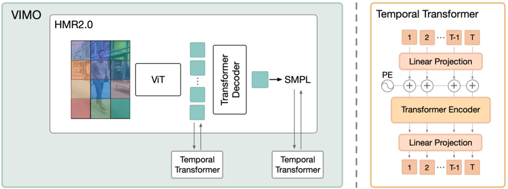
想法：利用大型预训练模型中的丰富知识，进行灵活且可扩展的架构设计，其性能可以通过计算和数据不断提高。
做法：
- 通过添加两个时间transformer，将基于图像的 HMR2.0 转换为视频模型。
- 使用视频数据在原始transformer decoder上进行微调
网络输入预处理
| 输入 | 输出 | 方法 |
|---|---|---|
| tracking | chunks | tracking以人为单位组织数据，但是由于数据可能检测错误或者人物出现消失，检测结果是不连续的。但网络要求输入连续数据。因此根据帧ID切段。 |
| 图像，bbox | cropped image |
Transformer
这两个时间transformer使用相同的encoder only架构.
第一个transfomer在图像域（patch token from ViT）传播时间信息。即，先在每个patch上独立地使用ViT transformer encoder进行编码。再把这个编码合起来，在时间维度上进行增加的transformer。两个transformer合起来，相当于一个ST transformer。
第二个transformer在人体运动域传播时间信息。作者认为，先隐空间学习运动模型再回归器出SMPL参数的做法不很合适，因为该隐空间纠缠了许多其他信息，例如形状、相机和图像特征。相比之下，作者建议回归出SMPL参数之后仅对其中的pose部分使用 Transformer 进行编码和解码。因此，本文直接将这种通用架构应用于 SMPLposes{θt,rt}上，并使用 MoCap 数据进行预训练。
b: batch
t: frame
c: channel，或者dim
| 输入 | 输出 | 方法 |
|---|---|---|
| 图像，[(b,t), c=3, h, w] | feature，[(b,t=16), c=1280, h=16, w=12] | 预训练模型vit_huge 得到的是一个二维特征 |
| bbox的center和scale，focal | bbox_info，[(b,t=16), c=3] | CLIFF (Li et al.) bbox feature 一堆magic number，不清楚含义 |
| bbox_info，[(b,t=16), c=3] | bbox_info，[(b,t=16), c=3, h=16, w=12] | 维度上与feature对齐，便于后面的拼接 |
| feature, bbox_info | feature，[(b,t=16), c=1280+3, h=16, w=12] | feature = torch.cat([feature, bb], dim=1)图像特征与bbox特征拼接到一起。因为feature来自于cropped image，没有人在整个画面中的信息。而bbox表示人在画面中的位置，正好弥补了这一点。 |
| feature，[(b t=16) c=1280+3 h=16 w=12] | feature，[(b h=16 w=12) t=16 c=1280+3] | 要在t维度上做transformer，第二个维度必须是t |
| feature，[(b h=16 w=12) t=16 c=1280+3] | feature，[(b h=16 w=12) t=16 c=1280] | st_module |
| feature，[(b h=16 w=12) t=16 c=1280] | feature，[(b t=16) c=1280+3 h=16 w=12] | temporal_attention模块过完以后，又切回原来的顺序 |
| feature，[(b t=16) c=1280 h=16 w=12] | pred_pose, pred_shape, pred_cam | smpl_head，此模块来来自HMR2.0 |
| pred_pose，[(b,t=16),c=24*6] | pred_pose，[b,t=16,c=24*6] | 为再次进行temporal_attention做准备 |
| bbox_info，[(b,t=16),c=3] | bbox_info，[b,t=16,c=3] | 同样也结合包含图像全局信息的bbox |
| pred_pose，[(b,t=16),c=24*6] | pred_pose，[(b,t=16),c=24*6+3] | pred_pose = torch.cat([pred_pose, bb], dim=2) |
| pred_pose，[(b,t=16),c=24*6+3] | pred_pose，[(b,t=16),c=24*6] | motion_module，也是一个temporal_attention模块 |
| pred_pose，[(b,t=16),c=24*6+3] | pred_pose，[b,t=16,c=24*6+3] |
# 基于transformer的时序模块
class temporal_attention(nn.Module):
def __init__(self, in_dim=1280, out_dim=1280, hdim=512, nlayer=6, nhead=4, residual=False):
super(temporal_attention, self).__init__()
self.hdim = hdim
self.out_dim = out_dim
self.residual = residual
self.l1 = nn.Linear(in_dim, hdim)
self.l2 = nn.Linear(hdim, out_dim)
self.pos_embedding = PositionalEncoding(hdim, dropout=0.1)
TranLayer = nn.TransformerEncoderLayer(d_model=hdim, nhead=nhead, dim_feedforward=1024,
dropout=0.1, activation='gelu')
self.trans = nn.TransformerEncoder(TranLayer, num_layers=nlayer)
# Xavier 初始化是一种常用的权重初始化方法，旨在解决深度神经网络训练过程中的梯度消失和梯度爆炸问题。该方法通过根据网络的输入和输出维度来初始化权重，使得前向传播和反向传播过程中的信号保持相对一致的方差。
nn.init.xavier_uniform_(self.l1.weight, gain=0.01)
nn.init.xavier_uniform_(self.l2.weight, gain=0.01)
def forward(self, x):
x = x.permute(1,0,2) # (b,t,c) -> (t,b,c)
# 在channel维度上做MLP，(t=16,b,c=in_dim) -> (t=16,b,c=hdim)
h = self.l1(x)
# 在t维度上叠加位置编码和drop out
h = self.pos_embedding(h)
# nn.TransformerEncoder，6层transformer encoder layer
h = self.trans(h)
# 在channel维度上做MLP，(t=16,b,c=hdim) -> (t=16,b,c=in_dim)
h = self.l2(h)
# 预测残差还是预测feature
if self.residual:
x = x[..., :self.out_dim] + h
else:
x = h
# (t,b,c) -> (b,t,c)
x = x.permute(1,0,2)
return x
生成最终结果
| 输入 | 输出 | 方法 |
|---|---|---|
| pred_shape | pred_shape | VIMO每一帧都会预测一个shape参数，但是人的真实体型是不会变的，所以都统一到一个体型上 |
| pred | pred shape, pred pose, pred_trans | smpl forward |
| pred_cam，相机运动，来自Masked DROID-SLAM scale | pred_camt，相机运动trans pred_camr，相机运动pose，旋转矩阵形式 | |
| pred_cam, pred | verts | 相机视角 + 世界坐标系下的人物 = 相机坐标系下的人物 |
训练与验证
只开源推断代码，没有开源训练代码
数据集
3DPW [81], Human3.6M [24], and BEDLAM [6]
数据增强
- 旋转、缩放、水平翻转、颜色抖动，对一个训练序列进行统一的增强。
- 遮挡。每一帧独立增强。
Loss
- 2D 投影loss
- 3D 重建loss
- SMPL参数loss [?] 只是动作参数？
- mesh重建loss
有效
- 测了几段视频，发现在重建动作的灵活性和准确性上都优于WHAM。应该 模块的作用。
- Masked DROID-SLAM虽然能预测相机运动，但缺少运动的scale。ZoeDepth利用图像中的语义信息可以得到图像的scale。使得相机的位移信息更准确。
缺陷
- 在运动相机下有效，在静止相机下代码会出错。错误来自Masked DROID-SLAM模块。因为Masked DROID-SLAM需要根据不同视角的视差数据来估计深度。
启发
- scale的估计需要一段视频。可以用于HMR之前的标定阶段。
- 算法推断过程为输入连续的16帧的图像，出第8帧图像对应的motion。为了支持流式推理，改成出第16帧对应的motion，其结果与原结果相差不大。
遗留问题
参考材料
- 开源：https://yufu-wang.github.io/tram4d/
- DROID-SLAM：https://blog.csdn.net/huarzail/article/details/130906160
- torchmin.minimize：https://pytorch-minimize.readthedocs.io/en/latest/api/generated/torchmin.minimize.html
- nn.init.xavier_uniform_：https://blog.csdn.net/AdamCY888/article/details/131269857
- SMPLTransformerDecoderHead：https://caterpillarstudygroup.github.io/ReadPapers/28.html
3D Gaussian Splatting for Real-Time Radiance Field Rendering
| 缩写 | 英文 | 中文 |
|---|---|---|
| SfM | Structure-from-Motion | |
| SH | spherical harmonics | 球谐基 |
| covariance matrix | 协方差矩阵 | |
| Nerf | Neural Radiance Field | 神经辐射场 |
| GS | Gaussian splatting | 高斯溅射 |
核心问题是什么?
现有方法及问题
Nerf方法需要训练和渲染成本高昂的神经网络，而其加速方案会牺牲质量来换取速度。对于无界且完整的场景（而不是孤立的物体）和1080p分辨率渲染，当前没有方法可以实现实时显示速率。
本文方法
高斯溅射是一种表示 3D 场景和渲染新视图的方法，它被认为是 NeRF 类模型的替代品。
这项工作最出名的地方是其高渲染速度。这归功于下面将要介绍的表示本身，以及使用自定义 CUDA 内核定制实现的渲染算法。
首先，从相机校准期间产生的稀疏点开始，用 3D 高斯表示场景，保留连续体积辐射场的所需属性以进行场景优化，同时避免在空白区域中进行不必要的计算；
其次，我们对 3D 高斯进行交错优化/密度控制，特别是优化各向异性协方差以实现场景的准确表示；
第三，我们开发了一种快速可见性感知渲染算法，该算法支持各向异性泼溅，既加速训练又允许实时渲染。
效果
在几个已建立的数据集上展示了最先进的视觉质量和实时渲染。
核心贡献是什么？
- 引入各向异性 3D 高斯作为辐射场的高质量、非结构化表示。
- 3D 高斯属性的优化方法，与自适应密度控制交错，为捕获的场景创建高质量表示。
- 快速、可微的渲染方法对于可见性感知的 GPU，允许各向异性泼溅和快速反向传播，以实现高质量的新颖视图合成。
大致方法是什么？

输入：一组静态场景的图像
- 由 SfM 校准的相应相机，会产生稀疏点云。
- 从SfM点云创建了一组 3D 高斯（第 4 节），由位置（均值）、协方差矩阵和不透明度 𝛼 定义这些高斯。
这允许非常灵活的优化机制。这会产生 3D 场景的相当紧凑的表示，部分原因是高度各向异性的体积片可用于紧凑地表示精细结构。
- 辐射场的方向外观分量（颜色）通过球谐函数 (SH) 表示。
- 通过 3D 高斯参数的一系列优化步骤来创建辐射场表示（第 5 节），即位置、协方差、𝛼 和 SH 系数与高斯密度自适应控制的操作交织在一起。
- 基于图块的光栅化器（效率的关键）（第 6 节），让各向异性图块的𝛼混合，通过快速排序表示可见性顺序。
快速光栅化器还包括通过跟踪累积的 𝛼 值进行快速向后传递，并且对可以接收梯度的高斯数量没有限制。
可微 3D 高斯Splatting
输入：没有法线信息的稀疏 (SfM) 点集
输出：允许高质量新视角合成的场景表示，即一组 3D 高斯。
表示
3D 世界由一组 3D 点表示，实际上有数百万个 3D 点，数量大约为 50 万到 500 万。每个点都是一个 3D 高斯，具有自己独特的参数，这些参数针对每个场景进行拟合，以便该场景的渲染与已知的数据集图像紧密匹配。
每个 3D 高斯的参数如下：
- 均值 μ， 可解释为位置 x、y、z；
- 协方差 Σ；
- 不透明度 σ(𝛼)，应用 sigmoid 函数将参数映射到 [0, 1] 区间；
- 颜色参数，(R、G、B) 的 3 个值或球谐函数 (SH) 系数。
选择3D高斯作为场景表示是因为：
- 具有可微分体积表示的属性
- 非结构化和显式的，以允许非常快速的渲染
- 可以轻松投影到 2D splats，从而实现快速𝛼混合渲染
之前的类似工作使用带法线信息的2D平面圆。但SfM有时是难以估计比较准确的法线信息，因此给这些方法带来的困难。
本文使用的3D高斯，由世界坐标系下的3D协方差矩阵和中心位置来描述。不需要包含法线信息。
协方差矩阵
协方差是各向异性的，这意味着 3D 点可以是沿空间中任意方向旋转和拉伸的椭圆体。需要用 9 个参数来表示协方差矩阵。
这种各向异性协方差的表示（适合优化）允许我们优化 3D 高斯以适应捕获场景中不同形状的几何形状，从而产生相当紧凑的表示。图 3 说明了这种情况。
协方差矩阵是需要被优化的参数之一，但是不能直接优化这样的协方差矩阵。
优化过程中必须保证协方差矩阵是半正定的，但梯度下降的优化方法会破坏协方差矩阵的的半正定性。因此，把协方差矩阵分解为：
$$ \Sigma = RSS^\top R^\top $$
这种因式分解称为协方差矩阵的特征分解，其中：
- S 是一个对角缩放矩阵，具有 3 个缩放参数；
- R 是一个 3x3 旋转矩阵，用 4 个四元数表示。
S和R分别存储和优化。
def strip_symmetric(L):
uncertainty = torch.zeros((L.shape[0], 6), dtype=torch.float, device="cuda")
uncertainty[:, 0] = L[:, 0, 0]
uncertainty[:, 1] = L[:, 0, 1]
uncertainty[:, 2] = L[:, 0, 2]
uncertainty[:, 3] = L[:, 1, 1]
uncertainty[:, 4] = L[:, 1, 2]
uncertainty[:, 5] = L[:, 2, 2]
return uncertainty
def build_scaling_rotation(s, r):
L = torch.zeros((s.shape[0], 3, 3), dtype=torch.float, device="cuda")
R = build_rotation(r)
L[:,0,0] = s[:,0]
L[:,1,1] = s[:,1]
L[:,2,2] = s[:,2]
L = R @ L
return L
# scaling和rotation是优化好的S和R
def build_covariance_from_scaling_rotation(scaling, scaling_modifier, rotation):
# 构造一个包含缩放scale和旋转rotation的变换矩阵
L = build_scaling_rotation(scaling_modifier * scaling, rotation)
actual_covariance = L @ L.transpose(1, 2)
# 由于actual_covariance是对称矩阵，只需要存一半就可以了，参数减少到6
symm = strip_symmetric(actual_covariance)
return symm
渲染时，把缩放和旋转再合成协方差矩阵：
// Forward method for converting scale and rotation properties of each
// Gaussian to a 3D covariance matrix in world space. Also takes care
// of quaternion normalization.
__device__ void computeCov3D(
const glm::vec3 scale, // 表示缩放的三维向量
float mod, // 对应gaussian_renderer/__init__.py中的scaling_modifier
const glm::vec4 rot, // 表示旋转的四元数
float* cov3D) // 结果：三维协方差矩阵
{
// Create scaling matrix
glm::mat3 S = glm::mat3(1.0f);
S[0][0] = mod * scale.x;
S[1][1] = mod * scale.y;
S[2][2] = mod * scale.z;
// Normalize quaternion to get valid rotation
glm::vec4 q = rot;// / glm::length(rot);
float r = q.x;
float x = q.y;
float y = q.z;
float z = q.w;
// Compute rotation matrix from quaternion
glm::mat3 R = glm::mat3(
1.f - 2.f * (y * y + z * z), 2.f * (x * y - r * z), 2.f * (x * z + r * y),
2.f * (x * y + r * z), 1.f - 2.f * (x * x + z * z), 2.f * (y * z - r * x),
2.f * (x * z - r * y), 2.f * (y * z + r * x), 1.f - 2.f * (x * x + y * y)
);
glm::mat3 M = S * R;
// Compute 3D world covariance matrix Sigma
glm::mat3 Sigma = glm::transpose(M) * M;
// Covariance is symmetric, only store upper right
cov3D[0] = Sigma[0][0];
cov3D[1] = Sigma[0][1];
cov3D[2] = Sigma[0][2];
cov3D[3] = Sigma[1][1];
cov3D[4] = Sigma[1][2];
cov3D[5] = Sigma[2][2];
}
颜色参数
颜色参数可以用3个RGB值或一组SH系数来表示。
不需要视角依赖特性时，可以进行简化，选择用 3 个 RGB 值表示颜色。
视角依赖性是一种很好的特性，它可以提高渲染质量，因为它允许模型表示非朗伯效应，例如金属表面的镜面反射。
视角相关的颜色参数，则需要使用SH系数表示颜色。
SH是一组定义在球表面的正交基，每个定义在球面上的函数都可以通过SH来表达。

定义SH基的自由度ℓ_max 内，并假设每种颜色（红色、绿色和蓝色）都是前 ℓ_max 个 SH 函数的线性组合。对于每个 3D 高斯，通过学习其正确的系数，使得当我们从某个方向看这个 3D 点时，得到最接近真实的颜色。
# deg：球协基的个数
# sh：优化出的SH系数
# dirs：相机指向高斯球心的视线方向
def eval_sh(deg, sh, dirs):
"""
Evaluate spherical harmonics at unit directions
using hardcoded SH polynomials.
Works with torch/np/jnp.
... Can be 0 or more batch dimensions.
Args:
deg: int SH deg. Currently, 0-3 supported
sh: jnp.ndarray SH coeffs [..., C, (deg + 1) ** 2]
dirs: jnp.ndarray unit directions [..., 3]
Returns:
[..., C]
"""
assert deg <= 4 and deg >= 0
# 第l层的球协基需要2*i+1个系数，[0,l]层球协基共需要(l+1)**2个系数
coeff = (deg + 1) ** 2
assert sh.shape[-1] >= coeff
# C0,C1,C2,C3,C4是提前定义好的球协基，是定值，不需要被优化
result = C0 * sh[..., 0]
if deg > 0:
x, y, z = dirs[..., 0:1], dirs[..., 1:2], dirs[..., 2:3]
result = (result -
C1 * y * sh[..., 1] +
C1 * z * sh[..., 2] -
C1 * x * sh[..., 3])
if deg > 1:
xx, yy, zz = x * x, y * y, z * z
xy, yz, xz = x * y, y * z, x * z
result = (result +
C2[0] * xy * sh[..., 4] +
C2[1] * yz * sh[..., 5] +
C2[2] * (2.0 * zz - xx - yy) * sh[..., 6] +
C2[3] * xz * sh[..., 7] +
C2[4] * (xx - yy) * sh[..., 8])
if deg > 2:
result = (result +
C3[0] * y * (3 * xx - yy) * sh[..., 9] +
C3[1] * xy * z * sh[..., 10] +
C3[2] * y * (4 * zz - xx - yy)* sh[..., 11] +
C3[3] * z * (2 * zz - 3 * xx - 3 * yy) * sh[..., 12] +
C3[4] * x * (4 * zz - xx - yy) * sh[..., 13] +
C3[5] * z * (xx - yy) * sh[..., 14] +
C3[6] * x * (xx - 3 * yy) * sh[..., 15])
if deg > 3:
result = (result + C4[0] * xy * (xx - yy) * sh[..., 16] +
C4[1] * yz * (3 * xx - yy) * sh[..., 17] +
C4[2] * xy * (7 * zz - 1) * sh[..., 18] +
C4[3] * yz * (7 * zz - 3) * sh[..., 19] +
C4[4] * (zz * (35 * zz - 30) + 3) * sh[..., 20] +
C4[5] * xz * (7 * zz - 3) * sh[..., 21] +
C4[6] * (xx - yy) * (7 * zz - 1) * sh[..., 22] +
C4[7] * xz * (xx - 3 * yy) * sh[..., 23] +
C4[8] * (xx * (xx - 3 * yy) - yy * (3 * xx - yy)) * sh[..., 24])
return result
渲染
一个高斯球对一个像素点的影响
第i个3D高斯球对3D中任意一点p的影响定义如下：

这个方程和多元正态分布的概率密度函数的区别在于，没有协方差归一化项，且使用用不透明度来加权。 高斯的妙处在于每个点都有双重影响。一方面，根据其协方差，每个点实际上代表了空间中接近其均值的有限区域。另一方面，它具有理论上无限的范围，这意味着每个高斯函数都定义在整个 3D 空间中，并且可以针对任何点进行评估。这很棒，因为在优化过程中，它允许梯度从远距离流动。⁴
所有高斯球对一个像素的影响
NeRF 和高斯溅射使用相同的逐点 𝛼 混合的图像形成模型。
| Nerf | 3D GS |
|---|---|
 |  |
Nerf的公式和3D GS的公式几乎完全相同。唯一的区别在于两者之间如何计算 𝛼。在高斯溅射中，每个像素的聚合都是通过投影二维高斯的有序列表的贡献进行的。
这种微小的差异在实践中变得极为重要，并导致渲染速度截然不同。事实上，这是高斯溅射实时性能的基础。
坐标系转换
3D GS公式中的\(f^{2D}\) 是 f(p) 在 2D 上的投影。3D 点及其投影都是多元高斯函数，因此 “3D 高斯函数对 3D 中任意点的影响” 与 “投影的 2D 高斯函数对做任意像素点的影响” 具有相同的公式。唯一的区别是必须使用投影到 2D 中平均值 μ 和协方差 Σ ，这一步称为 EWA splatting⁵ 。
定义相机内参矩阵为K，外参矩阵为W=[R|t]
2D 的均值为：
$$ \mu^{2D} = K((W\mu)/(W\mu)_z) $$
2D的协方差矩阵为：
$$ \Sigma^{2D} = JW\Sigma J^\top W^\top $$
文中提到一种简化方法，可以把协方差矩阵从 3 * 3 简化为 2 * 2。
// Forward version of 2D covariance matrix computation
__device__ float3 computeCov2D(
const float3& mean, // Gaussian中心坐标
float focal_x, // x方向焦距
float focal_y, // y方向焦距
float tan_fovx,
float tan_fovy,
const float* cov3D, // 已经算出来的三维协方差矩阵
const float* viewmatrix) // W2C矩阵
{
// The following models the steps outlined by equations 29
// and 31 in "EWA Splatting" (Zwicker et al., 2002).
// Additionally considers aspect / scaling of viewport.
// Transposes used to account for row-/column-major conventions.
float3 t = transformPoint4x3(mean, viewmatrix);
// W2C矩阵乘Gaussian中心坐标得其在相机坐标系下的坐标
const float limx = 1.3f * tan_fovx;
const float limy = 1.3f * tan_fovy;
const float txtz = t.x / t.z; // Gaussian中心在像平面上的x坐标
const float tytz = t.y / t.z; // Gaussian中心在像平面上的y坐标
t.x = min(limx, max(-limx, txtz)) * t.z;
t.y = min(limy, max(-limy, tytz)) * t.z;
glm::mat3 J = glm::mat3(
focal_x / t.z, 0.0f, -(focal_x * t.x) / (t.z * t.z),
0.0f, focal_y / t.z, -(focal_y * t.y) / (t.z * t.z),
0, 0, 0); // 雅可比矩阵（用泰勒展开近似）
glm::mat3 W = glm::mat3( // W2C矩阵
viewmatrix[0], viewmatrix[4], viewmatrix[8],
viewmatrix[1], viewmatrix[5], viewmatrix[9],
viewmatrix[2], viewmatrix[6], viewmatrix[10]);
glm::mat3 T = W * J;
glm::mat3 Vrk = glm::mat3( // 3D协方差矩阵，是对称阵
cov3D[0], cov3D[1], cov3D[2],
cov3D[1], cov3D[3], cov3D[4],
cov3D[2], cov3D[4], cov3D[5]);
glm::mat3 cov = glm::transpose(T) * glm::transpose(Vrk) * T;
// transpose(J) @ transpose(W) @ Vrk @ W @ J
// Apply low-pass filter: every Gaussian should be at least
// one pixel wide/high. Discard 3rd row and column.
cov[0][0] += 0.3f;
cov[1][1] += 0.3f;
return { float(cov[0][0]), float(cov[0][1]), float(cov[1][1]) };
// 协方差矩阵是对称的，只用存储上三角，故只返回三个数
}
加速
- 对于给定的相机，每个 3D 点的 f(p) 可以预先投影到 2D 中，然后再迭代像素。避免重复投影。
- 没有网络，不需要对图像做逐像素的推理，2D 高斯分布直接混合到图像上。
- 射线经过哪些 3D 点是确定的，不需选择ray sampling策略。
- 在 GPU 上，使用可微分 CUDA 内核的自定义实现，每帧进行一次预处理排序阶段。
使用GPU加速以及为某些操作添加自定义 CUDA 内核，加速渲染过程
筛选
理论上，每个高斯球对所有像素都会有影响。但实际上，在渲染某个像素时，会先过滤出相关的高斯球，并对它们排序，按照深度顺序进行计算。
分组：使用简单的 16x16 像素图块实现分组
排序：按深度对 3D 点进行排序

通过 3D 高斯自适应密度控制进行优化
优化参数：
- 位置 𝑝
对position使用类似于 Plenoxels 的标准指数衰减调度技术。
- 不透明度 𝛼
对 𝛼 使用 sigmoid 激活函数将其限制在 [0 − 1) 范围内并获得平滑梯度
- 协方差 Σ
3D 高斯协方差参数的质量对于表示的紧凑性至关重要，因为可以用少量大的各向异性高斯函数捕获大的均匀区域。
出于类似的原因，对协方差尺度使用指数激活函数。
- 颜色 𝑐 的 SH 系数，或者颜色
这些参数的优化与控制高斯密度的步骤交织在一起，以更好地表示场景。
初始化
初始化是指在训练开始时设置的 3D 点的参数。
对于点位置（均值），作者建议使用由 SfM（运动结构）生成的点云。因为对于任何 3D 重建，无论是使用 GS、NeRF 还是更经典的方法，都必须知道相机矩阵，因此都会需要运行 SfM 来获取这些矩阵。SfM 会产生稀疏点云作为副产品，为什么不将其用于初始化呢？当由于某种原因无法获得点云时，可以使用随机初始化，但可能会损失最终重建质量。
协方差被初始化为各向同性，即半径为 从球体mean开始到相邻点的平均距离，这样 3D 世界就可以被很好地覆盖，没有“洞”。
def create_from_pcd(self, pcd : BasicPointCloud, spatial_lr_scale : float):
self.spatial_lr_scale = spatial_lr_scale
# 位置初始化
fused_point_cloud = torch.tensor(np.asarray(pcd.points)).float().cuda()
# 颜色初始化
fused_color = RGB2SH(torch.tensor(np.asarray(pcd.colors)).float().cuda())
features = torch.zeros((fused_color.shape[0], 3, (self.max_sh_degree + 1) ** 2)).float().cuda()
features[:, :3, 0 ] = fused_color
features[:, 3:, 1:] = 0.0
print("Number of points at initialisation : ", fused_point_cloud.shape[0])
# 协方差scale初始化
dist2 = torch.clamp_min(distCUDA2(torch.from_numpy(np.asarray(pcd.points)).float().cuda()), 0.0000001)
scales = torch.log(torch.sqrt(dist2))[...,None].repeat(1, 3)
# 协方法rotation初始化
rots = torch.zeros((fused_point_cloud.shape[0], 4), device="cuda")
rots[:, 0] = 1
# 不透明度初始化
opacities = inverse_sigmoid(0.1 * torch.ones((fused_point_cloud.shape[0], 1), dtype=torch.float, device="cuda"))
self._xyz = nn.Parameter(fused_point_cloud.requires_grad_(True))
self._features_dc = nn.Parameter(features[:,:,0:1].transpose(1, 2).contiguous().requires_grad_(True))
self._features_rest = nn.Parameter(features[:,:,1:].transpose(1, 2).contiguous().requires_grad_(True))
self._scaling = nn.Parameter(scales.requires_grad_(True))
self._rotation = nn.Parameter(rots.requires_grad_(True))
self._opacity = nn.Parameter(opacities.requires_grad_(True))
self.max_radii2D = torch.zeros((self.get_xyz.shape[0]), device="cuda")
优化
- 地面真实视图和当前渲染之间的 L1 Loss
def l1_loss(network_output, gt):
return torch.abs((network_output - gt)).mean()
- D-SSIM：结构差异指数测量
def _ssim(img1, img2, window, window_size, channel, size_average=True):
mu1 = F.conv2d(img1, window, padding=window_size // 2, groups=channel)
mu2 = F.conv2d(img2, window, padding=window_size // 2, groups=channel)
mu1_sq = mu1.pow(2)
mu2_sq = mu2.pow(2)
mu1_mu2 = mu1 * mu2
sigma1_sq = F.conv2d(img1 * img1, window, padding=window_size // 2, groups=channel) - mu1_sq
sigma2_sq = F.conv2d(img2 * img2, window, padding=window_size // 2, groups=channel) - mu2_sq
sigma12 = F.conv2d(img1 * img2, window, padding=window_size // 2, groups=channel) - mu1_mu2
C1 = 0.01 ** 2
C2 = 0.03 ** 2
ssim_map = ((2 * mu1_mu2 + C1) * (2 * sigma12 + C2)) / ((mu1_sq + mu2_sq + C1) * (sigma1_sq + sigma2_sq + C2))
if size_average:
return ssim_map.mean()
else:
return ssim_map.mean(1).mean(1).mean(1)
高斯自适应控制
目的：解决重建不足和过度重建的问题
原因：SGD 本身只能调整现有的点。但在完全没有点（重建不足）或点太多（过度重建）的区域中，它很难找到好的参数。这时就需要自适应致密化。
频率：在训练期间偶尔启动一次，比如每 100 个 SGD 步
方法：，分割具有大梯度的点（图 8）并删除已经收敛到非常低的 α 值的点（如果一个点是如此透明，为什么要保留它？）。

具体策略为：
- 当检测到视图空间位置梯度较大时，增加高斯密度
对于重建不足或过度重建，这两者都有很大的视图空间位置梯度。直观上，这可能是因为它们对应于尚未很好重建的区域，并且优化尝试移动高斯来纠正这一点。
- 对于重建区域中的小高斯，如果需要创建的新的几何形状，最好通过简单地创建相同大小的副本并将其沿位置梯度的方向移动来克隆高斯。
def densify_and_clone(self, grads, grad_threshold, scene_extent):
# Extract points that satisfy the gradient condition
selected_pts_mask = torch.where(torch.norm(grads, dim=-1) >= grad_threshold, True, False)
selected_pts_mask = torch.logical_and(selected_pts_mask,
torch.max(self.get_scaling, dim=1).values <= self.percent_dense*scene_extent)
# 提取出大于阈值`grad_threshold`且缩放参数较小（小于self.percent_dense * scene_extent）的Gaussians，在下面进行克隆
new_xyz = self._xyz[selected_pts_mask]
new_features_dc = self._features_dc[selected_pts_mask]
new_features_rest = self._features_rest[selected_pts_mask]
new_opacities = self._opacity[selected_pts_mask]
new_scaling = self._scaling[selected_pts_mask]
new_rotation = self._rotation[selected_pts_mask]
self.densification_postfix(new_xyz, new_features_dc, new_features_rest, new_opacities, new_scaling, new_rotation)
- 有高方差的区域中的大高斯需要被分割成更小的高斯。我们用两个新的高斯函数替换这些高斯函数，并将它们的尺度除以我们通过实验确定的因子 𝜙 = 1.6。我们还通过使用原始 3D 高斯作为 PDF 进行采样来初始化它们的位置。
克隆高斯与分割高斯的区别在于，前者会增加系统总体积和高斯数量，而后者在保留总体积但增加高斯数量。
def densify_and_split(self, grads, grad_threshold, scene_extent, N=2):
n_init_points = self.get_xyz.shape[0]
# Extract points that satisfy the gradient condition
padded_grad = torch.zeros((n_init_points), device="cuda")
padded_grad[:grads.shape[0]] = grads.squeeze()
selected_pts_mask = torch.where(padded_grad >= grad_threshold, True, False)
selected_pts_mask = torch.logical_and(selected_pts_mask,
torch.max(self.get_scaling, dim=1).values > self.percent_dense*scene_extent)
'''
被分裂的Gaussians满足两个条件：
1. （平均）梯度过大；
2. 在某个方向的最大缩放大于一个阈值。
参照论文5.2节“On the other hand...”一段，大Gaussian被分裂成两个小Gaussians，
其放缩被除以φ=1.6，且位置是以原先的大Gaussian作为概率密度函数进行采样的。
'''
stds = self.get_scaling[selected_pts_mask].repeat(N,1)
means = torch.zeros((stds.size(0), 3),device="cuda")
samples = torch.normal(mean=means, std=stds)
rots = build_rotation(self._rotation[selected_pts_mask]).repeat(N,1,1)
new_xyz = torch.bmm(rots, samples.unsqueeze(-1)).squeeze(-1) + self.get_xyz[selected_pts_mask].repeat(N, 1)
# 算出随机采样出来的新坐标
# bmm: batch matrix-matrix product
new_scaling = self.scaling_inverse_activation(self.get_scaling[selected_pts_mask].repeat(N,1) / (0.8*N))
new_rotation = self._rotation[selected_pts_mask].repeat(N,1)
new_features_dc = self._features_dc[selected_pts_mask].repeat(N,1,1)
new_features_rest = self._features_rest[selected_pts_mask].repeat(N,1,1)
new_opacity = self._opacity[selected_pts_mask].repeat(N,1)
self.densification_postfix(new_xyz, new_features_dc, new_features_rest, new_opacity, new_scaling, new_rotation)
prune_filter = torch.cat((selected_pts_mask, torch.zeros(N * selected_pts_mask.sum(), device="cuda", dtype=bool)))
self.prune_points(prune_filter)
- 与其他体积表示类似，优化结果可能被靠近摄像机的浮动体的干扰。在高斯沉浸中，这种干扰会导致高斯密度的不合理增加。
缓和高斯数量增加的有效方法是:
(1) 每隔 𝑁 = 3000 迭代将 𝛼 值设置为接近于零。然后，优化会在需要时增加高斯函数的 𝛼，同时删除 𝛼 小于 𝜖𝛼 的高斯函数，如上所述。高斯可能会缩小或增长，并且与其他高斯有相当大的重叠
(2) 定期删除透明的或者非常大的高斯。
该策略可以总体上很好地控制高斯总数。
# 接下来移除一些Gaussians，它们满足下列要求中的一个：
# 1. 接近透明（不透明度小于min_opacity）
# 2. 在某个相机视野里出现过的最大2D半径大于屏幕（像平面）大小
# 3. 在某个方向的最大缩放大于0.1 * extent（也就是说很长的长条形也是会被移除的）
prune_mask = (self.get_opacity < min_opacity).squeeze()
if max_screen_size:
big_points_vs = self.max_radii2D > max_screen_size # vs = view space?
big_points_ws = self.get_scaling.max(dim=1).values > 0.1 * extent
prune_mask = torch.logical_or(torch.logical_or(prune_mask, big_points_vs), big_points_ws) # ws = world space?
self.prune_points(prune_mask)
高斯快速可微光栅化器
目标：
对所有高斯进行快速整体渲染、快速排序，近似 𝛼 混合（包括各向异性 splat），而不需要限制高斯的数量。
本文为高斯图设计了一个基于图块的光栅化器，其特点为：
- 一次对整个图像的基元进行预排序
- 允许在任意数量的混合高斯上进行有效的反向传播，并且（光栅化器的）附加内存消耗低，每个像素只需要恒定的开销。
- 光栅化pipeline是完全可微分的
- 考虑到 2D 投影（第 4 节），光栅化器可以对各向异性 splats 进行光栅化。
具体步骤为：
- 将屏幕分割成 16×16 块
- 根据视锥体和每个块剔除 3D 高斯。具体来说，我们只保留与视锥体相交的置信区间为 99% 的高斯分布。此外，我们使用保护带来简单地拒绝极端位置处的高斯分布（即那些均值接近近平面且远离视锥体的位置），因为它们的投影 2D 协方差将不稳定。
- 根据每个高斯重叠的图块数量来实例化它们，并为每个实例分配一个结合了视图空间深度和图块 ID 的键。
- 使用单个快速 GPU 基数排序根据这些键对高斯进行排序 [Merrill 和 Grimshaw 2010]。请注意，没有额外的每像素点排序，混合是基于此初始排序执行的。因此， 𝛼 混合在某些情况下可能是近似的。然而，当图块接近单个像素的大小时，这些近似值变得可以忽略不计。我们发现这种方式极大地增强了训练和渲染性能，而不会在融合场景中产生可见的伪影。
- 通过识别排序后深度最大和最小的高斯来为每个图块生成一个列表。
- 对于光栅化，我们为每个图块启动一个线程块。每个线程：
（1）首先协作地将高斯数据包加载到共享内存中。
（2）然后对于给定的像素，通过从前到后遍历列表来累积颜色和𝛼值，从而最大化数据加载/共享和处理的并行性增益。
（3）当我们达到像素中的目标饱和度 𝛼 时，相应的线程就会停止。
每隔一段时间，就会查询图块中的线程，并且当所有像素都饱和时（即 𝛼 变为 1），整个图块的处理就会终止。
附录 C 中给出了排序的详细信息和总体光栅化方法的高级概述。
实现
训练
def training(dataset, opt, pipe, testing_iterations, saving_iterations, checkpoint_iterations, checkpoint, debug_from):
first_iter = 0
tb_writer = prepare_output_and_logger(dataset)
gaussians = GaussianModel(dataset.sh_degree)
scene = Scene(dataset, gaussians)
gaussians.training_setup(opt)
if checkpoint:
(model_params, first_iter) = torch.load(checkpoint)
gaussians.restore(model_params, opt)
bg_color = [1, 1, 1] if dataset.white_background else [0, 0, 0]
background = torch.tensor(bg_color, dtype=torch.float32, device="cuda")
iter_start = torch.cuda.Event(enable_timing = True)
iter_end = torch.cuda.Event(enable_timing = True)
viewpoint_stack = None
ema_loss_for_log = 0.0
progress_bar = tqdm(range(first_iter, opt.iterations), desc="Training progress")
first_iter += 1
for iteration in range(first_iter, opt.iterations + 1):
iter_start.record()
gaussians.update_learning_rate(iteration)
# Every 1000 its we increase the levels of SH up to a maximum degree
if iteration % 1000 == 0:
gaussians.oneupSHdegree()
# Pick a random Camera
if not viewpoint_stack:
viewpoint_stack = scene.getTrainCameras().copy()
viewpoint_cam = viewpoint_stack.pop(randint(0, len(viewpoint_stack)-1))
# Render
if (iteration - 1) == debug_from:
pipe.debug = True
bg = torch.rand((3), device="cuda") if opt.random_background else background
render_pkg = render(viewpoint_cam, gaussians, pipe, bg)
image, viewspace_point_tensor, visibility_filter, radii = render_pkg["render"], render_pkg["viewspace_points"], render_pkg["visibility_filter"], render_pkg["radii"]
# Loss
gt_image = viewpoint_cam.original_image.cuda()
Ll1 = l1_loss(image, gt_image)
loss = (1.0 - opt.lambda_dssim) * Ll1 + opt.lambda_dssim * (1.0 - ssim(image, gt_image))
loss.backward()
iter_end.record()
with torch.no_grad():
# Log and save
training_report(tb_writer, iteration, Ll1, loss, l1_loss, iter_start.elapsed_time(iter_end), testing_iterations, scene, render, (pipe, background))
if (iteration in saving_iterations):
print("\n[ITER {}] Saving Gaussians".format(iteration))
scene.save(iteration)
# Densification
if iteration < opt.densify_until_iter:
# Keep track of max radii in image-space for pruning
gaussians.max_radii2D[visibility_filter] = torch.max(gaussians.max_radii2D[visibility_filter], radii[visibility_filter])
gaussians.add_densification_stats(viewspace_point_tensor, visibility_filter)
if iteration > opt.densify_from_iter and iteration % opt.densification_interval == 0:
size_threshold = 20 if iteration > opt.opacity_reset_interval else None
gaussians.densify_and_prune(opt.densify_grad_threshold, 0.005, scene.cameras_extent, size_threshold)
if iteration % opt.opacity_reset_interval == 0 or (dataset.white_background and iteration == opt.densify_from_iter):
gaussians.reset_opacity()
# Optimizer step
if iteration < opt.iterations:
gaussians.optimizer.step()
gaussians.optimizer.zero_grad(set_to_none = True)
if (iteration in checkpoint_iterations):
print("\n[ITER {}] Saving Checkpoint".format(iteration))
torch.save((gaussians.capture(), iteration), scene.model_path + "/chkpnt" + str(iteration) + ".pth")
推断
相机
3D是在世界坐标系下构建的，设置好相机的内参和外参后，需要把所有世界坐标系下的数据转换到相机坐标系下，并且投影到屏幕上。
以下是根据相机的内参外参计算坐标系转换矩阵和投影矩阵的过程。
class Camera(nn.Module):
def __init__(self, colmap_id, R, T, FoVx, FoVy, image, gt_alpha_mask,
image_name, uid,
trans=np.array([0.0, 0.0, 0.0]), scale=1.0, data_device = "cuda"
):
super(Camera, self).__init__()
self.uid = uid
self.colmap_id = colmap_id
self.R = R # 相机在世界坐标系下的旋转矩阵
self.T = T # 相机在相机坐标系下的位置。（相机坐标系的原点与世界坐标系相同，只是相差了一个旋转）
self.FoVx = FoVx # x方向视场角
self.FoVy = FoVy # y方向视场角
self.image_name = image_name
try:
self.data_device = torch.device(data_device)
except Exception as e:
print(e)
print(f"[Warning] Custom device {data_device} failed, fallback to default cuda device" )
self.data_device = torch.device("cuda")
self.original_image = image.clamp(0.0, 1.0).to(self.data_device) # 原始图像
self.image_width = self.original_image.shape[2] # 图像宽度
self.image_height = self.original_image.shape[1] # 图像高度
if gt_alpha_mask is not None:
self.original_image *= gt_alpha_mask.to(self.data_device)
else:
self.original_image *= torch.ones((1, self.image_height, self.image_width), device=self.data_device)
# 距离相机平面znear和zfar之间且在视锥内的物体才会被渲染
self.zfar = 100.0 # 最远能看到多远
self.znear = 0.01 # 最近能看到多近
self.trans = trans # 相机中心的平移
self.scale = scale # 相机中心坐标的缩放
# world_2_camera = [[R,T],[0,1]]，world_view_transform是world_2_camera的转置
self.world_view_transform = torch.tensor(getWorld2View2(R, T, trans, scale)).transpose(0, 1).cuda() # 世界到相机坐标系的变换矩阵，4×4
# projection matrix的定义见：
# https://caterpillarstudygroup.github.io/GAMES101_mdbook/MVP/OrthographicProjection.html
# https://caterpillarstudygroup.github.io/GAMES101_mdbook/MVP/PerspectiveProjection.html
# 此处的projection_matrix也是真实projection matrix的转置
self.projection_matrix = getProjectionMatrix(znear=self.znear, zfar=self.zfar, fovX=self.FoVx, fovY=self.FoVy).transpose(0,1).cuda() # 投影矩阵
# 正确的计算公式为：mvp = projection * world_2_camera
# 但full_proj_transform是mvp的转置，所以是world_view_transform * projection_matrix
self.full_proj_transform = (self.world_view_transform.unsqueeze(0).bmm(self.projection_matrix.unsqueeze(0))).squeeze(0) # 从世界坐标系到图像的变换矩阵
# 上面的T是相机在相机坐标系下的位置，此处的camera center是相机在世界坐标系下的位置。
self.camera_center = self.world_view_transform.inverse()[3, :3] # 相机在世界坐标系下的坐标
python渲染接口
viewmatrix和projmatrix都必须传入原始矩阵的逆矩阵，因此python的矩阵存储是行优化的，C++的矩阵存储是列优先的。所以同时的矩阵内存数据，在python里和在c++里是互逆的关系。
def render(viewpoint_camera, pc : GaussianModel, pipe, bg_color : torch.Tensor, scaling_modifier = 1.0, override_color = None):
"""
Render the scene.
viewpoint_camera: FOV，画布大小、相机位置、变换矩阵
pc: 用于获取高斯球的属性
pipe：一些配置
Background tensor (bg_color) must be on GPU!
"""
# Create zero tensor. We will use it to make pytorch return gradients of the 2D (screen-space) means
screenspace_points = torch.zeros_like(pc.get_xyz, dtype=pc.get_xyz.dtype, requires_grad=True, device="cuda") + 0
try:
screenspace_points.retain_grad()
except:
pass
# Set up rasterization configuration
tanfovx = math.tan(viewpoint_camera.FoVx * 0.5)
tanfovy = math.tan(viewpoint_camera.FoVy * 0.5)
raster_settings = GaussianRasterizationSettings(
image_height=int(viewpoint_camera.image_height),
image_width=int(viewpoint_camera.image_width),
tanfovx=tanfovx,
tanfovy=tanfovy,
bg=bg_color,
scale_modifier=scaling_modifier,
viewmatrix=viewpoint_camera.world_view_transform, # world to camera
projmatrix=viewpoint_camera.full_proj_transform, # mvp
sh_degree=pc.active_sh_degree,
campos=viewpoint_camera.camera_center, # camera position
prefiltered=False,
debug=pipe.debug
)
rasterizer = GaussianRasterizer(raster_settings=raster_settings)
means3D = pc.get_xyz
means2D = screenspace_points
opacity = pc.get_opacity
# If precomputed 3d covariance is provided, use it. If not, then it will be computed from
# scaling / rotation by the rasterizer.
scales = None
rotations = None
cov3D_precomp = None
if pipe.compute_cov3D_python:
cov3D_precomp = pc.get_covariance(scaling_modifier)
else:
scales = pc.get_scaling
rotations = pc.get_rotation
# If precomputed colors are provided, use them. Otherwise, if it is desired to precompute colors
# from SHs in Python, do it. If not, then SH -> RGB conversion will be done by rasterizer.
shs = None
colors_precomp = None
# 没有预制的color，就计算过color
if override_color is None:
# 如果预测的是SH的系数，则根据SH计算color
if pipe.convert_SHs_python:
shs_view = pc.get_features.transpose(1, 2).view(-1, 3, (pc.max_sh_degree+1)**2)
dir_pp = (pc.get_xyz - viewpoint_camera.camera_center.repeat(pc.get_features.shape[0], 1))
dir_pp_normalized = dir_pp/dir_pp.norm(dim=1, keepdim=True)
sh2rgb = eval_sh(pc.active_sh_degree, shs_view, dir_pp_normalized)
colors_precomp = torch.clamp_min(sh2rgb + 0.5, 0.0)
# 或者直接预测color
else:
shs = pc.get_features
else:
colors_precomp = override_color
# Rasterize visible Gaussians to image, obtain their radii (on screen).
rendered_image, radii = rasterizer(
means3D = means3D,
means2D = means2D,
shs = shs,
colors_precomp = colors_precomp,
opacities = opacity,
scales = scales,
rotations = rotations,
cov3D_precomp = cov3D_precomp)
# Those Gaussians that were frustum culled or had a radius of 0 were not visible.
# They will be excluded from value updates used in the splitting criteria.
return {"render": rendered_image,
"viewspace_points": screenspace_points,
"visibility_filter" : radii > 0,
"radii": radii}
C++渲染接口

// Forward rendering procedure for differentiable rasterization
// of Gaussians.
int CudaRasterizer::Rasterizer::forward(
std::function<char* (size_t)> geometryBuffer,
std::function<char* (size_t)> binningBuffer,
std::function<char* (size_t)> imageBuffer,
/*
上面的三个参数是用于分配缓冲区的函数，
在submodules/diff-gaussian-rasterization/rasterize_points.cu中定义
*/
const int P, // Gaussian的数量
int D, // 对应于GaussianModel.active_sh_degree，是球谐度数（本文参考的学习笔记在这里是错误的）
int M, // RGB三通道的球谐傅里叶系数个数，应等于3 × (D + 1)²（本文参考的学习笔记在这里也是错误的）
const float* background,
const int width, int height, // 图片宽高
const float* means3D, // Gaussians的中心坐标
const float* shs, // 球谐系数
const float* colors_precomp, // 预先计算的RGB颜色
const float* opacities, // 不透明度
const float* scales, // 缩放
const float scale_modifier, // 缩放的修正项
const float* rotations, // 旋转
const float* cov3D_precomp, // 预先计算的3维协方差矩阵
const float* viewmatrix, // W2C矩阵
const float* projmatrix, // 投影矩阵
const float* cam_pos, // 相机坐标
const float tan_fovx, float tan_fovy, // 视场角一半的正切值
const bool prefiltered,
float* out_color, // 输出的颜色
int* radii, // 各Gaussian在像平面上用3σ原则截取后的半径
bool debug)
{
const float focal_y = height / (2.0f * tan_fovy); // y方向的焦距
const float focal_x = width / (2.0f * tan_fovx); // x方向的焦距
/*
注意tan_fov = tan(fov / 2) （见上面的render函数）。
而tan(fov / 2)就是图像宽/高的一半与焦距之比。
以x方向为例，tan(fovx / 2) = width / 2 / focal_x，
故focal_x = width / (2 * tan(fovx / 2)) = width / (2 * tan_fovx)。
*/
// 下面初始化一些缓冲区
size_t chunk_size = required<GeometryState>(P); // GeometryState占据空间的大小
char* chunkptr = geometryBuffer(chunk_size);
GeometryState geomState = GeometryState::fromChunk(chunkptr, P);
if (radii == nullptr)
{
radii = geomState.internal_radii;
}
dim3 tile_grid((width + BLOCK_X - 1) / BLOCK_X, (height + BLOCK_Y - 1) / BLOCK_Y, 1);
// BLOCK_X = BLOCK_Y = 16，准备分解成16×16的tiles。
// 之所以不能分解成更大的tiles，是因为对于同一张图片的离得较远的像素点而言
// Gaussian按深度排序的结果可能是不同的。
// （想象一下两个Gaussians离像平面很近，一个靠近图像左边缘，一个靠近右边缘）
// dim3是CUDA定义的含义x,y,z三个成员的三维unsigned int向量类。
// tile_grid就是x和y方向上tile的个数。
dim3 block(BLOCK_X, BLOCK_Y, 1);
// Dynamically resize image-based auxiliary buffers during training
size_t img_chunk_size = required<ImageState>(width * height);
char* img_chunkptr = imageBuffer(img_chunk_size);
ImageState imgState = ImageState::fromChunk(img_chunkptr, width * height);
if (NUM_CHANNELS != 3 && colors_precomp == nullptr)
{
throw std::runtime_error("For non-RGB, provide precomputed Gaussian colors!");
}
// Run preprocessing per-Gaussian (transformation, bounding, conversion of SHs to RGB)
CHECK_CUDA(FORWARD::preprocess(
P, D, M,
means3D,
(glm::vec3*)scales,
scale_modifier,
(glm::vec4*)rotations,
opacities,
shs,
geomState.clamped,
cov3D_precomp,
colors_precomp,
viewmatrix, projmatrix,
(glm::vec3*)cam_pos,
width, height,
focal_x, focal_y,
tan_fovx, tan_fovy,
radii,
geomState.means2D, // Gaussian投影到像平面上的中心坐标
geomState.depths, // Gaussian的深度
geomState.cov3D, // 三维协方差矩阵
geomState.rgb, // 颜色
geomState.conic_opacity, // 椭圆二次型的矩阵和不透明度的打包向量
tile_grid, //
geomState.tiles_touched,
prefiltered
), debug) // 预处理，主要涉及把3D的Gaussian投影到2D
// Compute prefix sum over full list of touched tile counts by Gaussians
// E.g., [2, 3, 0, 2, 1] -> [2, 5, 5, 7, 8]
CHECK_CUDA(cub::DeviceScan::InclusiveSum(geomState.scanning_space, geomState.scan_size, geomState.tiles_touched, geomState.point_offsets, P), debug)
// 这步是为duplicateWithKeys做准备
// （计算出每个Gaussian对应的keys和values在数组中存储的起始位置）
// Retrieve total number of Gaussian instances to launch and resize aux buffers
int num_rendered;
CHECK_CUDA(cudaMemcpy(&num_rendered, geomState.point_offsets + P - 1, sizeof(int), cudaMemcpyDeviceToHost), debug); // 东西塞到GPU里面去
size_t binning_chunk_size = required<BinningState>(num_rendered);
char* binning_chunkptr = binningBuffer(binning_chunk_size);
BinningState binningState = BinningState::fromChunk(binning_chunkptr, num_rendered);
// For each instance to be rendered, produce adequate [ tile | depth ] key
// and corresponding dublicated Gaussian indices to be sorted
duplicateWithKeys << <(P + 255) / 256, 256 >> > (
P,
geomState.means2D,
geomState.depths,
geomState.point_offsets,
binningState.point_list_keys_unsorted,
binningState.point_list_unsorted,
radii,
tile_grid) // 生成排序所用的keys和values
CHECK_CUDA(, debug)
int bit = getHigherMsb(tile_grid.x * tile_grid.y);
// Sort complete list of (duplicated) Gaussian indices by keys
CHECK_CUDA(cub::DeviceRadixSort::SortPairs(
binningState.list_sorting_space,
binningState.sorting_size,
binningState.point_list_keys_unsorted, binningState.point_list_keys,
binningState.point_list_unsorted, binningState.point_list,
num_rendered, 0, 32 + bit), debug)
// 进行排序，按keys排序：每个tile对应的Gaussians按深度放在一起；value是Gaussian的ID
CHECK_CUDA(cudaMemset(imgState.ranges, 0, tile_grid.x * tile_grid.y * sizeof(uint2)), debug);
// Identify start and end of per-tile workloads in sorted list
if (num_rendered > 0)
identifyTileRanges << <(num_rendered + 255) / 256, 256 >> > (
num_rendered,
binningState.point_list_keys,
imgState.ranges); // 计算每个tile对应排序过的数组中的哪一部分
CHECK_CUDA(, debug)
// Let each tile blend its range of Gaussians independently in parallel
const float* feature_ptr = colors_precomp != nullptr ? colors_precomp : geomState.rgb;
CHECK_CUDA(FORWARD::render(
tile_grid, block, // block: 每个tile的大小
imgState.ranges,
binningState.point_list,
width, height,
geomState.means2D,
feature_ptr,
geomState.conic_opacity,
imgState.accum_alpha,
imgState.n_contrib,
background,
out_color), debug) // 最后，进行渲染
return num_rendered;
}
有效
局限性
- 在视角不可见区域有伪影。解决方法：通过规则剔除这些伪影。
- 简单的可见性算法，可能导致高斯突然切换深度/混合顺序。解决方法：可以通过抗锯齿来解决。
- 没有对我们的优化应用任何正则化；解决方法：加入正则化将有助于处理看不见的区域和弹出的伪影。
- 一次只能渲染一张图像，不能批量进行。
验证
启发
遗留问题
参考材料
- https://towardsdatascience.com/a-comprehensive-overview-of-gaussian-splatting-e7d570081362
- https://caterpillarstudygroup.github.io/ImportantArticles/3D_Gaussian_Splatting.html
- 源码解读：https://blog.csdn.net/qaqwqaqwq/article/details/136837906
Decoupling Human and Camera Motion from Videos in the Wild
核心问题是什么?
要解决的问题
从in the wild视频重建人的全局运动轨迹。
现有方法
- 大多数现有方法并不对相机运动进行建模；
- 依赖背景像素来推断 3D 人体运动的方法通常需要全场景重建，这对于in the wild视频通常是不可能的。
本文方法
即使现有的 SLAM 系统无法恢复准确的场景重建，背景像素运动仍然提供足够的信号来约束相机运动。 我们的优化方法将相机和人体运动解耦，这使我们能够将人们放置在同一个世界坐标系中。
效果
我们表明，相对相机估计以及数据驱动的人体运动先验可以解决场景尺度模糊性并恢复全局人体轨迹。我们的方法可以在具有挑战性的野外视频（例如 PoseTrack）中稳健地恢复人们的全局 3D 轨迹。我们在 3D 人体数据集 Egobody 上量化了对现有方法的改进。我们进一步证明，恢复的相机比例允许我们在共享坐标系中推理多人的运动，从而提高 PoseTrack 中下游跟踪的性能。
核心贡献是什么？
提出了一种对摄像机运动进行建模的方法，以从野外视频中恢复现实世界中的 3D 人体运动
大致方法是什么？
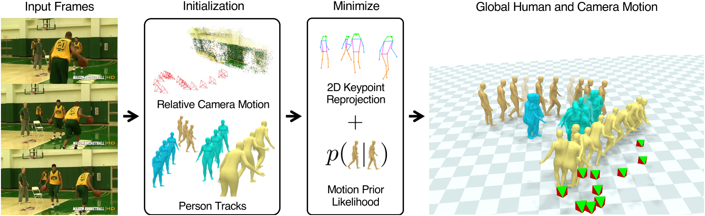
给定输入 RGB 视频，
- 使用 SLAM 系统根据静态场景的像素运动估计帧之间的相对相机运动 [58]。
首先，即使场景视差不足以进行准确的场景重建，它仍然允许对相机运动进行合理的估计
-
使用 3D 人体跟踪系统估计所有检测到的人的identity和身体姿势[46]。
-
使用1和2来初始化共享世界坐标系中人类和相机的轨迹。
人体可以以多种方式在世界上真实地移动。学习的先验很好地捕捉了现实人类运动的这个空间。
- 在多个阶段优化这些全局轨迹，使得视频中的 2D 观察结果和人类如何在世界中移动的先验知识保持一致 [48]。
3.1节中，我们描述了如何在世界坐标系中初始化多人轨迹和摄像机。在第 3.2 节中，我们描述了世界轨迹的平滑步骤，以热启动我们的联合优化问题。最后在 3.3 节中，我们描述了使用人体运动先验对轨迹和相机比例进行全面优化。
每一帧的特征表示
| global orientation | 3 | |
| body pose | 22 * 3 | |
| shape | 16 | |
| root translation | 3 |
stage 1：在世界坐标系中初始化多人轨迹和摄像机
3D 人体跟踪
- 输出
每个人的pose和shape。
其中：
pose估计上逐帧进行的，且为相机坐标系下的pose。
shape是每个人独立且所有帧统一的。
- 方法
PHALP(《Tracking People by Predicting 3D Appearance, Location & Pose》)
估计相机运动
- 输出：
每一帧中相机坐标系在世界坐标系下的rotation和translation。
- 方法：
《DROID-SLAM: Deep Visual SLAM for Monocular, Stereo, and RGB-D Cameras》，使用静态场景的像素运动中的信息来计算
但相机运动的scale是不确定的，需要结合人物运动信息（human motion prior）来得到这个scale。
优化世界坐标系下的人物位姿
- 用PHALP的结果初始化人物的shape和（相对于root的）pose
- 用camera rotation + root rotation初始化人的global orientation
- 用camera translation + root translation初始化人的global translation
- 初始化camera scale为1
基于以上信息（人的shape，pose，global orientation, global translation），可以使用LBS计算出每一帧中每个关节的global position。
-
优化目标：
关节的3D global position投影回到相机坐标系中的2在平面上，应于检测出的2D 关键点重合。 -
优化参数：
global orientation, global translation
这是个欠约束问题，优化所有信息会陷入local optima。
Stage 2：世界坐标系下的轨迹平滑
人在相机坐标系下的位移，是人在世界坐标系下的位移与相机在世界坐标系下的位置二者共同作用的结果。
要完全消除相机位移的影响，需要引入人物运动先验。但这件事在stage 3中完成。此时先不考虑。
此时，只是对Stage 2的结果做一些平滑。
- 优化目标：
- Stage 1中的优化目标
- shape参数不要太大
- joint position（世界坐标系下）平滑
- joint rotation（用VPoser编码到隐空间）平滑
- 优化参数：
- camera scale
- human shape
- human pose（相对于root）
Stage 3：使用人体运动先验对轨迹和相机比例进行全面优化
运动先验
使用HuMoR作为运动先验。
- 以HuMoR的方式表示动作，得到st序列
- 使用HuMoR Encoder根据st序列计算出转称序列zt
- 使用HuMoR Decoder根据\(s_t{t-1}\)和zt计算也st，得到另一个st序列
- HuMoR Decoder还会输出预测的触地信息c和地面高度g
- 优化目标
| CVAE | z产生的先验概率尽量大，即根据x0和序列z生成每一帧xt之后，再计算每一帧会产生这个z序列的先验概率 | |
| skate | 当检测到脚步触地时，脚应该不动 | |
| con | 当检测到脚步触地时，脚的高度应低于某个阈值 |
- 优化参数
initial state s0
camera scale
转移latent code z
- 优化方法
逐步增加HuMoR中的T的范围。
实际上，loss CVAE的权重非常小。怀疑这个约束的重要性。
有效
- 3D人体跟踪的结果受到遮挡等原因而无效时，此算法使用的motion prior可以很好地处理这种情况。
- 多人场景中，由于人物可能会不同时地出现或消失，是多人检测的难点。本文方法也能很好的处理。
缺陷
- 本文只是消除相机运动对人物轨迹的影响，但并没有重建相机运动轨迹。
- 由于运动模型是从室内mocap数据中学习的，因此预测的位移并不能推广到现实世界的复杂性。因此，他们很难恢复复杂且长距离的轨迹(from 18)
验证
启发
遗留问题
参考材料
HMP: Hand Motion Priors for Pose and Shape Estimation from Video
核心问题是什么?
难点
- 3D 手部姿势估计在难点在于手部的高度关节、频繁遮挡、自遮挡和快速运动而变得复杂。
- 虽然视频信息有助于解决上述问题，但现有的基于视频的 3D 手部数据集(例如HO3D)不足以训练前馈模型以推广到野外场景。
- 大型人体动作捕捉数据集中还包括手部动作，例如AMASS，但缺少视频对应。
解决方法
- 针对手部的generative motion prior，并在 AMASS 数据集上进行训练，该数据集具有多样化和高质量的手部运动。
- 将该运动先验用于基于视频的 3D 手部运动估计，在latent空间进行优化。
效果
我们集成强大的运动先验显着提高了性能，特别是在遮挡场景中。它产生稳定、时间一致的结果，超越了传统的单帧方法。我们通过对 HO3D 和 DexYCB 数据集进行定性和定量评估来证明我们方法的有效性，特别强调 HO3D 的以遮挡为中心的子集。代码可在 https://hmp.is.tue.mpg.de 获取
核心贡献是什么？
- 从大规模MoCap 数据集AMASS [37] 中学习到了generative motion prior。
- 提出了一种latent空间的优化的方法，用于从单目视频中准确估计手部姿势和形状。
大致方法是什么？

HMP 方法由两个阶段组成（图 2）：
- 初始化阶段，检测手部边界框、2D 手部关键点，并从视频帧初始化 MANO 手部姿势和形状估计（第 3.2 节）。
- 多阶段优化阶段（第 3.4 节），它通过强制执行手部运动先验约束来细化视频中的这些估计。
初始化阶段
| 输入 | 输出 | 方法 |
|---|---|---|
| 图像 | bbox | hand tracking model [9] 当由于遮挡等原因导致bbox置信度低时，使用SLERP |
| bbox | 全局坐标中的手部姿势和形状 | PyMAFX [64] |
| bbox | 2d keypoints | MediaPipe and PyMAF-X [36,64] 如果MediaPipe检测失败，就用PyMAFX检测出的3d keypoints投影到2d 经实验，这种方式得到的2d kps效果最好 |
手部动作先验
使用VAE学习手部动作先验。
其中Decoder为“非自回归”。我们采用基于神经运动场（NeMF）[23]的解码器，通过 NeRF 式 MLP [39] 将身体运动表示为手部姿势的连续矢量场。
自回归模型，例如Humor需要根据上一帧来预测下一帧，无法并行，因此长序列的生成会比较慢。
但非自回归模型不依赖上一帧的输出，因此可以 并行化。
因此Decoder不需要以上一帧为输出，它的输入是latent code z和时间步t。
| 本文（非自回归Decoder） | Humor(自回归Decoder) | |
|---|---|---|
| 是否依赖上一帧的信息 | 不需要以上一帧为输出，它的输入是 | 需要根据上一帧预测下一帧 |
| 输入 | 描述整个动作序列的latent code z和时间步t | 描述状态转移的latent code z和上一帧的特征 |
| 潜变量z的含义 | 描述整个动作序列 | 描述状态转移 |
| 是否可并行生成 | 可以 | 不可以 |
根据目标函数优化latent空间的潜变量z，而不是原始空间的动作参数，从而生成好的目标序列。
z的初值来源于Encoder。
优化过程中不考虑手的global rotation。因为手在空间的移到是unlimited的。
我认为global rotation还是有影响的。不同的global rotation下，手的动作分布有一些细微的差别，这些差别来自重力的影响。
Latent Optimization
优化目标
| loss | content |
|---|---|
| o | global orientation重建loss |
| tr | global translation重建loss |
| beta | 形状参数不应过大 |
| os | global translation的平滑 |
| ts | global orientation的平滑 |
| 2D | 与2D信息一致 |
| MP | latent code的合理性 |
多阶段优化
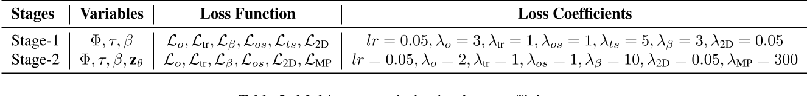
第一阶段以重建为主要目标。第二阶段以优化为主要目标。
遮挡处理
发生遮挡时，初始化阶段的所有信息（bbox，2D关键点，SMPL参数）都变更不可靠。
解决方法：仅使用观察到的时间步长来优化latent code zθ。在这种情况下，运动先验表现为一种运动填充方法，该方法利用来自可见帧的提示来推断被遮挡的帧。这是我们方法的关键部分，使其对遮挡具有鲁棒性。
有效
- 由于使用了强大的生成运动先验，我们的方法可以在部分或严重遮挡的情况下重建更准确的 3D 手部运动。我们在 HO3D-OCC（HO3D 数据集的特定于遮挡的子集）上强调了这一点。
- 与传统的基于时间先验的方法或直接回归手部姿势和形状的方法相比，我们的框架使我们能够执行更好的手部重建结果。
缺陷
对2D kps识别的准确性要求非常高，解决方法：引入图像信息
验证
启发
遗留问题
参考材料
HuMoR: 3D Human Motion Model for Robust Pose Estimation
||2021|HuMoR: 3D Human Motion Model for Robust Pose Estimation|训练时有后验概率信息，而推时只有先验概率信息。因此分别构造先验概率模型和后验概率模型，并让先验概率逼迫后验概率|开源|link
| 缩写 | 英文 | 中文 |
|---|---|---|
| CVAE | conditional variational autoencoder | 条件变分自动编码器 |
| GMM | Gaussian mixture model | 高斯混合模型 |
核心问题是什么?
背景
在存在噪声和遮挡的情况下恢复合理的姿势序列仍然是一个挑战。
解决方法
我们提出了一种条件变分自动编码器形式的表达生成模型，它学习运动序列每一步的姿态变化的分布。
我们引入了一种灵活的基于优化的方法，该方法利用 HuMoR 作为动作先验，从模糊的观察中稳健地估计合理的姿势和形状。
效果
通过广泛的评估，我们证明我们的模型在大型运动捕捉数据集上进行训练后可以推广到不同的运动和身体形状，并能够从包括 3D 关键点和 RGB(-D) 视频在内的多种输入模式进行运动重建。请参阅项目页面：geometry.stanford.edu/projects/humor。
核心贡献是什么？
- HuMoR，一种通过创新的 条件VAE 建模的生成 3D 人体运动先验，可实现富有表现力的通用运动重建和生成，
- 鲁棒的测试时优化方法，使用 HuMoR 作为强运动先验，联合求解姿势、身体形状和地平面/接触。
- 能够对各种输入（例如 RGB(-D) 视频和 2D/3D 关节位置序列）进行操作，以产生准确且合理的运动和接触。
大致方法是什么？
- 建立一个从真实人体运动中学习的富有表现力和可概括的 3D 人体运动生成模型。
- 基于先验模型的测试时动作优化。
HuMoR: 3D Human Dynamics Model

转移关系z的先验概率为黄后，后验概率为绿色。
通过Encoder(基于后验概率得到的转移关系) + Decoder(基于转移关系得到当前帧)可以得到一个比较准确的Decoder
同时，通过让先验概率逼近后验概率，可以得到一个比较准确的先验概率。
推断时，通过先验概率和Decoder得到当前帧。
逐帧的表示
| 符号 | 维度 | 信息 |
|---|---|---|
| \(r\) | 3 | root位移 |
| \(\dot r\) | 3 | root的线速度 |
| \(\Phi\) | 3 | root的朝向 |
| \(\dot \Phi\) | 3 | root的角速度 |
| \(\Theta\) | \(3 \times 21\) | 关节的local rotation，轴角形式 |
| \(J\) | \(3 \times 22\) | 关节的位置 没有提到特殊处理，应该就是指全局位置 |
| \(\dot J\) | \(3 \times 22\) | 关节的线速度 |
Latent Variable Dynamics Model 潜变量动力学模型
假设：当前状态只与上一帧状态有关。
目标：\(p_\theta(x_t|x_{t-1})\)，描述the plausibility of a transition.
CVAE：引入一个潜变量z，分别求\(p_\theta(z_t|x_{t-1})\)和\(p_\theta(x_t|z_t, x_{t-1})\)，结合求出\(p_|theta(x_t|x_{t-1})\)
$$ p_\theta(x_t|x_{t-1}) = \int_{z_t} p_\theta(z_t|x_{t-1}) p_\theta(x_t|z_t, x_{t-1}) $$
这样把问题分解为两部分，其中第一项为Encoder，第二项为Decoder。
由于\(x_t\)和\(x_{t-1}\)差别不大。作者发现学习\(x_t\)与\(x_{t-1}\)之间的差，比直接学习\(x_t\)效果好。
Decoder会同时输出触地标签，这个标签会在test时使用。
模型与传统的随机物理模型类似。条件先验可以被视为一个控制器，产生的“力”zt是一个关于状态 xt−1 的函数的输出，而解码器的作用就像方程中广义位置和速度的组合物理动力学模型和欧拉积分器。
对比Motion VAE
Motion VAE也使用了以上CVAE的原理。本文的改进在于：
通过额外学习条件先验、对状态和接触的变化进行建模以及鼓励关节位置和角度预测之间的一致性来克服这个问题。
初始状态\(p_\theta(x_0)\)
GMM
这一部分单独训练。
训练
训练数据：pair data \((x_{t-1}, x_t)\)
并使用scheduled sampling，使模型对自身错误的长期积累具有鲁棒性。
| 重建loss | 重建出的xt应与训练数据是的xt接近 | 1. 由Encoder\((x_{t-1}, x_t)\)得到潜变量z 2. 由z和\(x_{t-1}\)Decoder出xt |
| KL散度 | z的先验分布与z的后验分布应该接近 | z的先验分布为\(p_\theta(z\mid x_{t-1})\) z的后验分布为\(q_\phi(z\mid x_{t-1},x_{t-1})\) 这个loss的权重在训练时会逐步减小，以避免posterior collapse。 |
| SMPL关节一致性 | 预测出的关节位置应该与GT一致 | [?]这个是不是有点多余？x里面已经包含关节位置、速度和旋转信息了。 |
| 触地标签 | 触地标签应与GT一致 | |
| 触地时脚的速度 | 触地是脚的速度应该较小 |
基于HuMoR的动作优化
RollOut
定义一个确定性的推断函数。用于test。
当输入x0与每一步转换z是确定的时候，第T帧的输出也是确定的。
Optimization Variables
输入：观察序列y，为需要被优化的动作序列的特征
优化变量：初始状态x0，转移序列z，形状参数beta，地面高度g
优化目标：通过rollout函数，使得第T帧的输出与观察序列y的第T帧接近
优化目标
| 优化目标 | ||
|---|---|---|
| mot | CVAE | z产生的先验概率尽量大，即根据x0和序列z生成每一帧xt之后，再计算每一帧会产生这个z序列的先验概率 |
| mot | init | 第一帧的概率尽量大 |
| data | data | 所产生的序列应与观察序列y相似 |
| reg | skel | 所生成的关节位置应与beta对应的SMPL体型一致 每一帧的骨长应保持不变 |
| reg | env | 当检测到脚步触地时，脚应该不动，且脚的高度为0 |
| reg | gnd | 地面高度接近初值 |
| reg | shape | 正常人的体型的shape参数不会太大 |
| additional | pose | \(z^{poset}\)不要太大 |
| additional | smooth | 前后两帧的关节位置不能发生突变 |
第一步：initialization optimization
优化参数：SMPL参数初值
优化目标：data, shape, additional
第二步：计算z序列的初值
计算方法：CVAE Encoder
有效
缺陷
- 训练和使用比较麻烦，训练包含2个阶段，使用包含3个阶段
- 整体优化，不能用于流式场景
- 由于运动模型是从室内mocap数据中学习的，因此不能推广到现实世界的复杂性
验证
数据集
AMASS, i3DB, PROX
启发
遗留问题
参考材料
Co-Evolution of Pose and Mesh for 3D Human Body Estimation from Video
| 缩写 | 英文 | 中文 |
|---|---|---|
| PMCE | Pose and Mesh Co-Evolution network | 姿势和Mesh协同进化网络 |
| AdaLN | Adaptive Layer Normalization | 自适应层标准化 |
核心问题是什么?
背景
尽管基于单图像的 3D 人体网格恢复取得了重大进展，但从视频中准确、平滑地恢复 3D 人体运动仍然具有挑战性。
现有方法
现有的基于视频的方法通常通过从耦合图像特征估计复杂的姿势和形状参数来恢复人体网格，其高复杂性和低表示能力通常导致不一致的姿势运动和有限的形状模式。
本文方法
为了缓解这个问题，我们引入 3D 姿势作为中介，并提出一种姿势和Mesh协同进化网络（PMCE），将该任务分解为两部分：
1）基于视频的 3D 人体姿势估计
2）从估计的 3D 姿态和时间图像特征回归顶点。
具体来说，我们提出了一种双流编码器，用于估计中间帧 3D 姿势并从输入图像序列中提取时间图像特征。此外，我们设计了一个协同进化解码器，它与图像引导自适应层归一化（AdaLN）执行姿势和网格交互，以使姿势和网格适合人体形状。
效果
大量实验表明，所提出的 PMCE 在三个基准数据集（3DPW、Human3.6M 和 MPI-INF-3DHP）上的每帧精度和时间一致性方面均优于以前最先进的方法。我们的代码可在 https://github.com/kasvii/PMCE 获取。
核心贡献是什么？
- 提出了一种姿势和网格协同进化网络 (PMCE)，用于从视频中恢复 3D 人体网格。它将任务分解为两部分：基于视频的 3D 位姿估计，以及通过图像引导位姿和网格协同进化进行网格顶点回归，从而实现准确且时间一致的结果。
- 设计了协同进化解码器，该解码器在我们提出的 AdaLN 的指导下执行姿势和网格交互。 AdaLN根据图像特征调整关节和顶点特征的统计特性，使其符合人体形状。
- 方法在 3DPW 等具有挑战性的数据集上实现了最先进的性能，将 MPJPE 降低了 12.1%，PVE 降低了 8.4%，加速误差降低了 8.5%。
大致方法是什么？
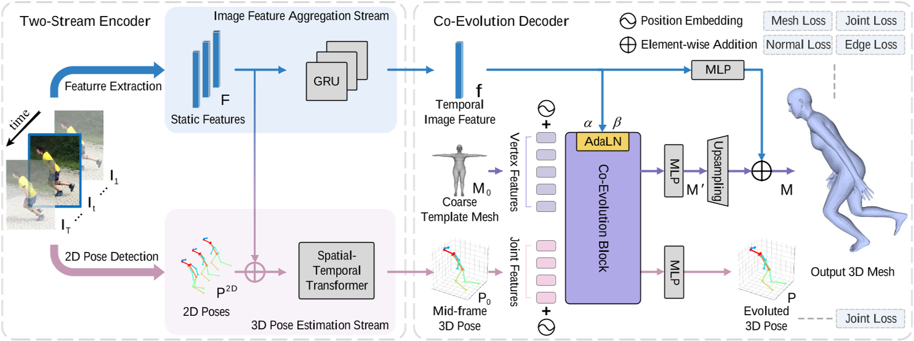
PMCE包括两个时序步骤：
1）基于视频的 3D 姿态估计：关注人体骨骼，根据姿势预测准确、平滑的人体运动。
2）根据 3D 姿态和时间图像特征进行网格顶点回归：利用视觉线索补充人体形状信息，恢复准确的Mesh网格并细化预测的 3D 姿势，实现姿势和网格的协同进化。
| 输入 | 输出 | 方法 |
|---|---|---|
| T 帧视频序列 | 静态图像特征 | 预训练的 ResNet-50 |
| 静态图像特征 | 时序图像特征 | Encoder |
| T 帧视频序列 | 2D 姿势 | 现成的 2D 姿态检测器 |
| 2D 姿势 | 中间帧 3D 姿势 | Encoder |
| 3D 姿态特征、时间特征 | Mesh Vertices | co-evolution decoder 活动层归一化（AdaLN）通过时序图像特征调整关节和顶点特征的统计特征来指导交互，以使pose和mesh适合人体形状。 |
self/cross attention
| 输入 | 输出 | 方法 |
|---|---|---|
| X | Q | linear |
| X或Y | K, V | linear |
| Q, K, V | multi head | Softmax |
| multi head | output | concat |
Layer Normalization
先标准化到0-1分成，再映射新的均值、方差上。
2D keypoint的位置归一化（左下）
通常的做法为：先crop出人体区域，并在区域中进行归一化。好处是降低背景噪声并简化特征提取。缺点是裁剪操作丢弃了人体在整个图像中的位置信息，这对于预测原始相机坐标系中的全局旋转至关重要[22]。
本文做法：相对于完整图像而不是裁剪区域对 2D 位姿进行归一化。
3D Pose估计（左下）
| 输入 | 输出 | 方法 |
|---|---|---|
| 归一化之后的2D Sequence | joint feature(T * J * C1) | project |
| 静态图像特征（来自左上） | 静态图像特征（T * 1 * C1） | project |
| 空间位置信息 | 空间位置信息 | Spatical embedding |
| 时序信息 | 时序信息 | temporal embedding |
以上信息加起来，得到(T * J * C1)的输入特征。
ST-Transformer 由 L1 层级联空间 Transformer 和时间 Transformer 组成。
空间Transformer：旨在探索关节之间的空间信息，计算同一帧中joint token之间的相似度。
时间 Transformer：为了捕获帧之间的时间关系，时间 Transformer 将联合特征 X 从 (T × J × C1) reshape 为 (J × T × C1)。因此，注意力矩阵是通过同一关节的frame token之间的相似度来计算的。
融合：使用多层感知器（MLP）将维度从 C1 变换为 3，并将 T 帧融合为 1，以获得中帧 3D 姿态（J * 3）。
图像特征聚合(左上)
目的：聚合T帧的静态图像特征以获得中间帧的时序特征
方法：双向GRU
Co-Evolution Decoder
输入：
- 3D Pose（来自左下），提供更精确、更稳健的姿态信息
- 时序图像特征（来自左上），提供视觉线索，例如身体形状和表面变形
- template mesh
输出：人体mesh
Adaptive layer normalization
AdaLN 基于时间图像特征自适应调整关节和顶点特征的统计特性，指导pose和mesh以适应人体形状。
把它看作是一个风格迁移任务[11]，自适应调整关节和顶点的特征趋近于图像特征 f 。
图像特征f为AdaLN提供新的 scaling α 和 shifting β。关节特征和顶点特征按照f提供的α和β进行调整，这样，图像特征中包含的形状信息可以注入到关节和顶点特征中，同时保留它们的空间结构。
Co-Evolution Block
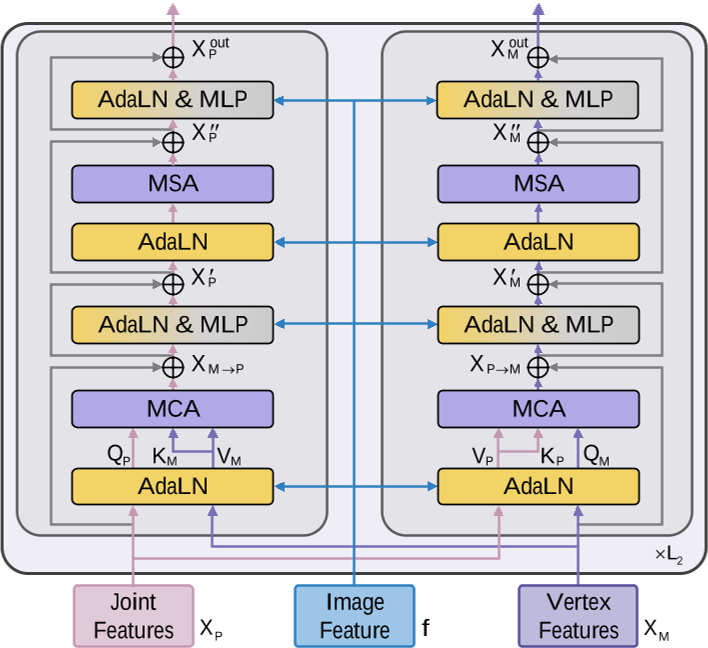
Loss Function
- mesh vertex loss Lmesh
- 3D joint loss Ljoint
- surface normal loss Lnormal
- surface edge loss Ledge
有效
缺陷
验证
启发
遗留问题
参考材料
Global-to-Local Modeling for Video-based 3D Human Pose and Shape Estimation
| 缩写 | 英文 | 中文 |
|---|---|---|
| GLoT | Global-to-Local Transformer | |
| HSCR | Hierarchical Spatial Correlation Regressor | 分层空间相关回归器 |
| GMM | Global Motion Modeling | 全局运动建模 |
| LPC | Local Parameter Correction | 局部参数校正 |
核心问题是什么?
背景
video-based 3D HPE通过帧内精度和帧间平滑度进行评估。
帧内精度 是指单帧动作的准确性。帧间平滑度 是指一个动作序列的趋势一致性。
现有方案
尽管这两个指标负责不同范围的时间一致性，但现有的最先进方法将它们视为一个统一的问题，并使用单调的建模结构（例如 RNN 或 attention-based block）来设计其网络。
存在的问题
然而，使用单一类型的建模结构很难平衡短期和长期时间相关性的学习，并且可能使网络偏向其中一种，导致不好的预测结果，例如：
- 全局位置偏移
- 时序上不一致
- 单帧动作不准确
解决方法
为了解决这些问题，我们提出一种端到端框架称为 Global-to-Local Transformer (GLoT)，可以结构性地解耦“长期特征的建模”和“短期特征的建模”。
- 首先，引入了global transformer以及用于长期建模的Masked HPE策略。该策略通过随机屏蔽多个帧的特征来刺激global transformer学习更多的帧间相关性。
是否能用于流式？
- 其次，local transformer负责利用人体mesh上的局部细节，并通过利用cross-attention与global transformer进行交互。
- 此外，进一步引入了Hierarchical Spatial Correlation Regressor，通过解耦的全局-局部表示和隐式运动学约束来细化帧内估计。
效果
我们的 GLoT 在流行基准（即 3DPW、MPI-INF-3DHP 和 Human3.6M）上以最低的模型参数超越了以前最先进的方法
核心贡献是什么？
- 解耦长期和短期相关性的建模。所提出的Global-to-Local Transformer（GLoT）融合了深层网络和人类先验结构的知识，提高了我们方法的准确性和效率。
- GLoT中包含两个组件，即Global Motion Modeling和Local Parameter Correction，分别用于学习帧间全局局部上下文和帧内人体网格结构。
- 在三个数据集的实验表明，GLoT 优于之前最先进的方法 [44]，且模型参数更少。
大致方法是什么？
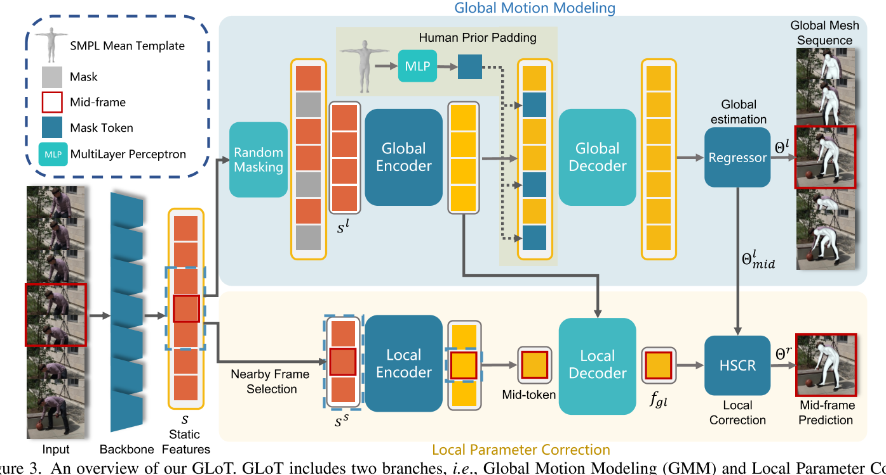
GLoT包括两个分支，即全局运动建模（GMM）和局部参数校正（LPC）。
- 首先从预训练的 ResNet-50 [11] 中提取Static Features，参考 [5, 17, 44]。
- 然后，通过Random Masking(分支1)和Nearby Frame Selection（分支2）分别处理静态特征 S，以将它们（Sl，Ss）输入全局和局部transformer。
- 最后，分层空间相关回归器（HSCR）使用解耦的全局-局部表示\(f_{gl}\)和内部运动学结构来校正GMM获得的全局结果\(θ^l_{mid}\)。
- 请注意，我们的方法利用 T 帧来预测中间帧，参考[5,44]
Global Motion Modeling
- 沿时间维度随机屏蔽一些static token，α是屏蔽比率。（灰）
- 将global encoder应用于这些未被mask的static token。（红->黄）
- 将 SMPL token [10]填充到被mask的位置上（蓝）
- 在global decoder阶段，将整个序列发送到global decoder中以获得long-term表示。
- 将interate regressor应用于long-term表示以得到初始的全局mesh序列。
GMM得到的SMPL参数表示如下：
| 位姿参数 | Tx24×6 |
| 形状参数 | T ×10 |
| 伪相机参数 | T ×3 |
形状参数和相机参数通常是耦合的
Local Parameter Correction
人体运动的在中间帧中受到附近帧的显著影响
- 择附近的帧进行short-term建模，w 是附近帧的长度
- 对选定的tokens使用local encoder。
- local decoder不仅通过cross attention机制解码代表全局人类运动一致性的特征，还解码代表局部细粒度人类mesh结构的特征。cross attention函数定义如下，
| Q | a query of the mid-token |
| K | key of the global encoder |
| V | value of the global encoder |
HSCR
以前的方法：使用HMR直出SMPL参数，而不考虑骨骼结构。
存在的问题：没有考虑骨骼结构，结合骨骼结构信息可以得到更好的结果。
本文方法：[42]结合local分支的输出来优化global分支的结果。
- 以骨骼结构为依据拼接pose特征，以一整个骨骼链的pose特征来描述这个关节的pose特征。
- 以global branch的原始输出l和local branch的输入gl为特征，使用MLP，预测l需要调整的量s
- 把s叠加到l上，为最终输出r。
Loss Function
- global branch的输出的GT SMPL参数之间的L2 loss，只对mask的帧计算loss - 重建loss
- 2D/3D关节位置的速度 - 可以帮助模型学习运动一致性
- Masked HPE strategy - 更好地捕获远程依赖性
有效
缺陷
不支持流式
验证
启发
global E&D, local E&D、MASK策略、refine策略
遗留问题
参考材料
https://blog.csdn.net/weixin_44880995/article/details/132674988
WHAM: Reconstructing World-grounded Humans with Accurate 3D Motion
核心问题是什么?
视频动捕，3D人体运动重建。 单目，复杂背景，运动背景，单人
核心贡献是什么？
-
WHAM（World-grounded Humans with Accurate Motion）方法成功结合3D人体运动和视频背景，实现精准的全球坐标下3D人体运动重建。
-
该方法通过模型自由和基于模型的方法，利用深度学习技术，有效地从单眼视频中准确估计3D人体姿态和形状。
-
WHAM在全球坐标系下取得了令人瞩目的成果，通过融合运动上下文和足地接触信息，最小化足滑动，提高国际协调性。
大致方法是什么？
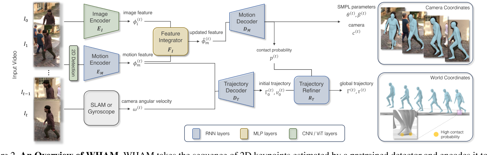
3D动作估计
| 模块 | 先验知识 | 输入数据 | 预测信息 |
|---|---|---|---|
| 2D Detection | ViT-H 2D关键点检测技术 | 图像 | 2D关键点。 |
| bbox检测 | YOLO预训练模型 | 2d kps，原始图像 | bbox的center和scale |
| crop | 原始图像，bbox | crop后的图像 | |
| ImageEncoder | 以ViT-H为基础的HMR2.0 | crop后的图像 | 图像特征 |
| MotionEncoder | 采用单向RNN，学习人体运动数据的时序关系 | 上一帧的RNN状态，2D关键点 | 结合上下文进行在线推断SMPL参数、足地接触概率、运动特征。 |
| FeatureIntegrator | 图像特征、运动特征 | 捕捉和整合图像特征与运动特征 | 新的运动特征。 |
| MotionDecoder | 采用单向RNN，学习人体运动数据的时序关系 | 运动特征 | 当前帧相机坐标系下的SMPL参数，上一帧的RNN状态 |
没有使用额外的传感器，如惯性传感器，因为它们可能会产生侵扰。
相机标定
| 模块 | 先验知识 | 输入数据 | 预测信息 |
|---|---|---|---|
| TrajectoryDecoder | 人运动时身体保持基本向上的特点 | 相机视角下人体动作 | 世界坐标系下的人的全局旋转。 |
| 坐标系对齐 | 坐标系变换 | 通过相机视角下的人物的全局旋转与世界坐标系下的人物全局旋转的对齐 | 计算出相机坐标系与世界坐标系的投影关系。 |
运动轨迹与滑步的一致性
| 模块 | 先验知识 | 输入信息 | 预测信息 |
|---|---|---|---|
| TrajectoryDecoder | 从人体运动数据中运动轨迹与动作之间关系 | 相机坐标系下的人体动作的编码 相机朝向的相对运动 | 人在人物坐标系下的运动轨迹 |
| 脚步触地时不应该出现滑步 | 当前帧的触地概率，上一帧脚步在世界坐标系的位置，当前帧脚步在世界坐标系的概率 | 如果触地，通过调整运动轨迹，消除脚步移动 | |
| TrajectoryRefiner | 人体运动数据 | 世界坐系下的人体动作，世界坐标系下运动轨迹，通过相机标定，根据相机坐标系下的脚步位置换算出的世界坐标系下的脚步位置 | 最终的人体动作、运动轨迹 |
训练与验证
数据集
AMASS, BEDLAM, 3DPW, Human3.6M
https://caterpillarstudygroup.github.io/ImportantArticles/%E6%95%B0%E6%8D%AE%E9%9B%86.html
训练方法
有效
WHAM超越了当前的最先进方法，在逐帧和基于视频的3D人体姿势和形状估计中表现出卓越的准确性。通过利用运动上下文和足地接触信息实现了精确的全球轨迹估计，最小化了足滑动，并提高了国际协调性。该方法整合了2D关键点和像素的特征，提高了3D人体运动重建的准确性。在野外基准测试中，WHAM在MPJPE、PA-MPJPE和PVE等指标上展现出卓越的性能。轨迹细化技术进一步提升了全局轨迹估计，并通过改善的误差指标证明了减少足滑动的效果。
Feature Integrator
Feature Integrator的作用是整合2D运动特征和图像特征，生成可以还原出要SMPL参数的3D运动特征。
其实2D运动特征和图像特征都有独立的生成3D运动特征的能力。
2D运动特征到3D运动特征的过程称为lifting。由于2D信息不充分或者识别不可靠等原因，导致2D到3D的lifing可能存在错误。因此单纯的2D-3D-lifting效果不好。还需要借助别的手段来提供，有大量的HMR论文使用这类方法。
相对于2D运动特征，图像特征可以包含更多的信息，因此图像特征-3D比单纯的2D-3D效果更好。例如Humans in 4D和TRAM都属于此类。
既然Image Feature可以直接恢复人体动作，且效果比使用2D运动特征要好，为什么很多方法还有引入2D-3D-lifting这一步呢？为了更充分地利用数据集。
- 图像与SMPL参数的标注的pair数据集相对于纯3D数据集来说更难以获取。
- 图像标注的SMPL参数通常是相机坐标系下的运动数据。而纯3D数据是世界坐标系下的运动数据。
虽然通常用把smpl投影回图像的方法来验证动作的一致性，但实际需要的是世界坐标系下的3D输出。因此必须有一种方法来利用3D世界坐标系下的动作数据。如果只使用相机坐标系下的数据，是做不到这一点的，只能得到相机坐标系下的数据。
作者同时使用2D-3D-lifing和Image Feature，把在MotionContext空间上进行融合，就是为了同时利用丰富的图像信息和大量的世界坐标系下的3D数据集。
使用此模块与不使用此模块的效果对比，结果如下：
（自）遮挡场景：前者动作更准确，而后者丢失深度信息
2D关键点位置出错，置信度低：后者会出错，前者有一定的纠错能力
深度歧义：两者效果不同，但前者不一定比后者更准确
2D关键点识别错误（例如左腿识别成右腿）：两者都出Decoder出错误的动作
TrajectoryDecoder
TrajectoryDecoder能够根据相机坐标系下的编码信息，推断出它在世界坐标系下的朝向与位移。
这个能力来自于大量的世界坐标系下的3D动作数据(AMASS)。
通过构造不同的相机角度，模拟出各种相机坐标系下的动作数据与世界坐标系下的动作数据的pair对。
相机坐标系转世界坐标系这一步，输入包括MotionContext（相机坐标系下的运动信息）和cam_angvel（世界坐标系下相机朝向的相对运动）。因此此模块的能力来自对先验的3D数据的理解，而不是图像中的坐标系信息。
有了这模块之后，哪怕init_smpl给的朝向不对，它也自己调整出整体向上的朝向。
缺陷
| 现象 | 可能的原因 |
|---|---|
| 角色不够灵活，快速动作或大幅度动作跟不上 | 1. Motion Encoder & Decoder没有很好地对动作编解码 2. 使用RNN网络，导致输出结果跟输入相比有延迟 |
| 世界坐标系下的人的全局旋转不准 | 全局旋转可以分解为y轴方向的旋转和剔除y轴以后的旋转。把它们区分开是因为二者造成的原因和现象不同。 y轴旋转错误是因为 1. 角度的歧义性。一个合理的特定动作放在3D空间中，它可以以y轴任意旋转，仍是一个合理的动作。作者获取世界坐标系下的人物朝向的方式是AMASS中的合理动作的先验。所以它实际上不能区分单帧动作上的y轴旋转的合理值。 2. 数据增强的歧义性。作者在AMASS上构造数据增强时，对角色的y轴旋转和相机的y轴旋转都做增强。也就是说，在训练数据中，一个相机坐标系下的人物面朝向另外一边，可能是因为人本身做了旋转，也可能是因为相机做了旋转，，更有可能是二者旋转结合的结果。这些都有可能是正确答案，这就给模型的学习带来了困惑。 3. 模块之间的耦合性。作者同时训练pipeline中的所有模块，造成了模块之间的高耦合。模型虽然不能很好地预测y轴旋转，但是由于相机的运动也耦合进来，在相机视角下仍然是一个合理的动作。模型的监督主要来自相机坐标系下的监督，因此这种错误的预测不会被优化。 和y轴旋转不同，剔除y轴以后的旋转没有那么大的歧义性。通过先验信息，可以从动作中学习到重力方向，在这个重力方向上做这些动作最稳。调整人物的全局朝向，使得重力方向与y轴方向重合。因此，造成这个现象的原因可能是TrajectoryDecoder的学习不够充分，与相机动作耦合。单纯从动作不足以预测人的全局旋转。人在轻微歪斜的动作下也能保持平衡 |
| 世界坐标系下的人的全局轨迹不准 | 单纯从动作不足以预测人的全局轨迹。因为原地踏步或向前走或上楼梯，可能表现出的动作是一样的。还应该结合背景信息。 |
| 部分动作不能较好地恢复 | 1. 2D关键点预测错误。2D关键点直接解决了最终结果。 2. 2D kps的检测和Image Feature的提取，都是以Vit-H为backbone，所以可能有相似的算法边界。所以即使二者结合，也不能有太多的增益。 3. 2D kps的检测和Image Feature的提取都是逐帧进行的。虽然在模型中使用了大量的时序模型，但可能在模型的输入信息，视频时序特征就已经丢失了。 |
启发
- 人物动作与人物轨迹解耦
- 相机坐标系与世界坐标系解耦
- 利用运动先验信息代替相机标定
- 利用Image Feature和时序关系来解决2D到3D的歧义性
- 一个pipeline中通常包含了多个模块，如果将所有模块放在一起训练，就会造成模块之间的耦合。当一个模块的学习不够完善时，另一个模块会进行相应的补偿，使得整体效果最好。这种方式虽然能提升整体效果，但高耦合也成为泛化性的潜在威胁。
- 全局旋转可以分解为y轴方向的旋转和剔除y轴以后的旋转。把它们区分开是因为二者造成的原因和现象不同。y轴旋转的角度是具有歧义性的。一个合理的特定动作放在3D空间中，它可以以y轴任意旋转，仍是一个合理的动作。作者获取世界坐标系下的人物朝向的方式是AMASS中的合理动作的先验。所以它实际上不能区分单帧动作上的y轴旋转的合理值。剔除y轴以后的旋转没有那么大的歧义性。通过先验信息，可以从动作中学习到重力方向，在这个重力方向上做这些动作最稳。调整人物的全局朝向，使得重力方向与y轴方向重合。
遗留问题
参考材料
- https://arxiv.org/pdf/2312.07531.pdf
- http://wham.is.tue.mpg.de/
- https://arxiv.org/abs/2312.07531
- https://ar5iv.labs.arxiv.org/html/2312.07531
- https://accesspath.com/ai/5891344/
- 数据集：https://caterpillarstudygroup.github.io/ImportantArticles/%E6%95%B0%E6%8D%AE%E9%9B%86.html
Tackling the Generative Learning Trilemma with Denoising Diffusion GANs
核心问题是什么?
作者认为可以从三个维度来评价一个生成模型的好坏：

其中Diffusion based生成模型的主要问题是生成速度慢，因此需要在保持高采样质量和多样性的前提下，针对采样速度慢的问题进行加速。
核心贡献是什么？
Diffusion模型缓慢采样的根本原因是去噪步骤中的高斯假设，该假设仅适用于小步长。为了实现大步长的去噪，从而减少去噪步骤的总数，作者建议使用复杂的多模态分布对去噪分布进行建模。因此引入了去噪扩散生成对抗网络（去噪扩散 GAN），它使用多模态条件 GAN 对每个去噪步骤进行建模。总之，我们做出以下贡献：
- 将扩散模型的缓慢采样归因于去噪分布中的高斯假设，并建议采用复杂的多模态去噪分布。
- 提出去噪扩散 GAN，这是一种扩散模型，其逆过程由条件 GAN 参数化。
- 通过仔细的评估，我们证明，与当前图像生成和编辑的扩散模型相比，去噪扩散 GAN 实现了几个数量级的加速。
大致方法是什么？
Denoising Diffusion GAN的设定
前向扩散过程与原来的DDPM模型一致，只是T非常小（T < 8），且每个扩散步的\(\beta_t\)很大。
训练目标为最小化生成分布与真实分布的距离（同DDPM）对抗性损失，这个对抗性损失能够最小化散度。
判别器的定义为\(D_{\phi}(x_{t-1},x_t,t): R^N \times R^N \times R -> [0,1]\)，即输入N维的\(x_{t-1}\) 和 \(x_{t}\)，输出 \(x_{t-1}\)是\(x_{t}\) 的去噪版本的置信度。
判别器对真实分布与生成分布做区分，但真实分布是未知的，无法直接训练判别器。为了解决这个问题，作者在这里做了转换：

关于这个转换与非饱和GAN目标这一部分不懂
模型的重参数化
直接预测 \(x_{t-1})\)较为困难，因为现在的去噪模型更加复杂，且是一个隐式的模型(原来的建模只是简单的高斯分布)。但是由于正向扩散过程仍然是加的高斯噪声，因此无论步长多大或者数据分布多复杂，依然有 \(q(x_{t-1}|x_t, x_0)\)服从高斯分布这一性质。因此去噪过程为：
先使用去噪模型 \(f_\theta(x_t,t)\) 预测 x0,再用给定的 xt 和预测出的 x0 来从后验分布 \(q(x_{t-1}|x_t,x_0)\) 中采样得到。

训练流程图如下所示:

有效
本文相对于DDPM的优势:
- \(p_\theta(x_{t-1}|x_t)\) 的构建类似于原始DDPM，可以利用原来的归纳偏置。但原来的DDPM是以确定性映射的方式由 xt 预测 x0 ,而在作者的设计中 x0 是由带随机隐变量 z 的生成器得到的。这一关键差异使得作者的去噪分布模型 \(p_\theta(x_{t-1}|x_t)\) 能够变得多模态以及更加复杂，而DDPM的去噪模型是简单的、单模态的高斯分布。
2.对于不同的时间步 t ，xt 相对于原始图片的扰动程度是不同的，因此使用单个网络直接预测不同时间步的 \(x_{t-1}\) 可能是困难的。但在作者的设定下生成器只需要预测未经扰动的 x0，然后再利用 \(q_\theta(x_{t-1}|x_t,x_0)\) 加回扰动。
本文相对于GAN的优势：
传统的GAN训练完后一步就能生成样本，而本模型要迭代地去噪来获得样本。因此:
-
GAN存在训练不稳定以及模式坍缩的问题。
-
直接一步从复杂分布中生成样本是很困难的，而作者的模型将生成过程分解为几个条件的去噪-扩散步骤，每一步由于基于强条件 xt ，相对来说会更容易建模。
-
判别器只看干净的样本可能存在过拟合问题。而扩散过程可以平滑数据分布，使得判别器没那么容易过拟合。
扩散过程相当于对原始图片加噪声，相当于做了数据增强，有缓解过拟合的作用；另一方面，我们的数据集是有限的，相当于是数据分布上的一些离散的点，加上噪声相当于让点扩散开来，将这些离散的点"连起来"成为一片区域，从而平滑了数据分布。
缺陷
验证
移掉隐变量会让模型变成单模态分布，并在消融实验中定量的证明了这一点
启发
遗留问题
参考材料
https://zhuanlan.zhihu.com/p/503932823
Elucidating the Design Space of Diffusion-Based Generative Models
核心问题是什么?
diffusion model模型的文献在理论方面非常丰富，采样计划、训练动态、噪声水平参数化等的推导往往尽可能直接基于理论框架，这确保了模型具有坚实的理论基础。然而，这种方法存在模糊可用设计空间的危险——所提出的模型可能会显示为紧密耦合的包，其中任何单个组件都无法在不破坏整个系统的情况下进行修改。
核心贡献是什么？
文章用一种新的设计框架统一diffusion-based model，并使用模块化（modular）的思想，分别从采样、训练、score network设计三个方面分析和改进diffusion-based model。
- 我们从实践的角度来审视这些模型背后的理论，更多地关注训练和采样阶段出现的“有形”对象和算法，而不是它们可能来自的统计过程。目标是更好地了解这些组件如何连接在一起以及整个系统设计中可用的自由度。
- 采样：我们确定了采样的最佳时间离散化，对采样过程应用高阶龙格-库塔方法，评估不同的采样器计划，并分析随机性在采样过程中的有用性。这些改进的结果是合成过程中所需的采样步骤数量显着减少，并且改进的采样器可以用作几种广泛使用的扩散模型的直接替代品。
- 训练：虽然我们继续依赖常用的网络架构（DDPM [16]、NCSN [48]），但我们在扩散模型设置中提供了对网络输入、输出和损失函数的预处理的第一个原理分析，并得出提高训练动力的最佳实践。我们还建议在训练期间改进噪声水平的分布，并注意到non-leaking augmentation [25]（通常与 GAN 一起使用）也有利于扩散模型。 总而言之，我们的贡献可以显着提高结果质量。同时，通过明确列出设计空间的所有关键要素，我们相信我们的方法将使各个组件更容易创新，从而能够对扩散模型的设计空间进行更广泛和有针对性的探索。
大致方法是什么？
Expressing diffusion models in a common framework
假设有方差是\( \sigma_{data} \)的数据分布 \(p_{data}(\mathbf x) \)。通过多次对数据添加方差为\( \sigma \)的高斯噪声，得到的\(p(x; \sigma_{max})\为纯高斯噪声（此处没有考虑缩放）。
则有下面的ODE描述数据分布随着时间的变化：

如果把缩放考虑进去，则公式变为：

为了让p(x)与t无关，以下都是基于不考虑缩放的版本。
diffusion-based model都是逐步添加高斯噪声的过程，主要就是两个不同，一个是缩放 s(t)，一个是噪声的大小σ(t)。
作者在三个预训练模型进行了重构。三个预训练模型代表不同的理论框架和模型系列，都重构到一套统一的框架中。且重构后所有组件之间不存在隐式依赖关系——原则上，各个公式的任何选择（在合理范围内）都会产生一个功能模型。换句话说，更改一个组件并不需要更改其他组件，以便保持模型收敛到极限数据的属性。在实践中，某些选择和组合当然会比其他选择和组合效果更好。

表 1：N 是采样期间执行ODE solver迭代的次数。相应的时间步序列是{t0, t1,...。 。 。 , tN }，其中 tN = 0。降噪器定义为\(Dθ (x; σ) = c_{skip}(σ)x + c_{out}(σ)Fθ(c_{in}(σ)x; c_{noise}(σ));\) Fθ 表示原始神经网络层。
一些公式看起来与原始论文有很大不同，因为间接和递归已被删除；详细信息请参见附录 C。
求解ODE的过程可以把积分离散化，即在离散时间间隔上采取有限步骤。这需要选择离散化方案（例如，Euler 或 Runge-Kutta 的变体）以及离散采样时间 {t0, t1,...。 。 。 ，tN}。许多先前的工作使用欧拉方法，但我们在第 3 节中表明二阶求解器提供了更好的计算权衡。
Improvements to deterministic sampling
我们的假设是，与采样过程相关的选择在很大程度上独立于其他组件，例如网络架构和训练细节。
对 ODE 进行数值求解是遵循真实解轨迹的近似值。在每一步中，求解器都会引入局部截断误差，截断误差会在N 步中累积。
- 局部误差通常相对于步长呈超线性缩放，因此增加 N 可以提高解决方案的准确性。
- Euler方法是一阶solver，步长 h 的局部误差为 \(O(h^2)\)。而高阶方法有较小的截断误差，但在每一步需要进行多次网络预测。Heun二阶方法则在误差精度与推断次数之间有比较好的权衡。
- 步长{ti}应该随着 σ 的减小而单调减小，并且不需要根据每个样本而变化（附录 D.1）。
- s(t)和σ(t)的选择提供了一种减少上述截断误差的方法，因为它们的大小预计与 dx/dt 的曲率成比例。作者认为这些函数的最佳选择是 σ(t) = t 和 s(t) = 1，这也是 DDIM [47] 中做出的选择。通过这种选择，ODE公式(4) 简化为 dx/dt = (x − D(x; t))/t， 并且 σ 和 t 可以互换。
Stochastic sampling
确定性采样有许多好处，例如，能够通过反转 ODE 将真实图像转换为其相应的潜在表示。然而，它输出的质量差于SDE [47, 49]。鉴于 ODE 和 SDE 理论上恢复相同的分布，那么随机性到底有何作用？

这揭示了为什么随机性在实践中有帮助：隐式朗之万扩散在给定时间将样本推向所需的边缘分布，主动纠正早期采样步骤中发生的任何错误。
但是，用离散 SDE 求解器步骤逼近 Langevin 项本身会引入误差。之前的结果 [3, 24 , 47 , 49 ] 表明非零 β(t) 是有帮助的，但Song 等人对 β(t) 的隐式选择[49]只是根据经验确定。
我们提出了一种随机采样器，它将二阶确定性 ODE 积分器与添加和消除噪声的显式的类似 Langevin 的“搅动”相结合。算法 2 中给出了伪代码。

我们的方法和 Euler-Maruyama 之间的主要区别在于在离散化公式6时存在细微的差异。 Euler-Maruyama方法先添加噪声，然后执行 ODE 步骤。ODE不是从噪声注入后的中间状态开始，而是假设 x 和 σ 在迭代步骤开始时保持在初始状态。在我们的方法中，算法 2 第 7 行用于评估 Dθ 的参数对应于噪声注入后的状态(而Euler-Maruyama 的方法将使用 xi;ti 代替 \(\hat x_i; \hat t_i\)).在 Δt 接近零的极限下，这些选择之间可能没有区别，但当以大步长追求低 NFE 时，区别就变得很重要了。
有效
Stochastic sampling
我们的随机采样器明显优于以前的采样器 [24,37,49]，特别是在低步数的情况下
缺陷
验证
Improvements to deterministic sampling
我们首先使用这些模型的原始采样器实现测量基线结果，然后使用表 1 中的公式将这些采样器引入我们的统一框架，然后进行改进。这使我们能够评估不同的实际选择，并对适用于所有模型的采样过程提出一般改进。
启发
遗留问题
参考材料
https://blog.csdn.net/icylling/article/details/133840948
SCORE-BASED GENERATIVE MODELING THROUGHSTOCHASTIC DIFFERENTIAL EQUATIONS
核心问题是什么?
一种从数据生成噪声的方法：通过缓慢注入噪声将复杂的数据分布平滑地转换为已知的先验分布
一种从噪声生成数据的方法：SDE 通过缓慢消除噪声将先验分布转换回数据分布。其中SDE 仅取决于扰动数据分布的时间相关梯度场（也称为分数）。
核心贡献是什么？
- 通过神经网络准确估计这些分数，并使用数值 SDE 求解器生成样本。
- 引入预测校正框架来纠正离散逆时 SDE 演化中的错误
- 导出等效的神经常微分方程，它从与 SDE 相同的分布中采样，但还可以进行精确的似然计算，并提高采样效率
- 提供了一种使用基于分数的模型解决逆问题的新方法
大致方法是什么？
Score function
生成模型的目标就是要得到数据的分布。现在我们有一个数据集，我们想要得到数据的概率分布p(x)。一般我们会把这个概率分布建模成这样：
$$ p_\theta(x) = \frac{e^{-f_\theta(x)}}{Z_\theta} $$
这里f(x)可以叫做unnormalized probabilistic model或者energy-based model。Z是归一化项保证p(x)是概率。\(\theta\)是他们的参数。 我们一般可以通过最大化log-likelihood的方式来训练参数\(\theta\)
$$ \max_\theta \sum_{i=1}^N \log p_\theta(x_i) $$
即让数据集里的数据（即真实数据分布的采样）log-likelihood最大。
但是因为Z是intractable的，我们无法求出\(\log p_\theta(x_i)\)，自然也就无法优化参数。 为了解决归一化项无法计算的问题，我们引入score function。 score function的定义为
$$ s_\theta(x) = \nabla_x \log p_\theta(x) = -\nabla_x f_\theta(x) - \nabla_x \log z_\theta \\ = -\nabla_x f_\theta(x) $$
因此s(x)是一个与z无关的函数。
Score matching
现在我们想要训练一个网络来估计出真实的score function。自然地，我们可以最小化真实的score function \(\nabla_x \log p_\theta(x)\)和网络输出的MSE\(s_\theta(x)\)。 但是这样的一个loss我们是算不出来的，因为我们并不知道真实的p(x)是什么。而score matching方法就可以让我们在不知道真实的的情况下最小化这个loss。Score matching的推导如下：

Score Matching Langevin Dynamics (SMLD)
现在我们已经通过神经网络学习到了数据分布的score function，那么如何用score function从这个数据分布中得到样本呢？答案就是朗之万动力学采样(Langevin Dynamics):
$$ x_{i+1} = x_i + \epsilon \nabla_x \log p(x) + \sqrt {2 \epsilon} z_i, z_i \in N(0, I), i = 0, 1, \dots, K $$
这里的采样是一个迭代的过程。\(\epsilon\)是一个很小的量。x0随机初始，通过上面的迭代式更新。当迭代次数K足够大的时候，x就收敛于该分布的一个样本。
这样我们其实就得到了一个生成模型。我们可以先训练一个网络用来估计score function，然后用Langevin Dynamics和网络估计的score function采样，就可以得到原分布的样本。因为整个方法由score matching和Langevin Dynamics两部分组成，所以叫SMLD。

Pitfall
现在我们得到了SMLD生成模型，但实际上这个模型由很大的问题。
$$ L = \int p(x) ||\nabla_x \log p(x) - s_\theta(x)||^2 dx $$
观察我们用来训练神经网络的损失函数，我们可以发现这个L2项其实是被p(x)加权了。所以对于低概率的区域，估计出来的score function就很不准确。如果我们采样的初始点在低概率区域的话，因为估计出的score function不准确，很有可能生成不出真实分布的样本。

Fix it with multiple noise perturbations
那怎么样才能解决上面的问题呢？ 其实可以通过给数据增加噪声扰动的方式扩大高概率区域的面积。给原始分布加上高斯噪声，原始分布的方差会变大。这样相当于高概率区域的面积就增大了，更多区域的score function可以被准确地估计出来。
但是噪声扰动的强度如何控制是个问题：
- 强度太小起不到效果，高概率区域的面积还是太小
- 强度太大会破坏数据的原始分布，估计出来的score function就和原分布关系不大了
这里作者给出的解决方法是加不同程度的噪声，让网络可以学到加了不同噪声的原始分布的score function。
我们定义序列\(\sigma_i\)_{i=1}^L，代表从小到大的噪声强度。这样我们可以定义经过噪声扰动之后的数据样本，服从一个经过噪声扰动之后的分布，
$$ x + \sigma_iz \in p_{\sigma_i}(x) = \int p(y)N(x|y, \sigma_i^2I)dy $$
我们用神经网络来估计经过噪声扰动过的分布的score function。采样方式也要做出相应的变化，我们对于不同的噪声强度L做Langevin采样，上一个scale的结果作为这一次的初始化。这种采样方式也叫做Annealed Langevin dynamics，伪代码如下图所示。

有效
缺陷
验证
启发
Connection with DDPM
如果我们把SMLD和DDPM的优化目标都写出来的话可以发现他们的形式都是一样的。
遗留问题
参考材料
https://zhuanlan.zhihu.com/p/583666759
Consistency Models
https://arxiv.org/pdf/2303.01469.pdf
https://github.com/openai/consistency_models
https://readpaper.com/pdf-annotate/note?pdfId=4761865581863370753¬eId=2187834810264506624
核心问题是什么?
扩散模型在图像、音频和视频生成方面取得了重大突破，但它们依赖于迭代生成过程，导致采样速度较慢，限制了其实时应用的潜力。
现有的快速采样方法包括更快的数值ODE求解器和蒸馏技术。ODE求解器仍然需要超过10个评估步骤来生成有竞争力的样本。大多数蒸馏方法，依赖于在蒸馏之前从扩散模型中收集大量的样本数据集，这本身就是计算成本很高的。据我们所知，唯一不受这一缺点影响的蒸馏方法是渐进蒸馏(PD)。
核心贡献是什么？
- 一致性模型在设计上支持快速的一步生成，同时仍然允许少步采样以换取样本质量的计算。
- 一种新的生成模型家族，可以在没有对抗性训练的情况下实现高样本质量
- 支持zero-shot数据编辑，如图像修补、着色和超分辨率，而不需要对这些任务进行明确的训练。
- 一致性模型既可以作为提取预训练扩散模型的一种方式训练，也可以作为独立的生成模型训练。
大致方法是什么？
我们建立在连续时间扩散模型中的概率流(PF)常微分方程(ODE)之上（简单来说，就是图像前向传播的无参加噪过程），其轨迹平滑地将数据分布转换为可处理的噪声分布。而CM可将任何时间步骤的任何分布点映射到轨迹的起点。CM模型的一个显著特性是自一致性:同一轨迹上的点映射到相同的起始点。因此，我们把这样的模型称为一致性模型。
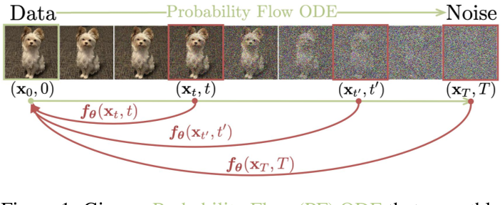
一致性模型的定义
假设存在一个函数f，对于同一条PF ODE轨迹上的任意点都有相同的输出:
$$ \boldsymbol{f} ( x_t , t ) = \boldsymbol{f} ( x_{t^{\prime}} , t^{\prime} ) \text { for all } t , t ^{\prime} \in [ \epsilon , T ] $$
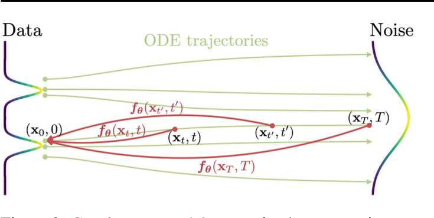
consistency model的目标是从数据中估计一致性函数f，来迫使self-consistency性质
一致性模型参数化
要拟合的一致性函数 \( f(\cdot, \cdot) \)要满足两个条件：①同一个轨迹上的点输出一致；②在起始点f为一个对于x的恒等函数
第一种做法简单地参数化consistency models
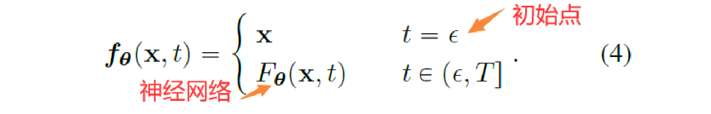
第二种做法使用跳跃连接（作者和许多其他的都用这个）
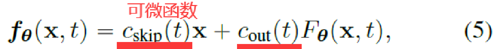
其中 \(c_{skip}\)和 \(c_{out}\)为可微函数，满足 \(c_{skip}(\epsilon) = 1, c_{out}(\epsilon) = 0\). \(F_{\theta}\)为深度神经网络，可使用一致性损失来学习，输出维度同 x.
一致性模型采样
观察 f 的性质，显然， \(f(x_T,T) = x_{\epsilon}\)可以得到我们想要的生成结果。但一般认为，这样的生成误差会比较大。所以我们每次从\(x_{\tau_n}\) 预测出初始的 \(x_\)后，回退一步来预测\(x_{\tau_{n-1}}\) 来减小误差。因此有如下多步采样的算法。
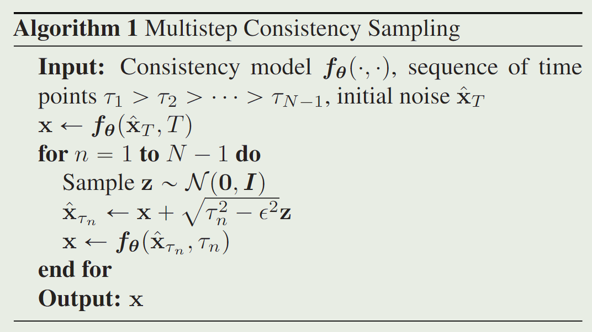
实际中，采用贪心算法来寻找时间点，通过三值搜索每次确定一个时间点。
Consistency Models 的训练方式
考虑到 Consistency Models 的性质，对采样轨迹上的不同点，f应该有一个相同的输出，自然我们需要找到采样的轨迹。
Training Consistency Models via Distillation
如果我们有预训练的diffusion model，自然可以构建轨迹。
假设采样轨迹的时间序列为
$$ t_{1}=\epsilon<t_{2}<\cdots<t_{N}=T $$
通过运行数值ODE求解器的一个离散化步骤从 \(\mathbf{x}{t{n+1}}\) 得到 \( \mathbf{x}{t{n}}\)
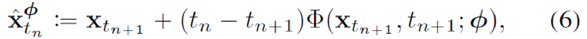
其中Φ(...;ϕ)为ODE solver，可以是任意ODE Solver，一般来说阶数越高的 Solver 求解精度越高。
例如使用Euler solver
$$ \frac{\mathrm{dx}}{\mathrm{d} t}=-t s_{\phi}\left(\mathrm{x}_{t}, t\right)\\ \Phi(\mathrm{x}, t ; \phi)=-t s _{\phi}(\mathrm{x}, t) $$
带入上式得到
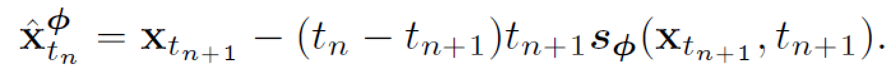
对于处于同一轨道的 \((x_{t_{n-1}},t_{n-1}),(\hat x_{t_{n}}^\phi,t_{n})\)，f应该有相同的输出，我们用距离函数 d 来衡量输出是否相同。因而有如下训练损失
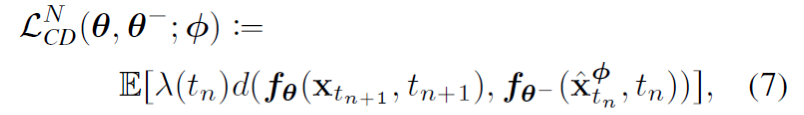
其中 \(\lambda\)用来对不同时间步赋予不同重要性，\(\theta^-\)为 EMA 版本的权重。采用EMA来更新模型会提高训练的稳定性，并且性能会更好。
综合上述过程，蒸馏（Consistency Distillation）的算法为
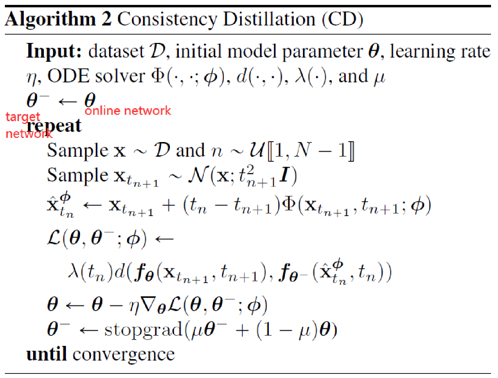
Training Consistency Models in Isolation
Consistency models也可以单独进行训练，而不依赖于预训练好的扩散模型。在蒸馏的过程中，我们实际上用预训练模型来估计得分\(\nabla \log p_t(x)\) 。 如果从头训练，需要找一个不依赖于预训练模型的估计方法。
作者在论文中证明了一种新得分函数的估计

利用该得分估计，作者为从 Isolation Training 构建了一个新的训练损失，

并且证明了该 Loss 和 Distillation Loss 在最大间隔趋于0时相等。即

从而可以利用上述 loss 训练一个 Consistency Models，并且不依赖于已有 Diffusion Model。具体算法如下

有效
缺陷
验证
启发
遗留问题
参考材料
[1] https://zhuanlan.zhihu.com/p/621673283 [2] https://blog.csdn.net/singxsy/article/details/130243343 [3] https://blog.csdn.net/WiSirius/article/details/134670307 [4] https://www.jianshu.com/p/3b712cbe6d0d
Classifier-Free Diffusion Guidance
https://readpaper.com/pdf-annotate/note?pdfId=4650228075519295489
核心问题是什么?
现有方法：Classifier Guidance
类别引导的方法就是使用额外训练的分类器来提升扩散模型生成样本的质量。
在使用类别引导扩散模型生成之前，扩散模型很难生成类似于 BigGAN 或 Glow 生成的那种 low temperature（和训练数据的分布非常接近的样本，更清晰且逼真） 的样本。
分类器引导是一种混合了扩散模型分数估计与分类器概率输入梯度的方法。通过改变分类器梯度的强度，可以在 Inception 得分和 FID 得分（两种评价生成模型性能的指标）之间进行权衡，就像调整 BigGAN 中截断参数一样。

从上式可以看到，Classifier Guidance 条件生成只需额外添加一个classifier的梯度来引导。从成本上看，Classifier Guidance 需要训练噪声数据版本的classifier网络，推理时每一步都需要额外计算classifier的梯度。
Classifier Guidance 的问题
- 需要额外训练一个噪声版本的图像分类器
- 分类器的质量会影响按类别生成的效果
- 通过梯度更新图像会导致对抗攻击效应，生成图像可能会通过人眼不可察觉的细节欺骗分类器，实际上并没有按条件生成。
本文方法
因此，作者想要探索是否可以在不使用任何分类器的情况下实现类似效果。因为，使用分类器引导会使扩散模型训练流程复杂化，它需要额外训练一个用于处理噪声数据的分类器，并且在采样过程中将分数估计与该分类器梯度混合。
所以作者提出了无需任何依赖于特定目标或者任务设定的 classifier-free guidance 方法。
核心贡献是什么？
目标：训练一个diffusion 模型，不需要训练分类模型，不受限于类别，直接用条件控制即可
假设有一个训好的无条件diffusion model，Classifier Guidance只需要在此基础上再训练一个噪声版本的图像分类器。但classifier-free guidance则需要完全重训diffsion model，已有的diffusion model用不上。
OPENAI 提出了 可以通过调节引导权重，控制生成图像的逼真性和多样性的平衡的 classifier-free guidance，思想是通过一个隐式分类器来替代显示分类器，而无需直接计算显式分类器及其梯度。
大致方法是什么？
原理
“无分类器引导”（Classifier-free guidance）可以在不需要分类器的情况下提供与分类器引导相同的效果。它通过一个隐式分类器来替代显示分类器，而无需直接计算显式分类器及其梯度。
分类器的梯度如下:

把这个分类器带入 classifier guidance 梯度中，得到如下：

当 w=-1 为无条件模型；当 w=0 为标准的条件概率模型。当 w>0 时，是classifier-free guidance。
训练
Classifier-Free Guidance需要训练两个模型，一个是无条件生成模型，另一个是条件生成模型。这两个模型都同一个模型表示，用同一神经网络进行参数化，并且同时训练。
虽然也可以选择独立训练每个单独的模型，但联合训练更简单、不会复杂化训练流程，并且不会增加总体参数数量。
训练时只需要以一定概率将条件置空即可。
✅ 训练时随机地使用“条件+数据”和“None+数据”进行训练。
推断
推理时，分别使用条件生成模型和无条件生成模型生成结果，最终结果可以以上两个结果的线性外推获得。
生成效果可以引导系数可以调节，控制生成样本的逼真性和多样性的平衡。
有效
为什么这比 classifier guidance 好得多？主要原因是我们从生成模型构造了“分类器”，而标准分类器可以走捷径：忽视输入 x 依然可以获得有竞争力的分类结果，而生成模型不容易被糊弄，这使得得到的梯度更加稳健。
缺陷
验证

Large guidance weight \((\omega )\) usually leads to better individual sample quality but less sample diversity.
启发
遗留问题
参考材料
[1] https://blog.csdn.net/jiaoyangwm/article/details/135101303
[2] https://sunlin-ai.github.io/2022/06/01/Classifier-Free-Diffusion.html
Cascaded Diffusion Models for High Fidelity Image Generation
核心问题是什么?
没有强大条件信息的大型高保真数据集上提升扩散模型的样本质量。
级联扩散模型能够生成高保真图像，而无需辅助图像分类器的任何帮助来提高样本质量。
级联扩散模型的生成质量主要依赖于条件增强，这是我们提出的超分辨率模型的低分辨率条件输入的数据增强方法。我们的实验表明，条件增强可以防止级联模型中采样过程中的复合误差，这有助于我们训练级联pipeline。
核心贡献是什么？
贡献1：使用级联扩散模型 (CDM)（不需要与任何分类器结合的纯生成模型） 产生的高保真度样本。 贡献2：为超分辨率模型super-resolution models引入了条件增强（这对于实现高样本保真度至关重要），并提出了超分辨率模型低分辨率条件输入的数据增强方法。 贡献3：我们对增强策略进行了深入探索，发现高斯增强是低分辨率上采样的关键因素，而高斯模糊是高分辨率上采样的关键因素。我们还展示了如何有效地训练在不同水平的条件增强上摊销的模型，以实现训练后超参数搜索以获得最佳样本质量。
大致方法是什么？


有效
条件增强可防止级联模型采样期间的复合误差。
缺陷
验证
启发
遗留问题
参考材料
https://blog.csdn.net/qq_43800752/article/details/130153729
LEARNING ENERGY-BASED MODELS BY DIFFUSIONRECOVERY LIKELIHOOD
https://readpaper.com/pdf-annotate/note?pdfId=4557039050691715073¬eId=2184260463570356480
核心问题是什么?
虽然基于能量的模型 (EBM) 在高维数据集上表现出许多理想的属性，但在高维数据集上进行训练和采样仍然具有挑战性。
核心贡献是什么？
我们提出了一种diffusion recovery likelihood方法，在数据集的越来越嘈杂的版本上训练的一系列 EBM ，并从中训练和采样。
大致方法是什么？
每个 EBM 都使用recovery likelihood进行训练，这使得：给定数据集在较高噪声水平下的噪声版本，数据在特定噪声水平下的条件概率最大化。
优化recovery likelihood比marginal likelihood更容易处理，因为从条件分布中采样比从边际分布中采样容易得多。训练后，可以通过采样过程生成合成图像，该采样过程从高斯白噪声分布初始化，并以逐渐降低的噪声水平逐步对条件分布进行采样。
有效
After training, synthesized images can be generated by the sampling process that initializes from Gaussian white noise distribution and progressively samples the conditional distributions at decreasingly lower noise levels.
Our method generates high fidelity samples on various image datasets.
缺陷
验证
启发
遗留问题
参考材料
On Distillation of Guided Diffusion Models
核心问题是什么?
无分类器引导扩散模型的缺点是，它们在推理时的计算成本很高，因为它们需要评估两个扩散模型（一个类条件模型和一个无条件模型）数十到数百次。
而现有的加速方法不适用于classifier-free guided diffusion models。
核心贡献是什么？
使用两步蒸馏法提升classifier-free guided diffusion models的采样效率。
给定一个预先训练的无分类器引导模型，我们首先学习一个模型来匹配两个教师模型（条件模型和无条件模型）的组合输出，然后我们逐步将该模型提炼为需要更少采样步骤的扩散模型。
大致方法是什么？
第一阶段
引入单个学生模型来匹配两个老师扩散模型（条件模型和无条件模型）的组合输出。
classifier-free guidance使用w来权衡条件模型（质量）和无条件模型（多样性）。因此蒸馏模型也应该能够保持这一特性。
给定我们感兴趣的指导强度范围 [wmin, wmax]，使用以下目标优化学生模型
其中\(\hat x_{\theta}^w(z_t)\)是由两个老师扩散模型提供的GT。\(\hat x_{\eta 1}(z_t, w)\)是要学习的学生模型。
- 对 w 应用傅里叶嵌入，然后将其合并到扩散模型主干中，其方式类似于将时间步。
- 学生模型与老师模型相同，且使用老师模型来初始化学习模型。
第二阶段
逐步将第一阶段学习的模型提炼为少步模型，见PROGRESSIVE DISTILLATION FOR FAST SAMPLING OF DIFFUSION MODELS.
有效
- 对于在像素空间上训练的标准扩散模型，我们的方法能够在 ImageNet 64x64 和 CIFAR-10 上使用短短 4 个采样步骤生成视觉上与原始模型相当的图像，实现与原始模型相当的 FID/IS 分数原始模型的采样速度提高了 256 倍。
- 对于在隐空间上训练的扩散模型（例如稳定扩散），我们的方法能够使用少至 1 到 4 个去噪步骤生成高保真图像，与 ImageNet 上的现有方法相比，推理速度至少提高 10 倍256x256 和 LAION 数据集。
- 在文本引导图像编辑和修复方面，我们的蒸馏模型能够使用少至 2-4 个去噪步骤生成高质量的结果。 For standard diffusion models trained on the pixel-space, our approach is able to generate images visually comparable to that of the original model using as few as 4 sampling steps on ImageNet 64x64 and CIFAR-10, achieving FID/IS scores comparable to that of the original model while being up to 256 times faster to sample from.
缺陷
验证
启发
参考材料
- https://blog.csdn.net/zjc910997316/article/details/131812691
- https://caterpillarstudygroup.github.io/ImportantArticles/diffusion-tutorial-part/diffusiontutorialpart1.html
Denoising Diffusion Implicit Models
核心问题是什么？
DDPM的生成速度太慢，其本质原因是：在对\(p_{\theta}(x_{t-1}|x_t)\)的推导中，DDPM用到了一阶马尔可夫假设，使得\(p(x_t|x_{t-1},x_0)=p(x_t|x_{t-1})\) 。
在DDPM中往往需要较大的T才能得到较好的结果(论文中 )，这导致需要T次采样步长。因此重建的步长非常长，导致速度慢。
核心贡献是什么？
DDPM为什么这么慢
DDPM速度慢的本质原因是对马尔可夫假设的依赖，导致重建需要较多的步长。那么不用一阶马尔可夫假设，有没有另一种方法推导出\(p(x_{t-1}|x_{t},x_0)\) 。
前面我们提到，DDPM的前向过程主要是用于构造数据集，来训练噪声预测模型。在实际优化过程中，其实并没有用到前向过程的马尔可夫假设，只用到了推理分布 \(q(x_t|x_0)\) ，因此如果DDIM也能满足这个推理分布的话，那么直接就可以复用DDPM的噪声预测模型了
✅ 马尔可夫假设认为，\(x_{t}\)只与\(x_{t-1}\)有关。但前向过程中\(x_{t}\)由\(x_0\)得到，而不是由\(x_{t-1}\)得到，因此不依赖马尔可夫假设。
✅ 而反向过程中，\(x_{t-1}\)需要\(x_{t}\)，因此是依赖马尔可夫假设。
✅ 如果找到一种方法，不需要计算通过\(x_{t}\)的分布来计算\(x_{t-1}\)的分布，那么就是不依赖于马尔可夫假设。
DDIM如何不依赖马尔科夫假设
归纳一下DDIM想要做的
- DDIM希望构建一个采样分布\(p(x_{t-1}|x_{t},x_0)\)，这个采样分布不依赖一阶马尔科夫假设
- DDIM希望维持这个前向推理分布\(q(x_t|x_0) = \mathcal{N} (x_t;\sqrt{{\alpha_t}}x_0,(1-{\alpha_t})I)\)
DDPM中的\(p(x_{t-1}|x_{t},x_0)\)

根据DDPM的结果参考，采样分布\(p(x_{t-1}|x_{t},x_0)\)是一个高斯分布，并且均值是\(x_{0}, x_t\)的线性函数，方差是一个与时间步有关的函数。
DDIM中的\(p(x_{t-1}|x_{t},x_0)\)
DDIM也假设\(p(x_{t-1}|x_{t},x_0)\)是一个高斯分布，并且均值也是\(x_{0}, x_t\)的线性函数，方差是时间步t的函数，即:
$$ p(x_{t-1}|x_{t},x_0) = \mathcal{N}(x_{t-1};\lambda x_0 + k x_t, \sigma^2_t I) $$
这个采样分布有3个自由变量\(\lambda, k, \sigma_t\)，理论上有无穷多个解。但DDIM想要维持与DDPM一致的推理分布\(q(x_t|x_0) = \mathcal{N} (x_t;\sqrt{{\alpha_t}}x_0,(1-{\alpha_t})I)\) 。这样问题就转化成，找到一组解\(\lambda^{ * }, k^{ * }, \sigma_t^{ * }\) ，使得DDIM的推理分布满足\(q(x_t|x_0) = \mathcal{N} (x_t;\sqrt{{\alpha_t}}x_0,(1-{\alpha_t})I)\) 。
求解DDIM中的未知量
根据\(q(x_t|x_0)\)条件，列出方程组并求解未知量\(\lambda, k, \sigma_t\)：
$$ p(x_{t-1}|x_{t},x_0) = \mathcal{N}(x_{t-1};\lambda x_0 + k x_t, \sigma^2_t I)\\ q(x_{t-1}|x_0) = \mathcal{N} (x_{t-1};\sqrt{{\alpha_{t-1}}}x_0,(1-{\alpha_{t-1}})I) $$
两个方程，三个未知量。因此把\(\sigma_t\)把看作是控制生成过程的超参，只解\(\lambda, k\)。
解方程过程省略，见参考材料[1]。解得：
DDIM采样分布的使用
解出(\lambda, k\)，得到DDIM的采样分布：
不同的\(\sigma_t\)对应不同生成过程。由于前向过程没变，故可以直接用DDPM训练的噪声预测模型。其采样过程如下：
两个特殊的case
- 当 \(\sigma_t = \sqrt{\frac{1-\alpha_{t-1}}{1-\alpha_{t}}}\sqrt{\frac{1-\alpha_{t}}{\alpha_{t-1}}}\)时，此时的生成过程与DDPM一致。
- 当\(\sigma_t = 0\)时，此时采样过程中添加的随机噪声项为0，当给定初始噪声z时，采样过程是确定的，此时的生成模型是一个隐概率模型(implicit probabilstic model)[1]。作者将此时diffusion model称之为denoising diffusion implicit model（DDIM）。此时的采样递推公式
DDIM，快速地生成且生成结果是确定的。由于生成结果是确定的，可用于latent space插值、编辑等任务。
大致方法
DDIM加速采样的思路很简单，假定原本的生成序列为\(L=[T,T-1,\dots,1]\) ,其长度为\(\dim(L)=T\) ,我们可以从生成序列 中构建一个子序列\(\tau=[\tau_s,\tau_{s-1},\dots,\tau_1]\) ，其长度\(\dim(\tau)=S,S\ll T\) 。在生成过程，按照构造序列\(\tau\)进行采样。此时的采样递推序列为
有效性
- 论文给出了不同的采样步长的生成效果。可以看到DDIM在较小采样步长时就能达到较好的生成效果。如CIFAR10 S=50就达到了S=1000的90%的效果，与之相对DDPM只能达到10%左右的FID效果。可见DDPM在推导采样分布中用了马尔可夫假设的确限制了它的采样间隔。
- DDIM将\(\sigma_t\) 设置为0，这让采样过程是确定的，只受\(x_T\)影响。作者发现，当给定\(x_T\) ，不同的的采样时间序列\(\tau\) 所生成图片都很相近，\(x_T\)似乎可以视作生成图片的隐编码信息。
启发
- 有个小trick，我们在实际的生成中可以先设置较小的采样步长进行生成，若生成的图片是我们想要的，则用较大的步长重新生成高质量的图片。
- \(x_T\)可能是生成图片的隐空间编码，且它具备其它隐概率模型(如GAN[2])所观察到的语义插值效应。
遗留问题
不按推理步骤按序预测噪声会不会有问题。
答案是不会。

从上图可以看到，在训练时，是从时间序列\([1,2,\dots,T]\)进行采样时间步，再从高斯分布采样噪声，直接从\(x_0\) 出发计算\(x_t\) ，随后传入模型，根据预测噪声与实际噪声计算损失迭代模型。我们可以看到在这个训练pipeline中并没有限制时序信息。当噪声预测模型充分训练时DDIM的采样序列 也是在训练过程中被充分训练的。（论文附录C.1给出了更为详尽的解释推导，感兴趣的同学可以看论文）。
缺陷
验证方法
参考材料
[1] https://zhuanlan.zhihu.com/p/639540034
本文出自CaterpillarStudyGroup，转载请注明出处。
https://caterpillarstudygroup.github.io/ReadPapers/
PROGRESSIVE DISTILLATION FOR FAST SAMPLING OF DIFFUSION MODELS
https://readpaper.com/pdf-annotate/note?pdfId=4667185955594059777
核心问题是什么？
DDPM的生成需要T次采样，T通常很大，生成速度太慢。
相关工作(Chapter 6)
perform distillation of DDIM teacher models into one-step student models
- Eric Luhman and Troy Luhman. Knowledge distillation in iterative generative models for improved sampling speed. arXiv preprint arXiv:2101.02388, 2021.
few-step sampling, as was the probability flow sampler
- DDIM (Song et al., 2021a) was originally shown to be effective for few-step sampling, as was the probability flow sampler (Song et al., 2021c).
- Jolicoeur-Martineau et al. (2021) study fast SDE integrators for reverse diffusion processes
- Tzen & Raginsky (2019b) study unbiased samplers which may be useful for fast, high quality sampling as well.
Other work on fast sampling can be viewed as manual or automated methods to adjust samplers or diffusion processes for fast generation.
- Nichol & Dhariwal (2021); Kong & Ping (2021) describe methods to adjust a discrete time diffusion model trained on many timesteps into models that can sample in few timesteps.
- Watson et al. (2021) describe a dynamic programming algorithm to reduce the number of timesteps for a diffusion model in a way that is optimal for log likelihood.
- Chen et al. (2021); Saharia et al. (2021); Ho et al. (2021) train diffusion models over continuous noise levels and tune samplers post training by adjusting the noise levels of a few-step discrete time reverse diffusion process.
- Their method is effective in highly conditioned settings such as text-to-speech and image super-resolution. San-Roman et al. (2021) train a new network to estimate the noise level of noisy data and show how to use this estimate to speed up sampling.
Alternative specifications of the diffusion model can also lend themselves to fast sampling,
- modified forward and reverse processes (Nachmani et al., 2021; Lam et al., 2021)
- training diffusion models in latent space (Vahdat et al., 2021).
核心贡献是什么？
加速DDPM的生成过程。
- 提出了新的扩散模型参数化方式，在使用少量采样步骤时可以提供更高的稳定性。
- 提出了一种知识蒸馏的方法，可以把更高的迭代次数优化为更低的迭代次数。
大致方法是什么？
- Distill a deterministic ODE sampler to the same model architecture.
- At each stage, a “student” model is learned to distill two adjacent sampling steps of the “teacher” model to one sampling step.
- At next stage, the “student” model from previous stage will serve as the new “teacher” model.
✅ 假设有一个 solver，可以根据$x_t$ 预测$x_{t-1}$．
✅ 调用两次 solver，可以从 $x_t$ 得到$x_{t-2}$，学习这个过程，可以直接得到 2 step 的 solver.
✅ 前一个 solver 称为 teacher，后一个称为 student.
✅ student 成为新的 teacher，训练新的 student.
有效性
On standard image generation benchmarks like CIFAR-10, ImageNet, and LSUN, we start out with state-of-the-art samplers taking as many as 8192 steps, and are able to distill down to models taking as few as 4 steps without losing much perceptual quality; achieving, for example, a FID of 3.0 on CIFAR-10 in 4 steps.
缺陷
| 局限 | 改进点 |
|---|---|
| In the current work we limited ourselves to setups where the student model has the same architecture and number of parameters as the teacher model: | in future work we hope to relax this constraint and explore settings where the student model is smaller, potentially enabling further gains in test time computational requirements. |
| In addition, we hope to move past the generation of images and also explore progressive distillation of diffusion models for different data modalities such as e.g. audio (Chen et al., 2021). | |
| In addition to the proposed distillation procedure, some of our progress was realized through different parameterizations of the diffusion model and its training loss. We expect to see more progress in this direction as the community further explores this model class. |
验证
启发
- The resulting target value $\tilde x(z_t)$ is fully determined given the teacher model and starting point $z_t$, which allows the student model to make a sharp prediction when evaluated at$z_t$. In contrast, the original data point x is not fully determined given $z_t$, since multiple different data points x can produce the same noisy data $z_t$: this means that the original denoising model is predicting a weighted average of possible x values, which produces a blurry prediction.
- 对噪声求L2 loss可以看作是加权平均的重建L2 loss，推导过程见公式9。但在distillation过程中，不适合预测噪声，而应该重建。
- In practice, the choice of loss weighting also has to take into account how αt, σt are sampled during training, as this sampling distribution strongly determines the weight the expected loss gives to each signal-to-noise ratio.
遗留问题
- 很多细节看不懂。比如预测x与预测噪声的关系。怎么定义weight?parameterizations of the denoising diffusion model?DDIM?
- https://caterpillarstudygroup.github.io/ImportantArticles/diffusion-tutorial-part/diffusiontutorialpart1.html